| 新妻はみだらに濡れる (蜜猫文庫) | |
| 森本あき | |
| 株式会社竹書房 (2014) | |
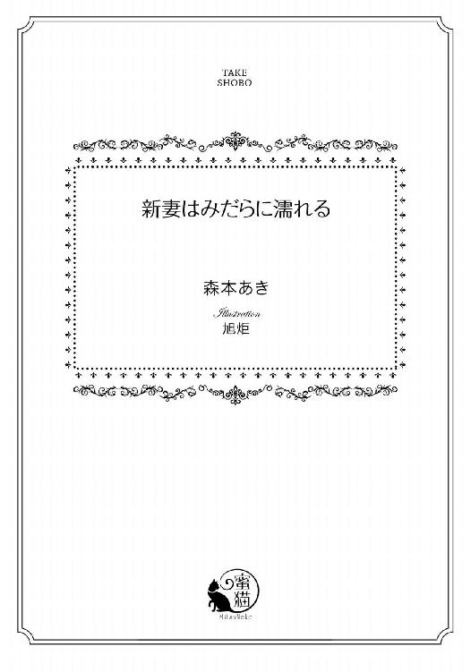
この作品は縦書きでレイアウトされています。
また、ご覧になる機種により、表示の差異が認められることがあります。
一部の漢字が簡略字で表示されていることがあります。
イラスト／旭炬
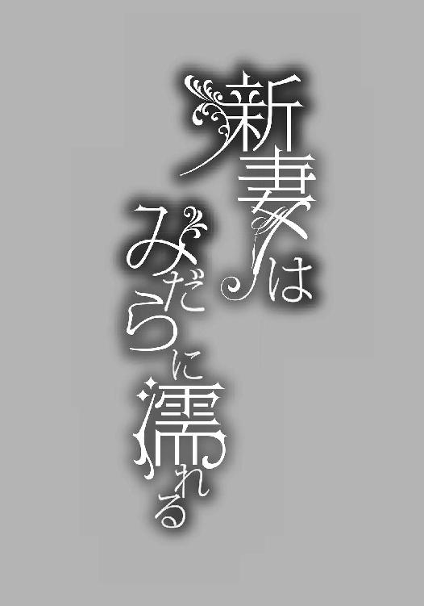
どうして、わたしがこんな目にあわなきゃならないの？
わけがわからない。
本当に、腹が立つ。
１
パイプオルガンの荘厳な音色が聞こえて、エミリア・アッカーソンは、そっと小さくため息をついた。
どうにかして、逃げられないかしら。
ふと魔が差して、そう考えてしまったのを見透かされたのか、腕を組んだ父親の手が、そっとエミリアの手を握りしめる。
逃げてもいいんだよ。
そう告げるかのように、父親は、トントン、と何度かエミリアの手の甲をやさしくたたいた。その行為で、エミリアは、はっと我に返る。
逃げるつもりなんてない。これは、エミリアが決めたことだ。
エミリアは、ピン、と背筋を伸ばした。
ほんのちょっと弱気になっただけ。もう、大丈夫。
エミリアの気持ちを察したのか、父親があきらめたように首を振って、それから、やわらかくささやいた。
「きれいだよ、エミリア」
いったい、それがどうしたというのだろう。
エミリアは、ぎゅっと唇を噛む。声に出さずに、おなかに怒りをためる。
そんな言葉が慰めになる、なんて、甘いことを考えているから、先祖代々、築き上げてきた資産を、たった一人で食いつぶすようなことになるんじゃない。
それも、豪勢にぱーっと使って、とかなら、理解できる。お父様はバカだけど、好きなことをしたんだから本人は満足よね、と思えたかもしれない。
お金持ちには、寄生虫がつきものだ。
それを、だれも教えなかったなんて。
まずは、絶対に儲かる、という、ありえない話を持ってきた怪しげな投資会社に全財産の半分を渡した。
何倍にもなったら、孫のそのまた孫の代まで、何も考えずに暮らしていけるんだよ。
あのときの父親の、得意そうな表情をいまだに覚えている。エミリアは、まだほんの子供だったけど、大丈夫なんだろうか、と心配になった。
世の中には、うまい話はそうそう転がっていない。
小さいころから本をたくさん読んで、経験をともなわない知識だけは、いろいろ身につけていたエミリアは、そのことをわかっていた。だから、父親に聞いたのだ。
お父様、だまされてない？
父親は少し驚いたような顔になって、そのあと、とても寂しそうな表情をした。子供なのに、他人を信じられないなんて、とでも思っていたのだろうか。
大丈夫だよ、エミリア。話を持ってきたのは、お父さんの古くからの友人で、とても信用できる相手なんだ。
その信用できる相手が、父親のお金とともに失踪したのは、その二、三日後だった。資金繰りに困って、友人すべてをだまそうとして、結果、ひっかかったのが父親だったらしい。なんで、あんな危険な話にのったんだ、とほかの友人にバカにされている場面を、たまたま目撃したエミリアは、悔しさに唇を噛んだ。
だから言ったのに！ お父様のバカ！
子供だからって、エミリアの意見を無視した。それどころか、エミリアのことを気の毒がった。
しばらく落ち込んでいた父親を、エミリアは避けるようになった。
もう知らない、という気持ちと、傷ついた子供心を抱えて、エミリアは、ますます本の世界に逃避した。
子供特有の潔癖さと傲慢さをあわせもっていたエミリアは、あつかいにくかったんだろう、といまならわかる。エミリアだって、昔の自分がここにいたら、うざいガキね、ぐらいのことは言いかねない。
やさしい母親がとりなしてくれて、エミリアが普通に父親と接するようになったころ、また事件が起きた。
あんな大金を友人にやるなんてバカじゃないのか、あいつはだましやすい、という話が広がっていたのかもしれない。いろんな人が、父親に金の無心に来るようになった。
いわく、ちょっと金に困ってるから融通してくれないか、利子をつけて返すから、いわく、新しい会社を作るから共同出資者になってくれ、いわく、天然資源を掘り当てるための元手がない、儲かったら返すから出してくれ。
ありとあらゆる詐欺の手を、つぎからつぎへと見せつけられた。さすがの父親も、二度目はだまされなかった。用心していたし、怪しい話には飛びつかない、と決めていたから。
エミリアは安心していた。
お父様も、ちゃんと成長しているんだわ。
生意気ざかりの子供は、そんなふうに思った。
その裏で、最大級の詐欺が進行しているとも知らずに。
父親は、自分のせいでなくした資産の半分を、どうしても取り戻したかったようだ。だから、持ちかけられる話を、ちゃんと検討した。裏も取った。その中で、もっとも信用できる相手に、ある程度のまとまった金額を預けた。
すべて預けなかったことは、父親なりの成長の証だと、それだけは認めてあげたい、と思う。父親に対して、ものすごく上から目線なことはわかっているけど、ほかにほめるべきところが見つからないんだもの。
一年後、そのお金は倍になって返ってきた。資産がかなり戻ってきたことにほっとして、つぎにおなじ相手から話が来たときは、もう少し大きな金額を預けた。
一年後、またもや、それは倍に。そのころには、損失がほぼなくなっていて、父親は、すっかり相手を信用してしまっていた。
金持ちをだますのは、たぶん、赤子の手をひねるぐらい簡単なのだろう。最初にエサを与えて、焦らずに何年か計画でお金を引き出す。
そのつぎ、話が来たとき、父親は周りの友人も誘った。こんないい話を独占するなんて申し訳ない、と思ったのだ。
父親は、とことんいい人で。そして、とことん、いいカモだった。
最後のそのとき、父親は全財産の半分を預けた。我も我も、と参加した友人は二十人を超え、そのだれもが、父親ほどじゃなくても、かなりの金額を渡した。全部をあわせると、いったい、どれだけになったのか、計算すらしたくない。
大金を手にした詐欺師は、当然のことながら、二度と戻ってこなかった。約束の一年がたって、うきうきと待つ父親と、祝杯をあげるべく集まったその友人たちの表情が、どんどん青ざめていく様を想像して、どこかで笑っていたのかもしれない。
期日は明日だったかもしれない。
父親は、希望を捨てなかった。
いや、あさってかも。つぎの日かも。
長年に渡る詐欺だったと父親が気づくのに、一週間かかった。その間に、友達はすべていなくなり、金を返せ、と口汚くののしる光景が、あちこちで見られるようになった。
だから、返した。
半分残っていた資産では、とても足りなくて。どうにかしてお金を工面しようとしても、二度も詐欺にあう父親に貸してくれる人なんて、いるはずもなくて。
結局、高利貸しに頼ることになった。
あなたには、お金はありませんが、売れるものがありますからね。
高利貸しは、お金を貸してくれるときに、そう言ったらしい。それが何かわかるのに、そんんなに時間はかからなかった。
父親は、一気に老けた。白髪が増えて、皺が深くなり、生気もなくなった。
本当にショックなことが起こると人相が変わるんだなあ、とエミリアはひとごとのように思ってた覚えがある。
もしかしたら、エミリアもまた、現実を認めたくなかったのかもしれない。
友人だった相手に、すべてのお金を返し終えたとき。
あいつは、まかせてください、と言ったんだ。
父親は、ぽつり、とつぶやいた。
満面の笑みで、そう告げたんだ。だから、私は信じたんだよ。
悔しそうでもなく、悲しそうでもなく、淡々としていた。だから、いっそう、父親の深い後悔が伝わってきた。
友人たちは去り、資産はなくなり、残ったのは多額の借金。それも、これから一生働いても、返せそうもないほどの金額。そもそも働いたこともない父親は、どうやってお金を稼ぐのか、それすらもわからなかっただろう。
死のうと思ったよ。
父親は、そう言った。
バカじゃないの、と声に出さずに、エミリアは思う。自分が播いた種なのに、後始末もしないで逃げようとするなんて、ホントにバカ。
そのころはもう、父親のことをあきれた、というよりは、自分とはちがう人種だ、と考えるようになっていた。
だからといって、見捨てるわけにもいかない。だって、父親にとって、エミリアはただ一人の家族なのだから。
母親は、とっくに父親のもとを去っていた。やさしかった母親は、友人たちの非難に耐えきれず、泣いてばかりで、父親が離縁して、母親を実家に戻した。そうしなければ、母親の心は壊れていた。
エミリアも一緒においで。
母親は、もうすぐ売りに出してしまう大きなお屋敷を去るときに、悲しそうな表情でそう告げた。エミリアの答えをわかっていて、それでも、娘と離れたくなかったのだろう。母親の愛情を疑ったことなんてない。
ごめんね、お母様。
エミリアの胸は、すごく痛んだ。母親のことは、本当に大好きだから。こんなにやさしい人はいない、と思っていたし、いまでも、その気持ちはかわらない。本の世界に生きていたエミリアに、たくさんの本を薦めてくれた。本の内容について、夜通し話し合ったこともある。
エミリアのやることを、一度も批判も非難もしなかった。心から愛して、かわいがってくれた。
だから、身が引き裂かれるようだった。
でも。
わたし、ここに残る。お父様のそばにいる。
母親よりも強いエミリアは、これからしっかり、父親を見張っていかなきゃいけない。死のうとした、なんてことを平気で娘に向かって言えるほど責任感とかけ離れた人を、きちんと立ち直らせなきゃ。
借金が、やまほどある。返せるあてはまったくないけど、ほっとくわけにはいかない。高利貸しは絶対にあきらめない、と聞いたことがあるからだ。
なのに、父親は、友人たちにお金を返し終わってほっとしたのか、自分の借金について深く考えるのをやめてしまっていた。この状況を打破するつもりもないらしい。自分を憐れんで、一日中、ぼーっと窓の外を眺めているだけ。
そんなふうにしていても、どうにもならないのに。一歩も動かないでいたら、一銭も入ってこない。ちょっとでも働けば、小銭が稼げる。
働き方がわからないから、ただ座っているしかないのはわかっている。エミリアだって、どうやって仕事を探せばいいのか知らない。
小さいころから、お金は当然、あるもので。こんな環境に陥るなんて思っていなかった。
父親のことを非難しているエミリアだって、十分、考えは甘い。
いまはまだ、高利貸しから借りたお金が、ほんの少しだけ残っている。お屋敷の買い手もついていないから、住みつづけることもできる。
だけど、いつか。
かなり近い、いつか。
お金は底をつき、住むところもなくなるのだ。
たくさんいたはずの友人は去って行った。お金を貸してくれそうな親戚には、電話をしようと手紙を書こうと、なんの返事もない。御用聞きも、立ち寄らなくなった。エミリアは歩いて街まで行き、一週間分の食料を買ってくる。
ああ、あれがアッカーソンのお嬢さんかい。
そんな陰口にも慣れた。だって、買い物しなきゃ食べていけないんだから、しょうがない。
父親みたいに家にこもって、人目を避けても、なんの解決にもならない。
自分が情けない、とことあるごとに言うくせに、エミリアの出す食事を、なんの疑問も抱かずに食べている父親を見ていたら、すべてがバカバカしくなってくる。
ねえ、お父様、うちにお金がないのに、どうしてごはんが食べられているの？ 使用人もみんないなくなって、コックもいないのに、だれが作ってるんだと思う？
そう聞いたら、父親はまた驚くだろうか。わが身のひどさを呪って、さめざめと泣くのだろうか。
そんな姿を見たくないから、黙っている。
白魚のような、と形容されたこともあるエミリアの真っ白い手は、いつの間にか、ざらつくようになった。
水仕事って、こんなに手が荒れるんだ。
エミリアは、ちょっと感心した。知識を身につけるのは好きだから、食事を作るのも苦じゃなかった。
安いパンと、卵と、賞味期限が切れそうなハムやチーズやたくさんの野菜で、少しずつ変化をつけながら、飽きないようにいろいろ作るのは楽しかった。
だけど、手元に残ったお金を改めて数えて、いつまでも、こうやって過ごせるわけがない、と理解する。
お父様のことをいろいろ言ったけど、わたしだって、頭にお花が咲いていたんだわ。先のことを、まったく考えてなかったなんて。
どうにかしなきゃ、じゃなくて、どうにかする。
そう決意したエミリアは、いつものように本に頼った。今度は空想の物語じゃなくて、お金にまつわる実用的な本。
いっぱい知識をつければどうにかなる。
その考えは、甘かった。知れば知るほど、いまの自分たちの状況がどうしようもないものだと、思い知らされるばかり。
お金になるものなんて、たったひとつしかない。
だったら、それを売ろう。
「お父様、わたし、お嫁に行くわ」
エミリアは、そう宣言した。父親は驚いたようにエミリアを見る。
「何を言ってるんだ？」
何度もだまされた父親は、つぎはエミリアにだまされるのか、と身構えたようだ。
だから、この人は。
エミリアは、ふう、とため息をつきそうになる。
用心するところがちがう。お金なんて増やさなくてよかった。半分だましとられた時点で、痛い勉強代だったとあきらめていれば、孫の代ぐらいまでは安穏と暮らせた。
でも、言わない。父親の悲しい目に、これ以上、耐えられない。
そう、なんだかんだ言っても、エミリアは父親が好きなのだ。
あきれているし、怒っているし、ちがう人種だとみなしているし、絶対に頼りにはしないけど。
それでも、ここに残った。やったことのない家事を、四苦八苦しながらしているのも、父親のため。
ただし、このまま、二人で細々と暮らしつづけることはできない。あと何日かしたら、高利貸しの返済期限がやってくる。
その前に、自分を高く売らなきゃ。借金をすべて返してくれて、お屋敷ごと引き取ってくれる酔狂な人を見つけなきゃ。
...そんな相手、いるとは思えないところが絶望的だけど。
「おまえ、まだ十八歳になったばかりだぞ」
「結婚できる年齢です」
若いからこそ、高く売れる。
エミリアは、そうも考えた。
アッカーソン家の一輪花、と称えられたこともある美貌も、きっと役に立つだろう。
なんの混じりけもない見事な金髪、深い碧の目、彫刻家が美を刻んだかのような完璧な造形、ああ、きみに吸い寄せられて、目が離せない。
そんなことを言う男たちが、うっとうしかった。髪の色も、目の色も、そんなの生まれもったもので変えようもないし、たしかに顔立ちはきれいだと自分でも思うけど、だから、どうしたの？ とバカにしていた。
見た目だけがきれいでも、そんなの役に立たないじゃない？
だけど、いまはそれを利用できる。
美人で、若くて、その上、伯爵という爵位を持っている。
そのことは、とんでもなく有利な点だ。
すべての事情を知られているうえに、すでにいずれかの貴族の称号を持っている近隣の人たちには、さすがに売り込むのは無理だろうけど。どこかには、どうやってでもアッカーソンの名前を手に入れたい、と思っている人がいても不思議じゃない。
貴族は、世襲制だ。後継ぎがいなくなったら、消えてしまう。新しく貴族になるには、それはもううんざりするほどの長い待機リストに載せてもらって、どこかが消えるのを待つしかない。ただし、それだと、自分の代で貴族になるのはとうてい無理。
貴族の一員になるには、貴族のだれかと結婚するのが一番早い。お金を使い果たしてしまった、いわゆる没落貴族の子息子女なんて、とんでもない狙い目。
そうか、うちは没落貴族なんだ。
エミリアは、しみじみと理解した。
そんな立場になるなんて、想像もしていなかった。普通に暮らして、普通に社交界に出て、だれかに見染められて、おなじ立場の人と結婚するものだとばかり、思っていた。
人生は、ままならない。
本に書いてあったその言葉を、こんなふうに実感するなんて。
「だが、しかし...」
反対しようとした父親を、エミリアはさえぎった。
「じゃあ、お父様のお考えをお聞かせください。この先、わたしたちはどうやって生活していけばいいんですか？」
意地悪をするつもりだったし、言い方もきつかっただろうと思う。すべてをあきらめたつもりでいても、きっと、内心では怒っていたのだ。
父親は口を開きかけて、そのまま閉じた。
ほらね、とエミリアはあきれる。
やっぱり、何も考えてない。
「お金は、もうなくなります。この家も、いつ売れるかわかりません。たとえ売れても、そのお金は、右から左へ流れていくだけです。莫大な借金は残ったまま。わたしがお嫁に行く以外に、どんな解決策があるというのです」
エミリアは、まっすぐに父親を見た。父親は気圧されたように、うつむく。
「お母さんのところに行けばいい」
小さな声だった。そのことに、ものすごくいらだつ。
言いたいことがあるなら、はっきりしゃべればいいのに。
「そうすれば、この家とはなんの関係もなくなる。いままでどおりとはいかなくても、普通には暮らせるよ」
たしかに、そうだろう。母親の実家は、けっして裕福ではないけれど、きちんと祖父が働いていて、一家を養っている。エミリアを喜んで受け入れてくれるはず。
でも、そうしたら。
「お父様はどうするんですか」
高利貸しの返済日がやってきて、お金がないと知れたら。返すあてもない、と悟られてしまったら。
「私一人のことですむなら、それでいいんだよ」
父親は微笑んだ。
「すみませんよ」
エミリアは、わざと強く否定する。
お父様の考えてることなんて、させてやらない。絶対に阻止してみせる。
「お父様が返せないとなったら、お母様のところに行きます。わたしのことを捜して、売り飛ばします。高利貸しとは、そういう存在なのですよ」
「え...そうなのかい？」
父親は、不安そうに顔を曇らせた。
わからない、が正確な答え。離縁した以上、母親に支払う義務も義理もないだろうし、わざわざ、遠いところまで足を運ばないかもしれない。もしくは、ちょっとでもいいから取り返そうとがんばるかもしれない。
高利貸しについて、赤裸々に暴いた本なんて、うちにはない。
だから、わからない。
でも、ここは押し切らないと、父親を説得できない。
「そうなのです」
エミリアは、断言した。
知らなくても、わからなくても、父親が信じればそれでいい。
きっと父親は、自分の命ひとつですむのなら、と決意しているのだろう。高利貸しに、何もないから殺してくれ、と頼むつもりなのかもしれない。
冗談じゃない。見捨ててなんか、やらない。
だって、こんな人でも父親だ。そして、本当に、まったく、腹が立つことに。
どうしても、きらいになれない。赤の他人だと思えたら楽なのに、父親のことを心から心配してしまう。
これが血のつながりなのだとしたら、本当に因果なものだ。
「私は、そこまで考えてなかった」
そうでしょうね、考えてたら、最初からお金をだまし取られたりしませんもの。
つん、とすまして言ってやりたいところを、ぐっとこらえる。いまは、父親に落ち込んでもらっていては困る。きちんと、話をつけないと。
だって、父親なしでは、結婚の話は進められない。エミリアには、金持ちで伯爵の地位を欲しがっている人を探す術などないのだから。
「考えてください。お母様を守りたいんでしょう？」
エミリアは、真剣な表情を浮かべた。
「何があっても、守りたい」
父親は、はっきり答える。その瞬間だけ、ちょっとかっこいい、と思ってしまった。母親と離縁したときも、少し見直した。
家族を幸せにしたい。
父親の行動は、すべてそこからきている。
その結果が、だまされて、全財産を失って、高利貸しに多額の借金だなんて、皮肉もいいところだ。
「だったら、わたしの旦那さんを探してください」
きっと、いままで、たくさんの縁談がきていたはずだ。伯爵になりたいだけの成金も、やまほどいただろう。
そのうちの何人かを思い出してくれれば、あとはエミリアがどうとでもする。
「私は、おまえも守りたいんだよ、エミリア」
だったら、最初からだまされないでくださいませ。
言いたいことは、胸の中へ。父親を責めたところで、そのとおりだ、私が悪かった、と謝るばかりで、ケンカにすらならない。エミリアのほうが正しくて、正論を吐いているのだとしても、残る後味は苦い。
だから、やめた。起こってしまったことはしかたない、とあきらめたふりをする。心の中でぐらいは、ののしるのを許してもらおう。
「わたしだって、家族を守りたいです」
エミリアは、にっこりと笑顔を浮かべる。
「お母様のことを、一番に考えましょう」
やさしくて、もろくて、いまもきっと、心配しつづけてる母親。
安心させてあげたい。もう大丈夫だと、教えたい。
「わたしが結婚して、借金がなくなれば、お母様もほっとします。泣いてばかりじゃなくて、笑えるようになります。だから、見つけてください」
エミリアは、目をそらさずにつづけた。
「わたしの旦那さまを。うちの借金なんて余裕で払える、そして、そのお金を伯爵になるために投げだせる、バカで金持ちな男を、見つけだしてください」
「エミリア...」
「そうじゃなければ、わたし、体を売りますから」
父親は息をのんだ。
「どっちにしろ、わたしが稼ぎます。不特定多数の相手をさせたいのか、たった一人にしたいのか、それはお父様が選んでください」
とても残酷な条件だと、わかっている。でも、そうでもしないと、父親は絶対に動かない。探したがダメだった、と平気でウソをつくだろう。
そんなこと、許さない。父親だって、これしか方法はないのだとわかっているはず。娘を犠牲にしたくない、なんて、悲劇の主をきどるのなら、もっと悲劇に突き落としてやる。
「一週間です」
エミリアは、指を一本立てた。
「その間に旦那さまを見つけてくださらなければ、わたしはこの街の高級娼館に飛び込みます。アッカーソン家の一粒種を抱きたい輩は、たくさんいるでしょう。興味本位でも、からかいでも、なんでもいいんです。その人たちに抱かれれば、借金は少しずつ減ります。娘がそうなってもいいのであれば、一日中、じっと座って、自分を憐れんでいてくださいませ。わたしは、行動しますから」
最後に、いやみが、ちらり、とこぼれる。でも、このぐらいは許してほしい。
だって、自分を売るのだから。
「...わかった」
父親は、ぎゅっとこぶしを握りしめた。あの手で、バカなことを言うな、と殴ってくれればいいのに。私がなんとかする、だから、おまえは気軽に考えてろ、と豪快に笑ってくれればいいのに。
でも、そんなの、お父様じゃないのよねえ。
エミリアは、そんな父親を想像したら、おかしくなって。声を出さないように用心しながら、くすくす笑った。
笑っているのがばれたら、父親はこの場をごまかそうとするだろう。ここは、厳しい態度に徹していないと。
「探しておく」
「よろしくお願いします」
さすがに、探さないとエミリアが大変なことになると理解してくれたようだ。
これで、どうにかなる。
たしかに、どうにかなった。
だけど、それは思わぬ方向から。
「借金を肩代わりしてくれる人を探してるんだって？」
エミリアが買い物に出たようとしたら、門のところで、声をかけられた。きっと、待ち伏せていたのだろう。
エミリアは驚きのあまり、足をとめる。ちらり、と声をしたほうを見ると、スーツを着崩して、いかにも育ちの悪そうな、恰幅のいい中年の男が立っていた。
だれ、この人。
エミリアは眉間に皺を寄せる。
一度会ったら忘れそうもないこの男のことを、エミリアは知らない。つまり、会ったことがないのだ。
なのに、エミリアの事情を、どうやら、わかっているらしい。
「なんの話ですか？」
こういうのは、とぼけるにかぎる。エミリアの家が借金まみれなのは、近隣の住民どころか、街中が知っている。お金がないのに、さらにむしりとろうとするハイエナのような人間もいるのだと、エミリアは知っていた。
だって、いまだに、父親に会いに来る詐欺師が後を絶たない。一度、大きくだまされると、その情報が詐欺師の間で回るのかもしれない。
この男も、その一員なのだろう。
「とぼけなくていいって」
男はエミリアに近づくと、にたあ、と笑いかけた。
煙草くさい。
エミリアは顔の前で手を振りそうになるのを、なんとかこらえる。
「突然、なんですか」
エミリアは、つんと顔をそらした。これで、煙草の匂いから逃れられる。
「とぼけてないですし、万が一、とぼけていたとしても、あなたには関係のない話です」
いやみたっぷりに言いながら、少し不安もよぎる。
どうして、この男は、借金の肩代わりする人を探していることをかぎつけたのだろう。ただの推測？ それとも、父親がぺらぺらとしゃべった？
そもそも、この人、いったいだれ？
「まあ、関係あるかないかは、俺が決める。お父さん、いるかい」
エミリアは身構える。
父親は、自分でエミリアの結婚相手を見つけなきゃいけないことを悲しんでいる。もし、いい人がいますよ、とささやかれたら、その話に飛びつくだろう。
そして、このうさんくさい男は、それをやろうとしているにちがいない。
会わせるわけにはいかない。エミリアじゃなくたって、そう判断する。
「出かけてます」
「そうか。なら、中で待たせてもらうよ」
「困ります」
エミリアは、きっぱりと言い放った。
「うちの中には、だれもいません。金目のものはほぼなくなってますが、それでも、だれとも知らない人を、無人の家に招待するほど、わたしはバカじゃありませんので、出直してきてください」
どうしても、と主張するなら、エミリアがいるときにしてもらおう。じゃないと、危険すぎる。
「それでは、申し訳ありませんが、用がありますので」
ぺこり、と頭を下げて、男のそばを通り抜けようとした。男ののんびりした声が追いかけてくる。
「おや、それじゃあ、俺の聞きまちがいかな」
エミリアは返事をしない。顔をそらしたまま、足早に歩を進める。
早くしないと、新鮮な野菜が売り切れちゃう。
「返済日を忘れていないか、電話をしたら、大丈夫だ、返せる、と、いままでとちがった自信たっぷりな様子だったから、おかしなことをたくらまれちゃ困る、と探ってみたんだ。伯爵の称号を売るらしいな」
エミリアは、ぴたり、と足を止めた。
ああ、この人、詐欺師じゃない。高利貸しだ。
いま、一番、逆らっちゃいけない相手。
エミリアは、ふう、と息を吐いた。
どうやら、野菜はあきらめなければならないらしい。
「これはこれは」
エミリアは、可憐な笑顔を顔に張りつける。こういうしぐさも、社交界でさんざん鍛えられた。
「申し訳ありません。どなたか、存じあげなかったの」
あまりにも怪しすぎる風体に、逆に高利貸しとは思わなかった。疑われないように、伯爵の家に出入りするときぐらい、びしっとした格好で足を運ぶのかと。
もしかしたら、脅すためにわざと、ならずもののような雰囲気を出しているのかもしれない。
「いいんだ、いいんだ」
高利貸しは、余裕の表情で手を振った。
「あんたに会わせないように、お父さんは気を配っていたからな。俺のことを知らなくてもしょうがない。マレットだ」
「マレットさん」
エミリアは、覚えるように、その名前を口にする。差し出された手は、無視することにした。マレットは肩をすくめて、手を引っ込める。こういうあつかいには慣れてるよ、とでも言いたげだ。
「うちの父にご用でしたら、明日、出直してきていただけませんでしょうか」
いない、と言ってしまった手前、それを押しとおすしかない。いまさら、うそでした、なんて、口が裂けても認めたくない。
高利貸しになんか、負けてたまるものか。借金をしたのは、エミリアじゃないんだから。
「ほう」
マレットは、少し驚いたようにエミリアを見た。
「甘やかされたお嬢さんかと思ったら、なかなか筋がありそうだ。お父さんよりも、あんたのほうが話が早いかもな。どうだ、俺の話を聞く気はあるか」
「ありません」
エミリアは勢いで言葉にしてから、はっと唇を押さえる。
だめじゃない！ 相手は高利貸しなんだから、怒らせると面倒なことになるかもしれないのに。金利を上乗せされたら、それだけで大変な目にあう。
「まちがえました。あります」
エミリアは、目を細めた。天使の笑みと形容されることもある、上品で優雅な笑顔だ。
「気持ち悪い」
なのに、マレットは顔をしかめる。
「本音を笑顔で隠せるほど、人生経験積んでないんだから、素直に不機嫌そうな顔をしてろ。こっちとしては、貸すもんも貸したし、あとは取り返すだけで、駆け引きなんていうめんどくさいものを望んではないんだ。だから、率直に尋ねるぞ」
マレットは、エミリアの目をのぞきこんだ。
「おまえは、本気で嫁に行く気があるのか」
いくつもの修羅場をくぐってきた本物の迫力に、エミリアは負けた。じっと見返して、うなずくのが精いっぱい。減らず口をたたくこともできない。
本の世界をさまようだけでは、わからないことはたくさんある。
たとえば、本物の高利貸しを相手にする、とか。
「そうか。なら、見つけてやる」
マレットは、また、さっきまでのだらしない空気を身にまとった。本気になるのは一瞬だけ、ということだろう。
エミリアが、かなうわけがない。だって、生意気な口をきいていても、十八歳になったばかりの世間知らずなんだから。
だけど、ここはきちんと抵抗しないと。
「結構です」
エミリアは胸を張った。
「父が、見つけてくれます」
「おい、あんたはかしこいはずだ。あの親父にまかせてたら、とんでもないことになるってわかってるだろ」
いつの間にか、お父さんから、あの親父に呼び方が変わっていた。マレットも、外面をよくするのはやめたらしい。
「大丈夫です。わたしは、父を信じてますから」
「俺は信じてない」
マレットは、スーツの内部ポケットから、くしゃくしゃになった紙を取り出した。それを、ぽん、とエミリアに放り投げる。地面に落ちる前に、どうにか、エミリアはその紙を拾い上げた。
「なんですか、これ」
エミリアは皺を伸ばして、紙を見た。ずらり、と名前が並んでいる。
「昨日から、あんたの親父が電話をかけた相手だ。だれも伯爵の名前を欲しがっていて、そして、その全員が、借金を完済するだけの経済力はない。それをわかっていながら、あんたの親父さんは、その中のだれかと結婚をさせようとしている」
「え...なんで...」
借金がなくならなければ、意味がない。エミリアは、結婚相手を探しているんじゃないのだ。伯爵の名声と、エミリア自身と引き換えに、すべての解決を望んでいる。
それを、きちんと伝えたはずなのに。
「その全員が、かっこいいか、やさしいか、あんたに好意を持ってるか、のどれかの条件を満たしているからだ」
「バカじゃないのっ！」
エミリアは、思わず叫んだ。
だれも、そんなこと頼んでない。どんな性格だろうと、どんな顔だろうとかまわない。借金を返せるだけの財力さえあればいい。
「おまえ、わかってるな」
エミリアの迫力に、マレットは少し驚いたようだ。
「一応、聞いてみてやろう。俺が、なんで、返済能力のなさそうなおまえの親父さんに、金を貸したと思う？」
あ、そうなんだ。
その瞬間、エミリアはすべてを理解した。
父親が返せなくても、爵位を売ればいい。エミリアまでつけたら、借金なんて、たちどころに戻ってくる。
「返せないとわかっていたから、爵位を買いそうな相手を、すでに探しているんですね」
そのぐらい目端がきかなければ、高利貸しなんてやっていけないのかもしれない。
「さすがだな。あの親父さんの娘とは思えない」
マレットは満足そうに目を細める。
「どうだ、俺と手を組むか」
「きちんと話をつけてくれますか」
エミリアは、じろり、とマレットをにらんだ。
「あなたのところの借金を帳消しにしてくれる相手を、ちゃんとわたしにくれますか」
「強いな、おい」
マレットは、にやり、と笑う。
「なんで、あのマヌケから、あんたみたいな娘が生まれたのか、不思議でならんな。あんたが当主だったら、没落しなくてすんだだろうに」
「わたしも、そう思います」
まず、半分も資産を減らさない。運用するものと、貯めておくもの、きっちりとわけておく。
「でも、実際に没落していて、あと何日かですべてが崩壊してしまうんです。わたしは、それをとめたい。協力してください」
借金を取り返さないと、マレットだって困ったことになる。だから、だまされない、と踏んだ。もしまちがっていたら、父親に謝ろう。
ごめんね、お父様。いろいろ言ったけど、崖っぷちにいるときって正常な判断はできないものね。
そのあと父親を抱きしめて、潔く、高級娼館にこの身を売りに行こう。
「気に入った」
マレットは、うんうん、とうなずいた。
「その高潔な精神に免じて、あんたの親父が困らないだけの持参金もつけてやろう。ただし、相手の保証はできない。ものすごいサドかもしれないし、人格がゆがみすぎてどうしようもないかもしれないし、あんたのことをただのおもちゃにしか思わないかもしれない。つらく苦しい日々がつづくだけ、という可能性もある。それでもいいか」
「いまだって、つらく苦しい日々がつづくだけです」
エミリアは肩をすくめる。
「だから、気にしません」
「借金さえなかったら、あんたをうちの会社に引き抜きたいところだ。いい取りたて屋になるだろうに」
ほめられているのだろうか。まったく、そんな気はしないけど。
「よし、じゃあ、俺が持っているカードの中で、もっともマシそうなのを切ってやる。明日、詳細を届けるから、おなじ時間にここで待ってろ。親父さんはいなくていい。というか、いたら邪魔だから、この件については何も言うな。どうせ、勝手にからまわって、勝手に悩んでいるだけで、あんたの様子にも気づかないだろうよ」
さすが高利貸し。何回かしか会ってないだろうに、すでに父親の性格を、きちんと把握している。
「わかりました」
エミリアにとっても、父親抜きのほうが都合がいいから、そう答えた。買い物行ってくるね、と声をかければ、何も疑わない。
つぎの日、すでに相手が決まっていた。
そのつぎの日、ウェディングドレスの試着をさせられた。
そして、そのつぎの日、マレットと二人で、父親に、結婚相手が見つかったことを告げた。すでに借金を払い終えて、父親の口座にはいくばくかのお金が振り込まれているらしい。
父親は喜ばなかった。いまにも泣きそうな顔で、二人の話を聞いていた。
いつ、結婚するんだい...。
消え入りそうな声の質問に答えるのは、とてもとても胸が痛んだけど。
「明日なの。だから、お父様も準備してね」
エミリアは、わざと明るく告げた。
マレットにまかせると決めて、たった三日しかたっていない。なのに、もうすべてが終わってしまっている。
相手がそんなに結婚を急ぐ、どんな理由があるのか、エミリアは知らない。知りたくもない。
大事なのは、借金がなくなった、ということ。父親がおかしなことを考えなければ、死ぬまでお金には困らない。もう少したって、落ちついたら、母親と縁を戻せるかもしれない。
それが、エミリアの望んだことで、すべて叶っている。
だから、後悔なんかしない。
「エミリア」
父親に声をかけられて、エミリアは、はっと我に返った。一瞬、自分がどこにいるのかわからなくて、きょろきょろしてしまう。
ああ、そうか。ここは教会だ。
エミリアは思い出した。
今日、エミリアは結婚する。
会ったこともない相手と。
名前すら知らない人と。
そのことを、平気だと思っていた。借金が返せたから、それでいい、と。
でも、こうやって音楽が流れて、いざ、祭壇の前に立たなければならない、となったら、ものすごく怖くなった。
足がすくんで、逃げたくなった。
だけど、そんなの許されない。
お金だけもらって、責任を果たさない。
それは、エミリアの矜持に反する。
だから、過去を振り返った。
自分に思い知らせるために。
ここにいる意味を。ここにいる意義を。
きちんと理解するために。
だから、もう大丈夫。
わたしは、今日、お嫁に行く。
「大丈夫かい？ 顔色がよくないよ」
「お化粧のせいです」
エミリアは笑顔を父親に向ける。
「肌の色よりも白めのパウダーを塗られたので」
父親には、心配をかけたくない。いまですら、十分、自分を責めている。自分がふがいないからこうなった、と思いつづけて生きてほしくはない。
父親のことを、ずっと、ダメな人だと思っていた。簡単にだまされて、全財産を取られて、それどころか、とんでもない額の借金をしょって。
家族を、ばらばらにした。
その気持ちは、たぶん、一生消えない。でも、だからといって、父親を恨んだりしたくない。
こういう人なのだ、と理解して、すべてを許したい。そして、エミリアのことも、すべて許してほしい。
過剰に攻撃をした。父親を、たくさん傷つけた。言葉の暴力を、たぶん、自分で思っている以上にぶつけてきた。
そのぐらいしないとわからない、と、生意気にも自負していた。
でも、結婚式が終わったら、二度と会うことはない。母親が、ずっと父親のもとで暮らしていたように、嫁いだら、離縁するまで実家に戻らないのが普通なのだから。
それに、借金のかたに売られたエミリアが、自由に外出したりできるとも思えない。
これが最後。
だったら、わだかまりなんてないほうがいい。
「お父様」
エミリアは、父親をじっと見上げた。
「わたし、お父様の娘で幸せでした」
「...おまえは、ウソをつくのが下手だな」
父親は、くしゃり、と顔をゆがめる。
「私のもとに生まれてこなければ、こんな結婚をしなくてすんだんだ」
「そうですね。そこは恨んでいます」
冗談っぽく。深刻に聞こえないように。
「でも、この年になるまで、何不自由なく育ててもらいました。本もたくさん読めました。お父様、お母様に、とてもかわいがってもらいました」
その気持ちにウソはない。だから、とびっきりの笑顔を浮かべた。
「だから、わたしは幸せでした。この先も幸せになれるように、祈っていてください」
「いつだって、祈ってる」
父親はエミリアの手を、ぽん、と撫でる。ぽん、ぽん、ぽん、と、何度も何度も。
それが、父親にいまできる精一杯の愛情表現なのだ。
うん、たしかに愛されていた。
だから、もういい。
それだけで、いい。
「まいりましょう」
エミリアは父親に微笑みかけると、すっと背筋を伸ばした。ヴェールを、そっとかぶる。レース越しに見る世界は、少しだけゆがんで見えた。
だけど、下を向かない。前だけ見て、進む。
この先、どんなことが待っていても。
けっして、うつむかない。
父親と歩くヴァージンロードは、あっという間に終わった。父親が手を離すとき、最後にまた、ぽんぽん、と手の甲に触れてくれる。
エミリアは、なぜか泣きそうになった。だけど、ぐっとこらえる。
会ったこともない結婚相手に、弱いところなんて見せたくない。
エミリアは祭壇の前に立つと、ぐっとおなかに力を込めて、隣に立っている人のほうを向いた。
どんな男だろう。背が高い？ 低い？ 若い？ 年をとっている？ かっこいい？ ぶさいく？ やせている？ 太ってる？
自分の中に受かぶ、さまざまな疑問に、なんの情報もない人とこれから結婚するんだ、ということを思い知る。
エミリアは、思い切って、男を見た。そうして、はっと息をのむ。
まるでギリシャ彫刻のような、完璧と形容してもいいぐらいの美形が、そこに立っていたからだ。
黒い髪は後ろに流すようにセットされていて、顔の形のよさがはっきり見てとれる。切れ長で茶色い目、すっととおった鼻筋、少し薄めの唇が、あるべきところにぴたりと配置されている。
エミリアは、少しの間、相手に見とれてしまう。
（え...？ なんで、こんなかっこいい人が...？）
エミリアはとまどった。だって、この人だったら、別に伯爵の称号をわざわざお金を出して買わなくたって、伯爵の娘の一人や二人、ううん、何人だって落とせそうなのに。
まともな見かけなら、万々歳だと思っていた。だけど、きっと、口にするのもはばかられるような容姿の男が、エミリアを買ったのだと思っていた。
なのに、この人は背が高くて、すらっとしていて、彫が深くて、見た目的にはなんの欠点もない。
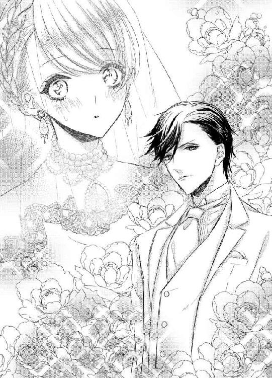
（もしかして、わたし、ラッキー？）
恋愛結婚は、どうせ、できないと思っていた。没落しなければ、両親だけじゃなくて親戚中が、ふさわしくない家柄の相手との結婚には反対しただろう。結果、みんなが気に入るような人とお見合いするか、上流階級のパーティーで、退屈きわまりないどこかの子息と無理やり引きあわされたはず。
それに比べたら、この人は数段まし。
いや、はっきり言っちゃおう。
かなり好みだ。
自分を売ると決めたあの日、幸せになれるときは来ないと覚悟した。好きでもない相手と、不幸な結婚生活を送るのだろう、と。
だけど、もしかして。
エミリアは思う。
運が回ってきたのかもしれない。
「ここにお集まりのみなさん」
神父の声が、粛々と結婚式の開始を告げる。エミリアは、ちらり、と教会の中に目をやった。ヴァージンロードを歩いているときは、周囲を見る余裕なんてなかったから。
うわあ。
エミリアは顔をしかめそうになった。
何、この人の群れ！
エミリアの親族席には、当然のことながら、父親しかいない。なのに、相手方のほうは、すべての座席が埋めつくされて、後ろに立っている人までいる。
なんなの？ どうして、こんなに親戚が多いの？ 伯爵になるから、お祝いとして、みんな出席してるとか？
そんな中、ぽつん、と一人座っている父親が、とても孤独に思えて。エミリアは、そばにかけよりたくなった。
だけど、まさか、花嫁がそんなことをするわけにはいかない。
神父の話はつづいていたけれど、エミリアの耳にはまったく届かなかった。
だって、この光景が異様すぎるんだもの！
思わず、相手方の出席人数を数えだして、思いとどまった。いまはとにかく、結婚式を終えなきゃ。
「エミリア・アッカーソン」
神父に名前を呼ばれて、エミリアは、ほっとする。ちょうどいいタイミングで、我に返ったようだ。
「はい」
「あなたは、ガイアス・マードックを夫とし、妻として一生添い遂げることを誓いますか」
へえ、この人、ガイアスっていうんだ。名前まで、かっこいい。
「誓います」
言葉は、すんなりとこぼれた。やっぱり、見た目って大事だ。この男なら、結婚するのもいやじゃない。
「ガイアス・マードック。あなたは、エミリア・アッカーソンを妻とし、夫として、生涯をともにすることを誓いますか」
「誓います」
...ん？ なんか、投げやりじゃない？ だって、あなたが望んだのよね、この結婚。それも準備期間、たった三日という短さで。
なのに、なんでだろう、どうでもよさそうに見える。
「指輪の交換をしてください」
え、交換？ 知らない、聞いてない、持ってない！
慌てて父親を見ると、父親が、はっとした顔で立ち上がって、急いで小さなビロードケースを持ってきた。
そうか、ブライドメイドとかいないから、全部、父親がやらなきゃならないんだ。
エミリアは箱を受け取って、ありがとう、と小さくささやく。申し訳ない気持ちでガイアスを見ると、あくびをしていた。
はあ？ いったい何よ！ 自分の結婚式なのにあくびなんて、失礼じゃない！ ちょっと顔がいいからって、図に乗らないでよね！
だんだん、腹が立ってきた。
そりゃあ、伯爵の称号が欲しいだけなのかもしれないけど、結婚式ぐらい、真面目にやってくれてもいいんじゃない？
エミリアは指輪を取り出して、ガイアスに見せた。ガイアスは、おまけにもうひとつ、とばかりにあくびをしてから、左手をめんどくさそうに差し出す。
その瞬間、理解した。
結婚したくないのは、エミリアだけじゃなかったらしい。
エミリアは、ぐいっ、とガイアスの手を引っ張ると、乱暴に指輪をはめた。いてっ、と小さな声でつぶやくのが聞こえる。
ざまあみなさい。
エミリアは、内心でほくそ笑んだ。
最初は、あんたの顔にだまされたけど。結婚したくないのは、こっちだっておなじなのよ！
ガイアスはタキシードの胸ポケットから、むきだしの指輪を取り出すと、ぽん、とそれをエミリアに投げた。危ういところで、エミリアは受け止める。
「勝手にはめろ」
その言い草が、最高にむかついた。指輪を、その胸元に投げつけてやりたいと思った。
ああ、もう、わたしのバカ！ 見かけがいいからって、うきうきしちゃって、こいつの本性に気づかなかったなんて！
いま決めた。
この人のことを、一生きらいでいる。
だけど、結婚はしなきゃ。じゃないと、父親が不幸になる。
エミリアは左手の手袋をはずすと、薬指に指輪をはめた。はめる前に、一瞬だけ、指輪を見る。きれいにカットされた大きなダイアモンドの指輪。結構な値段がするのは、一目でわかる。
まあ、指輪には罪はないわよね。
エミリアは、手を動かして、光の反映を楽しむ。
うん、すごく素敵、この指輪。センスだけは、いいみたい。
性格は最悪だけど。
指輪がはめられたのを見て、神父がおごそかに告げた。
「二人が夫婦になったことを証明します。それでは、誓いのキスを」
神父の言葉に、エミリアは目を見開く。
冗談じゃない！ だれがキスなんてするもんですか！
きっと、さっきまでの態度からして、ガイアスだってしたくないに決まってる。ここは飛ばして、結婚式を終えよう。
ガイアスに目配せをしようとしたら、ガイアスがエミリアに一歩、近づいた。ヴェールをめくって、エミリアの顔を露出させる。
ヴェールがない状態でガイアスを見ると、最初のときよりも、もっとハンサムに見えた。
だけど、だまされない。人間、顔よりも性格だ。
「ふーん」
ガイアスは、目を細める。
「どんなブサイクが来るかと思ったら、まあまあだな」
「ちょっと！」
エミリアは、たまらずに声を荒げた。
だれが、まあまあですって！ バカにするのも、いいかげんにしてちょうだい！
わたしは美人よーっ！
「お、なんだ、反抗すんのか」
ガイアスは、にやにや笑っている。
神様、誓います。さっきも誓ったけど、もう一度誓います。
この男を、一生、大っきらいなままでいます！
「それは、なかなかおもしれえ。が、そういうもろもろは後回しだ。まずは、結婚式をすませねえとな」
下品なしゃべりかた。
エミリアは眉をしかめた。
こんなの、周りで聞いたこともない。まあ、あなたにはお似合いでしょうけどね。
なんて、余裕で思えてたのも、そこまで。
ガイアスがエミリアを引き寄せて、唇をふさいだのだ。
最初は、何がなんだかわからなかった。目を見開いたまま、すぐ近くにあるガイアスの顔と、唇に触れるやわらかい感触に、キスをされてるんだ、と理解する。
エミリアは、ガイアスを引きはがした。そのまま、パシーン！ とすごい音を立てて、その頬をたたく。
ひゅう、ひゅう、と、教会中から指笛や口笛の音が聞こえてきた。ガイアスは、まあまあ、というように、両手でそれを押さえる。
「見たか、おまえら！ 俺は、二十五までに伯爵になるって約束を果たしたぞ。全員、金払ってけ！」
最後にガイアスはガッツポーズをすると、エミリアを置いて、一人で祭壇を降りた。親族席に座っている全員と、ハイタッチをかわして教会の外に出る。
エミリアは、ただ呆然としていた。
こんな屈辱、味わったことがない。
その呆然が、怒りに変わるまで、そんなに時間はかからなかった。
本当に本当に本当に、冗談じゃないわよ！
エミリアは心の中で叫ぶ。
あの男、絶対に許さない！
「エミリア」
いつの間にか、父親がそばに来ていた。いたわるように、エミリアの背中をさすっている。
「借金は、私がどうにかする。一緒にうちに戻ろう」
少しだけ、心が揺れた。だけど、そうしたくなかった。
ここまでコケにされて、黙ってなんかいられない。
絶対に見返してやる！
「いいえ、お父様」
エミリアは、強い目で父親を見る。
「わたし、結婚します」
「エミリア、いいんだ。こんなあつかいをされて...」
「お父様」
エミリアは、目を細めた。たぶん、とても意地悪な表情をしていると、自分でも思う。
「わたし、こんな目にあわされていいような女じゃありません」
父親は、何も言わない。エミリアの気持ちを、理解してくれたのだろう。
「だから、あの男と結婚します」
ここで逃げたら、二度とガイアスには会えない。
会わなかったら、ひどい目にあわせることもできない。
そんなの困る。
今日のことを、きっちり反省させてやらないと。
「そうか」
父親は、あきらめたようにうなずいた。
「だったら、私の分も上乗せしてやりなさい」
「はい、お父様」
父親だけじゃなくて、母親の分も加えよう。
母親がここにいなくて、本当によかった。もし、こんな光景を見たら、泣きだしていたはず。
だからといって、ガイアスの罪を軽くしてやるつもりなんかない。エミリアを愛情深く育ててくれた二人のぶんまで、きっちり復讐させてもらう。
見てなさい、ガイアス・マードック。
あなたになんて、負けないからね。
２
結婚式が終わって、一人祭壇に残されて、これからどうすればいいのか、迷っていたら、ガイアスが迎えに来た。
すまん、存在を忘れてた。
そんな失礼な言葉とともに。
ついてこい、と命令され、むっとしながらも、ほかに行くところなんかないから、しょうがなく従う。教会の前に止められた、いかにも高級な車に押し込められて、ああ、これから二人でどこかへ行くのか、と憂鬱な気分になっていたら、ガイアスはその場に立ったまま、外からドアを閉めた。ひらひら、と手を振って、くるり、と背を向ける。
ちょっと、どういうこと！ と叫んでも、なんの言葉も返ってこない。ガイアスを窓から探すと、まだ残っていた出席者のもとへ、笑顔で近寄っていた。
旧友たちと親交を深めるのだろうか。
でも、よく考えたら、二人きりで狭い車内にいさせられるよりマシだ。エミリアは、ほう、と息を吐いて、シートに背をもたせかけた。さすがに高級車だけあって、ふわり、と包むようなやわらかさを持っている。
エミリアだけを乗せたまま車は走り、教会がある街の中心部からどんどん離れて、郊外へ向かう。
そういえば、ここがどこなのか知らない。エミリアが生まれ育ったのとおなじ国のちがう地方なのか、それとも、まったく別の国なのか、まったくわかっていない。
結婚する、と父親に打ち明けてすぐ、飛行場に向かった。プライベートジェットがすでに準備されていて、父親と二人でそれに乗る。数時間後には目的地に着いて、そこから車で教会まで。その間、どこかわかるような目印は、見当たらなかった。
しゃべる言葉はおなじだけれど、近隣の国々は、どこもみな多言語を話すので、それだけで場所を特定するのはむずかしい。いくつもある母国語の中から、エミリアが知っている言葉を使っているのだろうから、よけいに。
でも、わからないままでよかった。もし、知ってしまったら、家まで戻る方法がすぐに見つかる。逃げたくなったら、どこに行けばいいかもわかる。
もちろん、逃げるつもりなんてないし、ガイアスに思い知らせてやろう、と決意をしてはいるけれど。
エミリアは、そんなに強くない自分を知っている。
気が張っている間はいいけど、ふとした瞬間に、何もかもがいやになって、全部捨て去ろうとしてしまうかもしれない。
だから、自分を閉じ込めたかった。
ここにいるしかない。
そういう状況に追い込みたかった。
車窓から見える景色は、ますます寂しくなっていく。たまに車とすれちがう以外、緑しか見えない。
草原の中にでも家があるのかな、とのんきに思っていたら、今度は岩や木が増えてきた。それに、どことなく、景色が斜めになっている気がする。
エミリアは車窓に近づいて、外をじっと見た。ひっ、と悲鳴をあげそうになる。
気のせいなんかじゃなかった！ 舗装されてはいるけれど、道はどんどん狭くなって、なおかつ、高度をあげている。
これは、山道だ。
道路の脇は切り立った崖になっていて、少しでも運転を誤れば、まっさかさまに落ちてしまいそう。そのぐらいの高度がある。
「どこに行くんですか？」
エミリアは、小さな声で運転手に聞いた。なのに、運転手は何も答えない。
きっと目的地を言えないのだ。でも、こんな山の中に何もあるわけがない。エミリアを置いて、またガイアスのところに戻るつもりなのだ。
そうか、結婚して、伯爵の地位さえ手に入れれば、エミリアはいらない。いらないなら、捨てればいい。
あのガイアスなら、そう考えて当然。
どうしよう。怖い！ こんなの予想していなかった。
エミリアは祈るように両手を組んで、目を閉じる。
どうか、これが夢でありますように。一人、どこかの山に置き去りにされるなんてこと、自分の身に起こるはずなんてないんだから。
がくん、と体が揺れた。どうやら、舗装道路でもなくなってきたようだ。
がくがくがく、と左右に揺れているうちに、車が止まった。
ああ、どうしよう！ 一巻の終わりだ！
こんなことなら、父親の誘いにのって帰ればよかった。こうやって捨てようとしているぐらいだから、エミリアが父親と家に帰ったところで、ガイアスは気にしなかっただろう。
「到着しました」
ようやく運転手が口を開いた。
到着ってどこに？ 地獄？
そんないやみを言ってやろうとしたのに、体が震えてできない。
エミリアが車内にとどまっていたら、外からドアが開いた。
いや！ 飛行場へ連れていって！
そう叫ぼうとするより先に、明るい声が響く。
「ようこそ、エミリア様！」
一人の声じゃなかった。複数の女性のもの。
エミリアは恐る恐る、ドアを見る。
えええええええええ！
エミリアは声に出さず、心の中で叫んだ。目の前の光景が信じられなくて。
何もない道路を進んだ山奥には、大きな城門が建っていた。その奥に見えるのは、古くからありそうな、頑丈な石造りのお城。尖塔が左右に二つずつついている。色は白に近い灰色。城門から出ているのはそれだけなので、残りの部分がどうなっているのかはよくわからない。
こんなに巨大な建物なのに、ちょうど山の陰に隠れる位置に建っているせいで、目の前に来るまで存在すらわからなかった。
昔、どこかの伯爵が隠れ家的に使っていたのかもしれない。
そして、もうひとつの驚きが、エミリアを出迎えにきた四人のメイド。なんと、そっくりなのだ。茶褐色の毛に、薄い茶色の目。全体的に小柄で、小動物のようにかわいい。
もしかして、四つ子？
「ガイアス様より、命令を受けています」
「ガイアス様は、しばしご友人と過ごされたあと、お屋敷に戻ってまいりますので」
「その間に、エミリア様に準備をさせておけ、と」
「なので、おまかせください、エミリア様」
四人がつぎつぎと言葉を発するので、エミリアが口を挟む隙がない。
きわめつけは、四人同時に。
「ぴっかぴかにしてさしあげます！」
「な...にを...？」
エミリアは、おずおずと聞いた。どうやら、四人の迫力に押されてしまっているらしい。
「もちろん、エミリア様をですわ」
ほほほほほ、と四人が笑う。
もしかして、分身したのかしら。
そんなありえもしないことを思ってしまうほど、おなじタイミングで、おなじような笑い声をたてる。
「えっと...あの、四人は姉妹なの？」
「ちがいますよ」
「ちがいます」
「そんなわけないですよ」
「ええ、赤の他人です」
「ええええ！」
今度は、声が出た。赤の他人なのに、こんなにそっくりなの!?
エミリアは、まじまじと四人を見る。あ、でも、言われてみれば、たしかに細部まで似ているわけじゃない。髪型やら化粧やらで、雰囲気がそっくりになっているだけだ。
あー、びっくりした。
「それでは、エミリア様、行きますよ」
「行くって、どこに...」
ぐいっ、と手を引っ張られて、エミリアはつまずきそうになる。そういえば、ウェディングドレスを着たままだった。歩きにくくて、当然だ。
「ちょっと待ってね」
エミリアはウェディングドレスの裾をぎゅっと踏んだ。そのまま、スカートの上部分を持って、思い切り引っ張る。ビリッ、といい音がして、スカートの長い部分がそのままとれた。
うん、これで歩きやすくなった。
「さ、行きましょう」
山の中に置いていかれないのであれば、もう怖くない。それに、この四人のメイドに興味もある。
メイドたちは、きょとん、とエミリアを見ると、きゃはははは、と楽しそうに笑った。
「エミリア様、かっこいいですわ」
「気に入りました」
「ええ」
「本当に」
四人はエミリアの手を左右からつかむと、城門の横の取っ手を引いた。ギギー、ときしむ音をさせながら、ゆっくり門が開く。
「うわあ...」
中に入るなり、エミリアは感嘆の声をあげた。お城までつづく石畳の道の周りは、きれいに手入れされた緑のじゅうたん。そして、色とりどりのバラがあちこちで咲いている。まるで、絵本に出てくるお城の庭みたいだ。
お城の外観は、すっきりとシンプルな造り。壁にツタが這っているぐらいで、飾りは特にない。
近くに来ても、やっぱりお城は大きかった。いったい、いくつ部屋があるんだろう。エミリアの家も、豪邸と呼ばれているけれど。それが、三つも四つも入りそうだ。
四人に導かれて、お城へ向かう。入り口は木製で、かよわそうなメイド一人でも、楽に開けられるようになっていた。
エミリアは、ドキドキしながら、お城の中に足を踏み入れる。いやな相手でも、望まない結婚でも、お城にいる、となると胸がときめくのは、女の子だからしょうがない。
「すごい...」
玄関ホールは、本当にホールと呼ぶのがふさわしい広さ。大理石の床が、きらり、と輝いている。左右に螺旋階段があって、そこから上の階へあがるようになっていた。天井までの吹き抜けが、開放感をもたらしている。
「右にまっすぐ行ったら、食堂になります」
「左にまっすぐ行ったら、リビングルームがあります」
「全部で三階あって、エミリア様のお部屋は二階の左側です」
「ガイアス様のお部屋は、三階の右側となってます」
どうして、四人が交互に話すのか、さっぱりわからないけど。心地いい音楽みたいに響くので、気にしないことにする。
「それでは、エミリア様のお部屋にまいりましょう」
メイドたちが先に立って歩き出した。エミリアは、それについていく。
螺旋階段は、エミリアのあこがれだ。くるり、と曲がる造形が、とてもきれいだと思う。それを一歩、一歩、登っていたら、自然と笑みがこぼれた。
ああ、わたし、螺旋階段を歩いてる！
エミリアは軽い足取りで踊り場まで来ると、いったん立ち止まって、玄関ホールを見下ろした。
うん、すっごくいい眺め。認めるのは悔しいけど、ガイアスは、なかなかセンスがいい。こんなお城に住んでいるなんて。
残りの階段を、喜びを噛みしめるように登ると、メイドたちが待つ左手の廊下へ向かう。
「エミリア様、こちらがお部屋です」
メイドの一人が、廊下から入ってすぐのドアを指さした。何番目か覚えなくていいので、迷わなくていい。
「どうぞ」
うながされて、エミリアはドアを開けた。
「...え？」
あまりのことに、エミリアは言葉を失う。もしかしたら、二階の左半分、すべてを使ってるんじゃないか、と思うような、広い広い部屋が現れたからだ。
エミリアの家も、かなり大きかった。でも、その家がすべて、すっぽり入ってしまいそうなほど、とにかく広大だ。
入ってすぐに、応接間のようなセット。その隣に、ダイニングテーブル。またその隣は、ソファーや家具などを置いたリビングっぽい感じ、その隣にバスルーム。猫足バスタブが、どーん、と部屋の中央に仕切りもなしに置かれているのは、かなりの違和感がある。それと同時に、ちょっとした開放感も。
窓に近いところにふたつ、すりガラスのブースがある。片方がトイレで、片方がシャワールームだろうか。あとから、たしかめてみよう。一番奥に天蓋つきのベッド。キングサイズをふたつ並べたぐらいの大きさがある。
「そうなんですよ。ガイアス様が、開放感があるほうがいいだろう、と、すべての仕切りを除かれまして。ちょっと不便というか、もしかしたら居心地が悪いかもしれません」
「もし、すべての部屋を区切ってほしい、というご要望があれば、わたしたちに言っていただければ、すぐに工事に入りますので」
「その間は、ガイアス様のお部屋に住んでいただきますけど」
「ガイアス様のお部屋は、もっと簡素です」
「これでいいわ！」
エミリアは、慌てて言った。
冗談じゃない。ガイアスとおなじ部屋なんて、絶対にごめんだ。
「この開放感が気に入ったの。トイレは、あそこ？」
すりガラスのブースを指さすと、メイドたちは同時にうなずく。
「はい。トイレとシャワーブースは、絶対に区切ってください、とわたしたちが進言しました」
「男性にはわからないですからね」
「ね」
「ね」
...つけくわえることがなければ、しゃべらなきゃいいんじゃないだろうか。
「さて、エミリア様。もう少ししたら、ガイアス様が戻っていらっしゃいますので、それまでに準備をさせていただきます」
そういえば、さっきも準備って言ってた。いったい、なんの準備だろう。
「まずは、お風呂です。これからお湯を沸かしてまいりますので、それまでの間、お疲れでしょうから、ごゆっくりおやすみください」
「それでは」
「わたしたちは」
「失礼します」
九十度に腰を折って、頭を下げると、メイドたちは出て行った。エミリアは、あぜんとしながら、彼女たちを見送る。
「なんで、まずはお風呂なのかしら」
ウェディングドレスを破ってしまったから、ちゃんとしたドレスを着て、ガイアスを出迎えろ、ということだろうか。
でも、お風呂はありがたい。ちょっと体が冷えていたので、温まりたかったからだ。
「あー、疲れた」
エミリアは、リビングのソファーに、すとん、と腰かけた。座るまでもなく、高級家具だとわかっている。エミリアの家でも、これを使っていた。適度に沈み込んで、適度に押し返す、その具合がちょうどよくて、エミリアのお気に入りだった。
だけど、お金になるものはすべて売ってしまったので、このソファーに座るのは久しぶりだ。
「気持ちいい...」
記憶にあるとおり、ソファーはエミリアの体をやわらかく受け止めてくれる。クッションに頭を乗せて、少しだけ横になろう。
「ちょっとだけ...」
メイドたちが戻ってくるまで。
温かい感触に、エミリアは目を覚ました。
「あ、わたし、寝てた...」
そう言いかけて、エミリアは悲鳴をあげる。裸になって、バスタブにつかっていたからだ。温かいのは、お湯だったらしい。
「な...なにが...」
パニックになりかけていたら、頭にそっとお湯をかけられる。
「エミリア様、寝ててよろしいですのよ」
「わたしたちが、きちんと洗ってさしあげますから」
「ええ、本当に」
「眠っていてくださいませ」
「ダメよっ！」
がばっ、とお風呂からあがりかけて、そうすると裸を見られてしまうことに気づいて、また体を沈める。ウェディングドレスを脱がせたのは、このメイドたちなんだろうから、とっくに見られてしまっているけれど。意識があるとないとでは、おおちがい。
「そう遠慮せずに」
メイドの一人が、シャンプーを泡だてて、そっとそれをエミリアの髪に載せると、やわらかく洗い始めた。繊細な動きが、すごく気持ちいい。
ふわあ、と体が浮くようで、眠くなってくる。
髪の毛ぐらいなら、洗ってもらってもいいかも。
そう妥協しそうになったところで、別のメイドに右手を取られた。ボディタオルが当てられて、指の先から肩までをなぞられる。
「きれいなお肌ですね」
ぞぞぞ、とエミリアの背筋に寒気が走った。着替えからなにから、すべてメイドにやってもらう子もいるけど、エミリアはちがった。他人にいろいろされるのが、あまり好きじゃない。だから、小さいころからお風呂も一人で入ったし、どれだけ時間がかかっても着替えまで全部、自分でした。母親は、お風呂で溺れないか心配で、すぐそばで見守ってくれてはいたけど、エミリアに手を貸さなかった。
そういう性格なのだと、わかってくれていたから。
だから、どんなに疲れていて、どれだけ髪を洗ってもらうのが気持ちよくても、まかせるわけにはいかない。
「自分でやるわ！」
エミリアは、髪の毛に触っているメイドの手を、あまり強すぎないように気をつけながら、払いのけた。
「ごめんなさいね、せっかくしてくれてるのに。でも、わたしにはわたしのやりかたがあるから、一人でやりたいの。ウェディングドレスを脱がせてくれただけで、助かったわ」
実際、一人だったら脱げなかった。教会でヘアメイクとともに、すべてやってもらったのだ。そうでもなければ、体にぴったりフィットしたドレスのファスナーなんて、とまるはずがない。
「そうですか」
メイドの一人が、笑顔でうなずいた。
「それでは、おまかせします」
「お着替えは、ベッドの上に置いてありますので、そちらをどうぞ」
「ガイアス様のご到着までは、まだしばらく時間があります」
「それまでに、すべてをおすませください」
四人そろって、また、ぴしり、とお辞儀をすると、出ていこうとする。それを、エミリアが慌ててとめた。
「すべてって、何を？」
「初夜の準備でございます」
四人の声がそろう。エミリアは目を見開いた。
いったい、何を言っているのか、まったくわからなくて。
ただじっと、四人を見つめつづけた。
きっと、冗談なんだろう。エミリアをからかいたくて、初夜なんて言ったにちがいない。
そう考えて、どうにか立ち直って、ありがとう、とメイドたちをさがらせたあとで、一時間近く、バスタブにつかっていた。
そうか、結婚すると初夜があるんだ。
わかっていたのに。覚悟していたはずなのに。
ガイアスのあの態度で、自分には興味がないと知って、安心していた。
しなくていいんだ、と勝手に思っていた。
お湯が冷え切ってしまい、エミリアはバスタブから出てシャワールームに入ると、念入りに髪の毛と体を洗う。
ここを出ると、初夜の準備をしなきゃいけなくなる気がして。
そして、絶対にそんなことしたくないから。
頭の先から足元まで、丁寧にきれいにしていった。
ここにこもっていたら、何もしなくていいんじゃないの？
そう気づいて、実行しようとしてみた。でも、すぐに、このブースには鍵がついてないことを思い出す。その上、裸。
ガイアスに踏み込まれたら、おしまいだ。
エミリアはため息をつきながら、シャワールームを出て、ベッドに向かった。このまま眠れたら、どんなにいいだろう。
そう思いながら、エミリアは、ベッドの上に置いてある着替えを手にとる。
あ、かわいいネグリジェだ。真っ白で、レースがふんだんにあしらわれている。これなら、着てもいい。
エミリアは、それを広げた。その瞬間、叫び声が漏れる。
「うそでしょ！」
ネグリジェじゃなかった。用意されていたのは、真っ白な総レースのベビードール。きれいな手縫いだけど、これ、これ...。
「全部、見えちゃうじゃない！」
胸の部分には透けない工夫がしてあるかと布地をたしかめても、当て布すらない。スカートかと思っていた部分は、前の部分で左右に割れるようになっている。少しでも動けば、胸から下の部分は、はだけてしまうのだ。
そして、下着。肝心な部分しか隠れそうもない布面積の少なさの上に、横を紐で結ぶタイプ。そこをほどかれたら、はらり、と落ちる。
いくら初夜だからって、やりすぎじゃない!? これなら、裸のほうが、まだマシだ。
いっそ、裸で待ってて...。
「ちがうちがう、落ちついて」
エミリアは、自分に言い聞かせた。
「もしかしたら、着てみると、そんなにひどくないかもしれないわ。全部見えるよりも、ちょっとでも隠れていたほうがいいわよね」
エミリアは、まず下着を手に取る。この形式の下着をつけたことがないから、どうするべきなのかわからない。最初に紐を結べばいいのかしら？
エミリアは、ちょうちょ結びをふたつ作って、どうにか下着の形にした。それをはいてみたら、すごくずれる。だから、いったんほどいて、また結んで。どうにか、下着をつけることができた。
ちらり、と下を見ると、かろうじて肝心な部分が隠れているぐらい。これも白いレースだから、透けて見えそうだ。
でも、ないよりまし。絶対にまし。
つぎはベビードール。これは、上からかぶるだけだから簡単だ。胸がちょっときついけど、どうにか、切り返しの部分をぐっと下げて収めた。
「あ、だめだ、これ...」
胸の先端が、完全に透けている。色どころか、形まではっきり見えた。そして、スカート部分は、想像したよりももっと斜めに切れ込んでいて、何もしなくても、おなかから下着までがあらわになる。
だからといって、これを脱いだら全裸なわけだし。そんな格好で、ガイアスと対面するなんて、考えただけでいやだ。
そもそも、本当に初夜を迎える気があるんだろうか。エミリアに会う前に、あのメイドたちに言いつけただけで、いまはすっかりその気をなくしているかもしれない。
いや、なくしているはず！
だったら、ほんのちょっとでも隠れていたほうがいい。ほんのちょっとよりも、たくさんのほうがいいんだけど...。
「そうよ！」
エミリアは、ぱっと顔を輝かせた。
エミリア用の部屋ということは、洋服とかも、当然のことながら、たくさん用意されているわけで。つまり、探せば普通の洋服がある。それを着ればいい。
「わたし、天才」
ふんふふーん、と鼻歌を歌いたい気分になって、エミリアはベッドの向かい側にある、ウォークインクローゼットらしき場所に向かう。まだ見てないけど、絶対にウォークインクローゼットだ。そして、こんな下品な下着めいたものじゃなくて、ドレスがたくさんあることだろう。
かっちりコルセットをつけて、防御しなきゃ。
エミリアは扉を開けた。たしかに、そこはウォークインクローゼットだったけど。
「...なんにもない。どうして!?」
洋服は、何も入ってなかった。
「どこかにはあるはずよ！ そうでしょ！」
エミリアは棚をひとつずつ開けていく。上から順番に、下まで。膝をついて、かがんで、必死で棚の下まで見る。
「うわ、エッロ」
突然、そんな声が響いた。それと同時に、つーっ、とありえないところをなぞられた。
「ひゃうん...」
エミリアの唇から、予想もしていなかった甘い声が漏れる。
「ベッドで待ってればいいのに、なんで、そうやってケツ突き出して、誘ってんだ？ あと、ここ、透けてんぞ」
ガイアスの声だった。触れているのは、ガイアスの指。
その指が、ゆっくり、エミリアの割れ目をなぞっている。
「ちがっ...あっ...やぁっ...」
誘ってなんかいない。腰を突き出していたつもりもない。ただ、探していたのだ。これじゃない服を。もっと、体を保護してくれるものを。
なのに。
「まさか、全身じゃなくて、ここだけで出迎えられるとは思ってもみなかった。それも、腰を左右に振りながらな」
ガイアスの指が、ぐりっ、と布ごと、入り口に入ってこようとする。
「やめてっ...！」
エミリアは叫んだ。
「ちがうのっ...だめっ...いやぁ...」
ガイアスの指はいったん退いて、そのまま上に滑る。とがりを見つけて、そこをそっと押さえた。
「やぁぁっ...」
エミリアの体が、びくんびくん、と震える。
「濡れてきた」
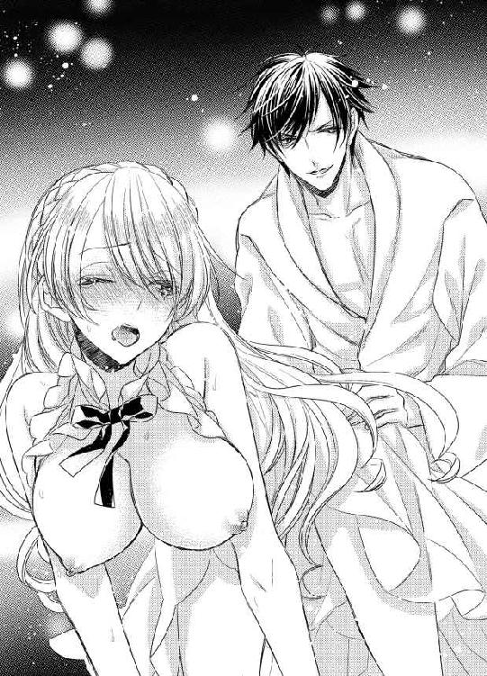
ガイアスが楽しそうに言った。エミリアの頬が、カッ、と一瞬で赤くなる。
「これだけ薄い生地だと、すぐにわかるな。濡れると、もっと透けるぞ。あ、そうか。俺に見てほしいんだな」
ガイアスの指がもう一本増えて、蕾の入り口も同時に刺激し始めた。とがりをこすられて、蕾を、ぐりぐり、と指で掻き回される。
こんなことをされるのは、初めてなのに。
いや、初めてだからか。
エミリアは、どうしていいかわからない。
だって、気持ちいい。
大っきらいな男の指なのに、すごく感じる。
「んっ...やっ...やっ...」
エミリアはぎゅっとこぶしを握って、声を我慢しようとするのに、つぎからつぎへとこぼれてしまう。
「いやらしい音させてんじゃねえよ」
ガイアスは、ぐーっ、と指を中に押し込んだ。すぐに手を離すと、にちゃ、と濡れた音がする。
「させてなっ...あぁっ...だめぇ...」
「だめ、とか言いながら、体震わせてるだけじゃねえか。本当にいやなら、俺の手を払いのけてみろよ」
エミリアは力の入らない手を、後ろに回した。その瞬間、体のバランスが崩れて、そのまま横に倒れる。
はっと気づいたときには、重力に負けて背中を床につけていた。ふかふかのじゅうたんだから、倒れたときも、いまも痛くはないけど、この格好は...。
「いやぁぁぁ！」
エミリアは叫んで、体を手で隠そうとした。ベビードールを着て、ほぼすべてが透けているこの姿を見られたくなくて。
だけど、遅かった。すぐに、がっ、と両手をつかまれる。
「なんて格好してんだよ、このエロ淫乱女」
ガイアスは、にやりと笑った。
本当に悔しいことに、そんな表情をしてもかっこいい。
いやなやつだけど、それだけは認めざるをえない。
「ピンクの乳首が浮かんでるぞ。ああ、わかった。舐めてほしいんだな」
エミリアは、ガイアスを蹴ろうとした。足を振り上げる直前に、ガイアスがエミリアの乳首を食む。
「あぁん...やぁっ...」
足が、落ちた。ガイアスは乳首に舌を這わせながら、エミリアを見上げる。
「おまえ、快感に弱すぎねえか」
ガイアスは笑った。
「だれに仕込まれた」
「なっ...！」
エミリアは思い切り、ガイアスを蹴る。だけど、力が入ってないせいか、なんの衝撃も与えられない。ガイアスは、涼しい顔をしている。
「処女なのか。それにしては、感度のいいことで」
ガイアスは布と一緒に乳輪を、ちゅう、と吸いあげた。舌を使って、下から上へ、つーっ、と乳首を通るように舐め上げる。
「んっ...だめっ...やっ...」
乳輪が、きゅう、と締まって、乳首が、ぷつん、ととがりだした。ベビードールを押し上げるように屹立した乳首を、ガイアスは執拗に舐める。
「あ...あぁん...いやぁ...」
乳首がこんなに感じるなんて、知らなかった。エミリアの体が、内部から熱くなってくる。
ガイアスは、ちゅぽん、と音をさせながら、大きく乳首を吸いだして、そのまま離した。乳房が、ふるふる、と震えて、それにあわせるように、乳首も揺れる。
「見てみろ、淫乱女」
ガイアスは、いままで舐めていた部分を指さす。
「俺が濡らしたせいで、もう完全に乳首が見えてる。ぷっくらと大きくふくらむところは、俺の好みだ」
そう言いながら、ガイアスは、ピン、と乳首を弾いた。エミリアは、んっ、と声を漏らす。
「どうなってるのか、直接見てみたいところだが、これはこれでエロいから、もったいない。ってことで」
ガイアスは、まだ触れてなかったもう片方の乳房をつかんだ。ぎゅっとつかまれて、何度も揉まれる。激しくされているうちに、ベビードールがずれてきた。
「あっ...やだっ...やめっ...」
そんな左右に揺すらないで。出ちゃう。乳首が、見えちゃう。
「やべえ、興奮してきた」
ガイアスが、じっと乳房から目を離さずにつぶやく。
「見えそうで見えない、っての、いいな。これ選んだあいつらを、ほめてやろう」
あいつらとは、メイドたちのことだろう。もしかして、洋服をすべて隠したのも、あの子たち？
いい子だと思ってたのにーっ！
ガイアスの手の動きが、どんどん速くなって、乳房の揺れかたも大きくなっていく。すでに、乳輪は少しはみでていた。
「だめっ...だめぇ...おねがっ...」
エミリアが頼むのに、ガイアスは手をとめない。
「あとちょっと、もうちょっと～」
歌うように言いながら、かろうじてベビードールに隠れている乳首を凝視している。
「出ておいで」
ガイアスがささやくように告げて、乳房を左右に激しく揺さぶった瞬間、ぴょこん、と乳首が姿を現した。
「いやぁぁぁ...！」
エミリアは、手で乳首を隠そうとする。やっぱり、布一枚でも、あるのとないのとでは大違いだ。
だって、こんなに恥ずかしい。
「うわ、想像した以上にピンクだな。すげー、きれー」
ガイアスが乳首に指を這わせた。そのまま、指を上下に動かす。指の腹でこすられて、乳首はすぐに硬くなった。
「んっ...あっ...やぁん...」
エミリアの声が、甘くとろける。
いやなのに。本気で、そう思ってるのに。
ガイアスに触れられると、体が熱を持つ。快感が、全身を駆け巡る。
「あと、おまえの顔も、乳首に負けず劣らず、きれいだな」
え？ は？ なに言ってんの？ 教会で、まあまあ、って言ったじゃない！ そのあとは、顔すら見なかったじゃない！
なのに、なんで、急にそんなことを!?
「こんな美人が、快感にうちふるえてる、ってのに、すげー興奮する。おまえ、素顔のがいいわ。あの化粧、似合ってなくて、ブスに見えた」
あ、そうか。あのときは、ウェディング用メイクをしていた。いつもより濃くて、たしかに、ちょっと似合ってないな、と思ったのだ。父親には、顔色が悪い、と心配されたぐらい、ファンデーションの色すらあってなかった。
エミリアを知らずに、化粧道具だけを準備してたんだろうから、しょうがないところもあるんだけど。
「...美人じゃないわよ」
エミリアが、ふてくされたように言うと、ガイアスはエミリアの乳首を、きゅっ、とつまんだ。そのまま、左右に揺する。
「あぁっ...んっ...あぁん...」
「そうそう、素直にかわいくあえいどけ。まあ、生意気な女をあえがせるのも、楽しいけどな。さてと、さっきは布に邪魔されたところを、拝みにいくか」
ガイアスのもう片方の手が、すーっ、と体の脇を滑って、下着にたどりついた。反抗する暇もなく、紐の部分をはずされる。
「だめっ！」
さえぎろうとする前に、もう片方もほどかれて、ただの布切れになった下着は、ガイアスが投げ捨てた。
「どんな匂いかな」
ガイアスはにやにやしながら、顔を下にずらす。
匂い？ どういうこと？
エミリアがとまどっていると、ガイアスの顔がその部分に近づいていく。
そこでわかった。だから、暴れようとした。
なのに、ガイアスに乳首をゆるくつままれて、力が入らなくなる。
「いやっ...いやぁっ...それだけはっ...」
エミリアは必死で頼んだ。だけど、ガイアスは動きをとめない。エミリアの足を左右に開かせると、蕾に舌を差し入れた。
「だめぇぇ...！」
エミリアは体を起こして、ガイアスの顔をどけようとするのに、舌が中に入ってきて、膣内を掻き回されたら、すとん、と体がまた落ちた。舌を何度か抜き差しされて、ぬちゅ、ぬちゅ、と濡れた音が響く。
「いい香りだ」
ガイアスが舌を抜いて、エミリアを見上げた。
「処女の匂いがする」
「もっ...やだぁ...」
エミリアは顔を手で覆う。こんなことされてる顔、見られたくない。
ガイアスの舌が割れ目をなぞって、とがりにたどりついた。隠れているのを探り当てて、舌で転がす。
「あっ...やっ...あぁぁぁっ...！」
とても敏感な部分を、やさしく刺激されて、エミリアの体が上下に跳ねた。ガイアスの指が蕾を探り、中に入れてくる。
舌とはちがう硬さ。それを、膣が喜んでいる。
ぐるり、ぐるり、と内部を撫でられたら、そこが、びくびくっ、と細かく震えた。とめどなくあふれる愛液で、音もすごくなっている。
ぐちゅん、ぐちゅん、とガイアスの指が動くたびに、音がこぼれた。
「やっ...やぁん...いやぁ...」
エミリアは腰をくねらせながらも、口では拒否する。
だって、こんなの望んでない。
こんなこと、してほしくない。
「エロ処女」
ガイアスはとがりを舐めとかしながら、にやっと笑った。
「いや、とか言いながら、欲しいんだろ。中、ぬるぬるすぎて、もう指じゃ足りねえんじゃねえの」
「そんなこと...あぁん...ないっ...」
エミリアは、首を左右に振る。
「へえ、そうなのか」
ガイアスは、指を引き抜いた。とがりを舐めていた舌も、離す。そのまま、体をエミリアの足の間に入れて、エミリアに覆いかぶさるような体勢をとった。
「味わえ」
ガイアスは、エミリアの手を、顔からひきはがす。
「これが、おまえの垂らしたものだ」
言うなり、ガイアスがエミリアに口づけた。誓いのキスとはまったくちがう、ねっとりとしたキス。舌が中に入ってきて、エミリアの舌を探り当てた。エミリアは逃げようとしたのに、絡められてしまう。
「ふっ...んっ...あっ...」
さっきまで自分のあそこを舐めていたガイアスの舌は、少ししょっぱかった。だけど、その味も、すぐに唾液に消される。
いったん唇が離れて、だけど、またすぐに重ねられた。激しいキスの応酬に、エミリアは思わず、ガイアスの首に両手を回す。
ガイアスは唇を離すと、目を細めた。
「おまえが求めたんだからな」
何を？ と疑問に思った瞬間、熱い塊がエミリアの中に入ってくる。
「いやぁぁぁっ...！」
エミリアは目を見開いた。硬くて太いそれは、エミリアに圧迫感を与える。
そう、圧迫感。痛みじゃない。
滴るほど濡れさせられた膣は、ガイアスの大きなものをすんなりと受け入れた。
「おわっ...なんだ、おまえの中。すげーな、これ。細かく震えつづけて、俺のを刺激しやがる。入れただけなのに、具合よすぎてイキそうなんて、初めてだ」
そんなことをほめられても、嬉しくない。それより、抜いてほしい。
...ううん、抜いてほしくはない。
だって、気持ちいいもの。頭が真っ白になるぐらい、いま、すごく気持ちいい。
エミリアが拒否しないのを、悟ったのか。ガイアスはにやっと笑うと、腰を引き抜き始めた。
「やっ...！」
エミリアが思わず、そう言葉にすると、してやったり、の表情になる。
「エロ処女は、俺に入れてほしくてしょうがねえんだな」
「ちがっ...」
エミリアは、ぶんぶん、と首を横に振った。だけど、足をガイアスの腰に回して、抜くのを邪魔しようとしてしまう。
「そうだろ」
ガイアスは、乳首を、ふるん、と震わせた。エミリアの中が、ひくつきながら収縮する。
「言ってみろ。入れて、動かして、突いて、いっぱい気持ちよくして、って」
「いやっ...無理っ...言わなっ...」
たとえ、望んでいたとしても。そんなこと、言えるはずがない。
「まあな。エロいとはいえ、処女だもんな。すぐには無理か。じゃあ、ひとつで勘弁してやる。どれか言え。じゃないと、抜いて放置するぞ。言っとくが、おまえの中は、もうすでに熟れきってる。こすってほしくてしょうがないぐらい、うずいてるんだろ。我慢したけりゃすればいい。ただ、おまえがつらいだけだ。俺は、限界までひくついてる気持ちいい中を味わえるんだから、どれだけでも待ってやる」
ガイアスは、濡れてはりついたベビードールごしに、乳首を甘噛みした。
「あぁん...だめぇ...」
それだけで、体中が震えるぐらい気持ちいい。
「あと五秒待ってやる」
ガイアスが、カウントダウンを始めた。
「五」
少し抜かれる。
「四」
もうちょっと。ずるり、と膣がこすられる。
「三」
半分ほど。空いたところが、寂しそうにひくつき始める。
「二」
入り口近くまで。
もう、ダメ。もう、無理。
我慢できない。
「入れてぇ...」
エミリアは頼んだ。限界だった。
なくなっていく空間が、エミリアに訴える。
欲しいよ、と。
だから、口にした。恥ずかしいけど、言った。
「いい子だ」
ガイアスはエミリアの頬を撫でると、一気に奥まで突き上げる。
「だめぇぇ...っ！」
びくびくびくっ、と何度も体を震わせながら、エミリアはイッた。こんなに気持ちがいい行為があるなんて、知らなかった。
ガイアスは、ふう、と息を吐く。
「あっぶな...」
ゆるゆると奥をつきながら、ガイアスは苦笑した。
「ひとこすりでイクところだった。おまえ、どんな造りしてんだよ。冗談じゃねえ。俺に恥かかせる気か」
「わかんなっ...」
イッたのに、まだ体が熱い。ガイアスがこすっているところが、快感を送り込んでくる。
「エロ処女、おまえのことが気に入った。だから、しばらく楽しもうぜ」
ガイアスはにやっと笑うと、エミリアの中を掻き回し始めた。
しばらくって、どういうこと？
楽しむって、何？
ガイアスは両手で乳房をつかむと、そこを激しく揉みしだいた。乳首を指でこすり、ますます硬くとがらせていく。
ずん、ずん、と突き上げられるたびに、エミリアの内部がひくついた。
「あっ...あっ...あっ...」
鳴き声のようなあえぎがこぼれる。
これがセックスなんだ。
エミリアは、ぼうっとした頭で思う。
だから、みんなセックスするのか。だって、こんなにこんなに気持ちいい。
ガイアスの動きが激しくなって、膣壁のいろんな部分に、ガイアスの先端や太い部分が当たった。
こすられるたびに、体温が上昇していく。
ガイアスはエミリアの乳房を、激しく揉みしだいた。そんな行為にすら、エミリアは敏感に反応する。
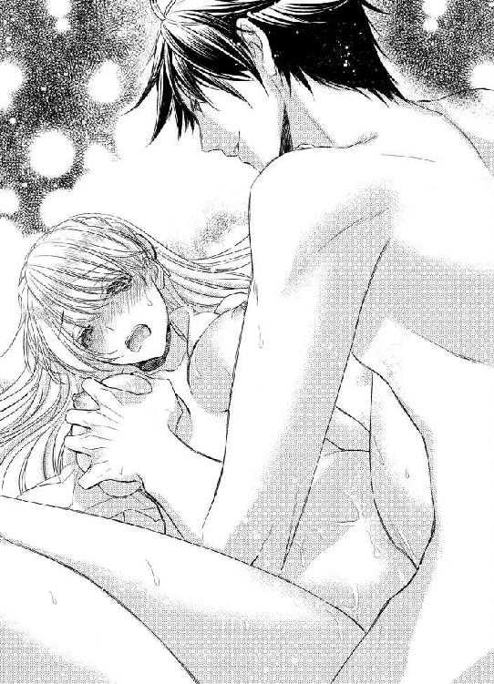
おっぱいも、あそこも、全部気持ちいい。
乳首をこすられたら、膣壁が激しくひくついた。さっきイッたばかりなのに、体が熱くてしょうがない。
「あっ...いやっ...いやぁ...」
突き上げられて、体中にしびれるような快感が走った。ガイアスに絡みつくように、内部がうごめく。
「...ったく、このエロ処女は、欲張りでしょうがねえな」
ガイアスは、ふう、とため息をついた。
「我慢できねえ。もう、イクぞ」
ガイアスはエミリアの耳元でささやくと、ぶるり、と体を震わせて、熱いものをエミリアの中に注ぎ込む。エミリアも、ほぼ同時に、もう一度、イキながら。
どうして、と考える。
どうして、ガイアス相手なのに、こんなに感じてしまうんだろう。
きらいなのに。
神様にも、ずっときらいでいる、と誓ったのに。
それでも、しばらくは、ガイアスから離れられそうにない。
３
「あっ...やっ...」
猫じゃらしで乳首をこすられて、エミリアは体を震わせた。ガイアスが、そんなエミリアの様子を楽しそうに見ている。
「おまえは、なんにでも反応するな。さすが、エロ処女と周囲から呼ばれていただけのことはある」
呼ばれてなんか、ないわよっ！ あなたが、勝手にそう言ってるだけでしょ！
そんな反論は、あえぎの中にかき消された。
ふわふわとやわらかい猫じゃらしは、ガイアスの指とはまたちがった刺激をエミリアに与える。すっ、と猫じゃらしを動かされるたびに、そのソフトすぎる接触がエミリアの体を熱くしていく。
猫じゃらしの先端を使って、ガイアスがエミリアの乳首をつついた。毛先は少し硬くなっているのか、はっきりとけばだった感触を覚える。
「あんっ...」
エミリアは、体をのけぞらせた。そうすると、胸を突き出す格好になる。
「なんだ、もっと、ってことか」
ガイアスは猫じゃらしを左右に揺すって、乳首を責め立てた。ぷつん、ととがった乳首が、猫じゃらしの中に埋もれる。
「やっ...あぁん...」
エミリアが、がくがく、と体を揺らすと、ガイアスはもう片方の乳首に猫じゃらしを滑らせた。こしょこしょ、とくすぐって、そっちもそそりたたせていく。
乳首がこんなに感じるなんて、知らなかった。何かが触れるだけで、体中に電気が走る。
ガイアスは交互に乳首をかわいがりながら、エミリアの足を開かせた。
「やっ...！」
慌てて、そこを隠そうとしたのに、ガイアスは許してくれない。
「もう濡れてるじゃねえか」
にやりと笑いながら、そんな意地悪を言う。
「ちがっ...」
エミリアは、ぶんぶん、と首を横に振った。
ちがわないけど、認めたくない。
おい、これ使ってみるか。
ガイアスが猫じゃらしを出してきたときに、わたしは猫じゃないのよ！ 冗談じゃないわ！ と、すごい勢いで反抗したのに。ベビードールを脱がされて、猫じゃらしで首をくすぐられた瞬間にあえいでしまった。
それだけでも、十分に恥ずかしいのに。
猫じゃらしに喜んで、はしたなく蜜をこぼしているのを知られるなんて、屈辱だ。
「へえ、ちがうのか」
ガイアスが目を細めた。エミリアをいじめてやろうと考えたときになる表情だと、もうわかるようになっていた。
初めて抱かれてから、三日。ずっとセックスをしている。ドレスを着る暇もなく、ほぼ裸か、ベビードール。そのベビードールも、何枚あるんだろう、とあきれるよりは感心してしまうぐらいの種類があって、そのどれもが、かなりいやらしい。着ていると、恥ずかしくて真っ赤になってしまう。
透けているのは、当たり前。そのほか、胸の部分がリボンでとめてあって、それをほどいたら、乳房が露出したり、水をかけたら溶けてしまったり、ロングで足が隠れるから安心していたら、輪切りのような切れ目がいくつもあって、下からひとつずつちぎっていくことで、どんどん短くされたり。
ちなみに、その輪切りになっているベビードールのときは、エミリアがじゃんけんで負けたら、一枚ずつ切り離されていくゲームをさせられた。エミリアが三回勝った時点で許してくれると言われたので、だったら、何もされなくてもすむかも！ とはりきってじゃんけんをしたのに、一回も勝てなくて、自分でも呆然とした。
下着をはくことを許してもらってなかったので、すべて見えてしまって。そのまま指を滑らされて、とがりやら入り口をさんざんいたずらされたことが、本当に恥ずかしくて。
でも、すごくすごく、気持ちよかった。
ガイアスのことは、きらいなのに。
ガイアスとするセックスは、いやじゃない。むしろ、進んでしたいぐらい、気持ちいい。
その矛盾が、自分でも不思議だ。
今日だって、猫じゃらしで遊んでみるぞ、と告げられて。
冗談じゃないわよ！ と言葉では断った。
だけど、猫じゃらしを手に持っているガイアスを見ただけで、じゅん、と奥からうずいてしまう。
だから、抵抗だって、ほとんどしない。ガイアスも、それをわかっているのだろう。
口では何を言っても、結局は屈する。
そう思っているからこそ、要求がどんどんエスカレートしていく。
「つまり、この光ってるものは、おまえの愛液じゃない、と」
「そんなわけがっ...」
エミリアは、真っ赤になって首を横に振った。ガイアスは、ふーん、とうなずく。
「じゃあ、猫じゃらしですくってみようか」
ガイアスは猫じゃらしで乳首をさっとこすると、そのまま下にずらした。おなかを通って、すでに、つん、と存在を主張しているだろう、とがりに到達する。ふるふる、と猫じゃらしを揺すられて、そのくすぐったさに、エミリアは身もだえた。
「あっ...やっ...やぁっ...」
乳首のときも思ったけど、指でも舌でもない、ふわふわした毛先は、予想もしていない感覚をエミリアに与えて。いままでにないような乱れ方をしてしまう。
ガイアスが無造作に指を上下に動かすと、猫じゃらしがとがり部分を不規則に往復した。たくさんいじられてきて、最初のころよりはるかに敏感になっているその部分は、エミリアを追いたてる。
ほら、気持ちいいだろ。欲しいだろ。
まるで、そう耳元でささやかれているかのようだ。
だけど、エミリアは屈しない。だって、まだ我慢できる。
ガイアスは猫じゃらしを割れ目にそって滑らせた。すでに蜜があふれている入り口を、ゆっくりとなぞる。
「だめっ...そこっ...いやぁ...」
エミリアはシーツをぎゅっとつかんだ。ガイアスを見ると、目を細めている。
「なんでだ」
ガイアスは、肩をすくめた。
「濡れてねえんだろ」
エミリアは、ぶんぶん、と首を振る。
「どっちだよ」
ガイアスが、ふん、と鼻で笑った。
「何を否定してるか、まーったくわかんねえんだけど。濡れてんのか、濡れてないのか、はっきり言え」
エミリアは唇を噛む。正直に言えば、感じてる、と白状することになるし、ウソをついたら、もっといじめられる。
どっちがいいのか、エミリアにはわからない。
だけど。
「濡れて...なんか...ないっ...」
まだ、プライドが勝った。ガイアスが猫じゃらしを止めているからかもしれない。動かされていたら、認めてた可能性が高い。
「強情な女だな」
ガイアスは、再度、猫じゃらしを操り始めた。くるくる、と回しながら、蕾に潜り込ませようとする。
「あっ...あぁん...」
エミリアは体をのけぞらせた。何も入ってないときは、平気に思えるのに。ちょっとでも潜り込まれると、そこがすごい勢いで収縮する。
ガイアスは、くるり、と入り口に近い部分をなぞると、猫じゃらしを抜いた。もっと焦らされるかと思っていたエミリアは、拍子抜けする。
...ちがう、ちがう、ちがう。
エミリアは自分を戒めた。
これでいいの。何もされなくてもいいの。
「ったく、このエロ女は」
ガイアスは、猫じゃらしをエミリアの目の前に差し出しながら、そう告げる。
「俺が大事にしてた猫じゃらしを、こんなにしやがって。もう遊べねえじゃねえか」
猫じゃらしは濡れそぼって、一回り小さくなっていた。エミリアの頬が、ぱあっ、っと朱に染まる。
「濡れてねえ、って言ったから、それを信じてやったのに。なんだ、これ」
ガイアスは、猫じゃらしでエミリアの乳首を撫でた。濡れて重くなった猫じゃらしは、またちがった刺激をもたらす。
「んっ...いやぁ...」
エミリアは、びくびく、と体を震わせた。ガイアスは、さらに追い立てる。
「濡れてねえんだろ」
「濡れて...ないっ...！」
エミリアは搾りだすように口にした。ガイアスは、にやりと笑う。
「だったら、俺がいま入れたら、痛いはずだな。いくら慣れてても、濡れてなきゃ、だれだって痛いもんなんだし、こないだまで処女だったおまえなんて、もっと痛いに決まってる。そうだろ」
「そう...よ...」
エミリアは、キッとガイアスをにらんだ。
「痛い...わ...」
「そうか」
ふーん、とうなずくと、ガイアスがエミリアの足の間に体を割り入れて、自身を、ずぶり、と突き立てる。
「いやぁぁぁっ...」
昨日までは、もっと、たくさんいやらしいことを言われて、焦らされて、最後は、入れて、と頼まされていたから、こんなの予想もしてなかった。突然の行為に、エミリアの膣がガイアスを拒むかと思いきや、中に引き込むような動きをする。
「いまのは、痛い悲鳴だな」
ガイアスが、じっとエミリアを見つめた。エミリアは、こくこく、とうなずく。
「痛いっ...あっ...やぁん...」
ガイアスが奥まで埋め込まれてると、その圧迫感がとても心地よくて。
動いてくれないかな。
そんなことを考える。
だめだめだめ！ 痛いの！ 少なくとも、そのふりはしないといけないの！
自分に喝を入れて、エミリアはぎゅっと拳を握った。手のひらに爪を立てれば、その痛みのほうが勝ってくれるかもしれない。
いままで、さんざん試して、なんの効果もなかったけど。
もしかしたら、今日ぐらいは。
「そうか、さすがに、痛がらせるのは俺の良心が痛む」
良心なんてあったのね。
いやみたっぷりに言ってやりたい。ずるずると引き抜く感触に、あえぎがこぼれそうになってなければ、その言葉をぶつけてやりたい。
「が、俺も気持ちよくなる権利はあるはずだ」
抜けそうになる直前で、また一気に埋め込まれた。その勢いと熱さと硬さに、エミリアは叫びながら絶頂を迎える。
「あぁぁぁっ...あっ...あっ...」
全身が激しく震えた。膣内も、おなじぐらい細かく震える。
「イッてんじゃねえよ」
ガイアスがにやりと笑った。
「痛いのにイクなんて、どんだけエロいんだ、おまえは」
「イッてな...」
「中はぐちゅぐちゅに濡れてるし、俺のを搾りとろうとする勢いで締めつけるし、乳首はカッチカチにとがってるし、ホント、やらしい体だな」
ガイアスはエミリアの乳首を舌で舐めとる。ころころ、と転がされて、エミリアは甘くあえいだ。
「んっ...やぁん...」
「もっと、してほしいんだろ」
ガイアスは、ゆるゆると内部をこすりながら、ささやく。乳房をぎゅっとつかまれて、やわやわと揉まれた。
イッたあとだからか、どんなことをされても激しく反応してしまう。
「あっ...いやっ...いやぁ...」
ぽよん、と乳房を揺らされて、乳首を交互に甘噛みされて、エミリアの体はまた熱くなる。
「それとも、これで終わりでいいか。おまえが決めろ」
ガイアスは、ゆっくりとしか動かない。膣壁を軽く刺激する程度。
そうやって、エミリアを焦らしている。
終わっていいわよ。
つん、とすましながら、そう言ってやりたいのに。
早く抜きなさいよ。
見下したような目で、命令してやりたいのに。
「まだ...やめないでぇ...」
また負けた。
快感に、負けた。
ガイアスの硬いものに、ガンガン突かれる感覚を覚えてしまったから。
それを、気持ちいい、と認識してしまっているから。
いまのままじゃ、足りない。
もっと、してほしい。
「素直でいいな」
ガイアスは、ちゅう、と乳首を強く吸うと、つながったまま、エミリアの体を起こした。びっくりしている間に、体勢を入れ替えられる。
ガイアスが横になって、エミリアがそのうえにまたがっている格好。
「やだっ...！」
エミリアは、あまりの恥ずかしさに顔を手で覆った。
こんなの、知らない。こんなの、いやだ。
「動け」
なのに、ガイアスはエミリアの羞恥を楽しむように、そう告げる。
「自分のいいように動け。おまえがいやらしく腰を振るさまを、存分に堪能させろ」
「いやっ...無理っ...できなっ...」
「だったら、ずっとこうやってつながったままだ。そのうち、俺のが萎えるな。そしたら、今日はおしまい。おまえは火照った体を抱えて、一日我慢するんだ。明日もおなじことをしてやる。あさっても。自分から動くまで、どのぐらいの時間がかかるか、楽しみだな」
エミリアは、ぞっとした。
ガイアスなら、本当にそうするだろう、という恐怖で。
そして、エミリアは、そのうち我慢ができなくなる。時間をかけられたぶん、ひどく乱れるかもしれない。
その様子を、ガイアスはにやにやしながら見ている。
そんな光景まで、想像できる。
だったら、いまのほうがいいんじゃない？ さっさと屈したほうが、傷は浅いでしょ、だって。
それは言い訳だ。わかってる。
もう、内部のむずむずが収まりそうにないから。
ガイアスのものでこすられるまで、うずきはとまらないから。
自分で動くための理由を、探している。
「俺としては、さっさとすませたほうがいいと思うぞ」
エミリアは、ぐっと唇を噛んだ。
ガイアスの脅しに屈した。
そう見せるために。
自分から喜んで腰を振るわけじゃない、とガイアスにわからせるために。
エミリアは、そろり、と腰をあげる。それだけで、すでに、太い部分が奥のほうをこすって、気持ちいい。
半分ぐらいまできたら、腰を落とした。どのくらいで抜けるのかわからないから、慎重になる。
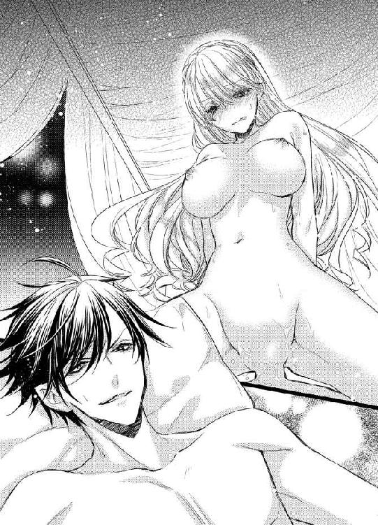
もし、完全に抜けてしまったら。
自分で入れろ。
そう言われるのはわかりきっている。
でも、それだけは無理。いくらなんでも、できない。
だから、余裕があるぐらいで、また飲み込む。
それを何度か繰り返していると、じゅぶ、じゅぶ、と濡れた音が大きくなってきた。入り口近くもどうにかしたくて、腰の動きを少し大きくする。
そんなに簡単には抜けないんだ、と、やっているうちにわかってきた。エミリアはガイアスのおなかに手をついて、激しく腰を振りだす。
もう、止められない。
「あっ...やぁっ...見ないでっ...あぁん...」
濡れすぎて、ぐちゅん、ぐちゅん、と音をさせるようになったエミリアの膣は、ガイアスに絡みついて離すまいとしている。
「見るに決まってんだろ。でけー胸、ぷるんぷるん、揺らしながら、嬉しそうに俺のをこすりやがって」
ガイアスはエミリアの乳房に手を伸ばして、揺れを手のひらで受け止めた。その動きを楽しみながら、つん、と上を向いた乳首を指でいたずらする。
「いやぁん...あぁっ...やだぁ...」
「こんなエロい体、初めてだ。たけー買い物だと思ったけど、伯爵の称号も手に入れたし、おまえも好きにできるし、安いぐらいだな」
ガイアスは片手を下にずらして、エミリアのとがりをこすった。
「だめぇぇぇ...っ！」
感じる三か所を同時に責められて、エミリアは全身を激しく揺らしながらイく。荒く息を吐きながら、ガイアスにかぶさるように倒れ込むと、その格好のまま、ガイアスが下から突き上げ始めた。
「やっ...ホントにっ...もっ...いやぁ...」
三日間で、確実にイクのが早くなっている。このままだと、一度のセックスで、四回も五回もイッてしまうようになるかもしれない。
そんなの、怖い。
気持ちよすぎて、怖い。
「いやって言いながら、俺のを締めつけてんじゃねえよ」
ガイアスはエミリアの双丘をつかむと、ぐっ、と自身を深く埋め込んだ。最奥まで達した瞬間、すごい勢いで温かいものが注ぎ込まれる。
エミリアは、ぎゅっとガイアスにしがみついた。
どこかに落ちてしまいそうな気がして。
ガイアスがエミリアの唇を吸い上げて、舌を絡めとる。唾液をかわしあう激しいキスをしながら。
きっと、いつかは飽きるはず。
エミリアは、自分にそう言い聞かせた。
いまはめずらしいから、エミリアに執着しているだけで。
一ヶ月、ううん、一週間もすれば、見向きもしなくなる。
だから、それまで我慢すればいい。
あと、一週間だけ。
「ああ、そうだ、そうだ」
ガウンを体にまいただけの格好で、エミリアの部屋から出ようとしたガイアスが、ベッドに寝ているエミリアを振り返る。
「俺は、明日から三日ほどいなくなる」
「え！」
まさか、一週間もたたないうちに解放されるなんて！
喜んだのが顔に出たのか、ガイアスが苦笑した。
「ホント、感情が素直に出るな、おまえは。ま、そういうところもかわいいが」
なにげなく言われた、かわいい、という言葉に、なぜか、エミリアは、どきんとする。
ただ、からかってるだけなのに。
感情を読まれるなんて、バカじゃねえの。
そのぐらいのことは、思ってそうなのに。
なのに、どうして、ときめいてしまうんだろう。かわいい、という言葉には、ちょっとした魔法が含まれているのかもしれない。たとえ、ガイアスじゃなくても、言われたら嬉しくなるに決まってる。
そうじゃなきゃ、この感情に説明がつかない。
「で、俺がいなくて寂しいだろうから、慰めに、俺の型を置いていってやる。自由に使え」
型って、なんの？
そこまで考えて、はっと気づいた。
「いらないわよっ！」
エミリアはわめく。
「絶対に使わないから、置いてかないでっ！」
最初は丁寧な口調でしゃべっていたけれど、途中からどうでもよくなって。いまは、かなり乱暴に話すようになってしまった。
気が強い、と評されてきたエミリアだけど、さすがに、こんなふうなしゃべりかたじゃなかった。完全に、ガイアスに悪影響を受けている。
「まあ、遠慮するなって。あとから、メイドに届けさせるから」
「いらないって言ってんの！ たまには、わたしの話をちゃんと聞きなさいよ！」
「あと、本が好きだって聞いたから、二階の反対側を図書室にしてやった。どんな本が好きかわかんねえから、適当に入れといたぞ」
「ホントに!?」
エミリアの顔が、ぱあっ、と輝いた。ガイアスが、へえ、と驚く。
「めずらしく素直だな。そんなもので、わたしがほだされるとでも思ってるの！ ドンドン、とかやりそうなのに」
「ドンドン、って何よ」
さすがに、そんなこと言わない。
「悔しがって、足を踏み鳴らす音」
ガイアスが、にやりと笑った。
「おまえ、自分が負けそうなとき、かならずそうすんじゃん」
「してないわよ！」
声を荒げてから、ふと気づく。
...わたし、いま、足で床を蹴ってた？
うわー、悔しい。エミリア本人も気づかなかった癖を、見抜かれるなんて。これじゃあ、口でなんて言おうとも、悔しがってるときはばれてしまう。
「まあ、そういうことにしておいてやってもいい」
余裕しゃくしゃくで、ガイアスは言った。
悔しい！ でも、足なんか踏み鳴らさない。
わかった。癖を直していけばいいのだ。ガイアスに指摘されたことは、気をつける。そうすれば、エミリアの考えてることを見透かされることもなくなる。
...たぶん。
「俺がいない間、退屈で退屈でしょうがないだろうが、本でも読んで暇をまぎらわせとけ」
「あのね、言っとくけど！」
エミリアは、ガイアスをにらんだ。
ガイアスがいなくて退屈なんて、そんなことがあるわけがない。ガイアスと本、どっちが大事かなんて、一瞬たりとも悩まずに答えが出る。
「わたしは本を読むのが大好きなの！ だから、退屈だとか...」
そこまで口にしてから、ふと気づく。
そういえば、本が好きだなんてガイアスに言ったことはない。ガイアスとともに過ごすときは、セックスばかりしていて、普通にしゃべった記憶すらない。
なのに、どうして、エミリアが本が好きだって知ってるんだろう。
顔をしかめたのに気づいたガイアスが、不審そうにエミリアを見る。
「急に黙るなよ。不気味だろ」
「わたし、あなたに本が好きって言ったことないよね？」
エミリアの言葉に、ガイアスは首をかしげた。
「それが、どうかしたか」
「だったら、なんで、本が好きってわかったの？ もしかして、調べた？」
エミリアの弱味でも握ろうと、近所のだれかに聞いたとか？ それで、あの子は本ばっかり読んでてね、みたいな情報を手に入れたの？
んー、でも、弱味なんて握ったところで、意味ないしなあ。ちがうか。
「調べるとか、バッカじゃねえの！」
ガイアスが大声で否定した。不自然なほど強い口調に、エミリアは首をかしげる。
いったい、どうしたの？
「なんで、この俺様が、わざわざ、おまえの好きなものを調べなきゃなんねえんだ。図書室を作ったら、おまえがほだされて、俺に惚れるとでも？ はっ、別にそんな気なんてねえよ。ただ、俺は伯爵の称号を手に入れたかっただけだ。おまえを抱いてるのも、いい体してるからで、特に意味はねえ。調子にのんな」
「なんで、そうなるのよっ！」
エミリアは目を見開いた。
「あなたが、わたしを喜ばせるためにこっそり好きなものを探るわけがないってことぐらい、重々承知してるわ！ そうじゃなくて、わたしの弱点でも知りたいのかと思っただけよ！ だから、こそこそ調べたのかと」
「弱点なら、知ってるぞ」
ガイアスが目を細める。
「さっきも、三か所同時に責めてやっただろ」
エミリアは、瞬時に顔を赤く染めた。
「もう、いいわよっ！ どこにでも行っちゃえ！ 帰ってこなくてもいいぐらいよ！」
エミリアは、脱がされたベビードールを投げつける。ガイアスはそれをつかんで、顔を埋める。
「やらしい匂いがする。これが土産か？ 俺に持ってけ、と。これでも嗅いで、浮気すんな、と、そう釘を刺してるわけだな」
「ちがうわよーっ！」
エミリアは、ベッドから降りた。裸なことなんて、気にしてられない。
「それ、返して！」
「いやだね。あ、この辺、ちょっと濡れてるぞ」
裾の部分を触るガイアスに、エミリアは真っ赤になりながら駆け寄る。
「触らないでっ！」
「おまえが投げたんだろうが。それに、これは俺が買ったものだ。どうしようと、俺の勝手。さ、いまから荷物にこれを詰めねえとな」
「やめてっ！」
エミリアはガイアスの手から、ベビードールを取り返そうとした。なのに、ガイアスがベビードールを持った手を高くあげるものだから、ぴょんぴょん飛んでも、一向に届かない。
「いい眺めだな」
ガイアスは、エミリアを見下ろした。
「おまえが跳ねるたびに、乳房が、ぶるんぶるん、揺れてる。触ってほしいのか」
「ちがっ...」
エミリアは、ようやく自分の姿に気づいて、慌てて胸を手で覆う。でも、こうやっていたら、ベビードールを取り返せない。
「じゃあ、三日後な」
ガイアスは、ひらひらと手を振って、エミリアに背を向けた。エミリアは、チャンス！ とばかりに、ガイアスの手が降りた瞬間、ベビードールをつかむ。
「甘いな」
ガイアスは、またもや手をあげた。力の差は歴然で、そうされてしまうと、ベビードールはエミリアの手から離れる。
「俺が、予想してないとでも？」
どうやら、ベビードールを取り返すのは無理そうだ。
「...どこに行くの」
もし、一人で遊びに行くのなら、ベビードールはあきらめよう。
「仲間の結婚式。こないだ、俺のに来てくれたやつらのうちの一人が結婚すんだよ。そういえば、あいつ、エミリアのこと、きれいで巨乳で清純そうでうらやましい、って言ってたな。そいつに、このシミがついたベビードールをやろうか。結婚祝いってことで。喜ぶだろうな、あいつ。エミリアのことを想像しながら、すごい勢いで自分を慰めるにちがいない」
「やめてえええええ！」
エミリアは耳をふさぐ。ガイアスなら、本気でそんなことをやりそうだ。
「お願い...なんでもするから...」
エミリアは、ガイアスを見つめた。ここで、もう一回抱かれてもいい。愛液がついたベビードールを知らない人に見られるぐらいなら、なんだって我慢する。
「じゃあ、寂しいって言え」
ガイアスは、ベビードールを、くるくる、と振り回した。
「俺がいなくなって寂しい、と、切なそうに言ってみろ」
そんなことできるわけがないじゃないっ！ いなくなって、せいせいするのに！
エミリアは唇を噛んで、そう言いたいのをぐっとこらえる。
「おまえの、なんでもする、なんて、所詮、口だけだからな。言えねえだろ」
エミリアは、ぐっ、とこぶしに力をこめると、唇を開いた。
「ガイアスがいないと、寂しい...」
そっと手を伸ばして、ガイアスの腕に触れる。
「早く帰ってきて？ わたしを一人にしないで」
ウソなのに。そんなこと思ってないのに。
どうしてだろう、言葉にしたら、本当に寂しいような気持ちになってきた。そういえば、名前も初めて呼ぶ。さっき、ガイアスも、エミリアと呼んだ。
たったそれだけのことなのに、なぜか胸がざわつく。
変なの。
エミリアは内心で首をひねった。
ガイアスのことなんて、どうでもいいのに。というか、むしろ、積極的にきらいなのに。
なんで、こんな気持ちになるんだろう。
「女って、すげーな」
ガイアスは、ふん、と鼻を鳴らす。
「平気な顔で、ウソつけんのか。怖い、怖い」
ガイアスは、ほらよ、とエミリアにベビードールを渡した。
「おまえが正直なのは、抱かれてるときだけだな。三日後、素直なおまえを隅々まで見てやるから、覚悟してろ」
ガイアスが足音高く、ドアへ向かう。何をそんなに憤慨しているのか、よくわからない。
言え、と命令したのは自分のくせに。
だから、しょうがなく言ったのに。
それでも、気まずいまま別れるのは、なんとなくいやで。
「...いってらっしゃい」
聞こえるか聞こえないかの声で、小さく告げた。ガイアスが驚いたように振り向く。
聞こえちゃったのか。聞こえなければいいな、って、途中から願ったのに。
でも、届いたんならしょうがない。
「気をつけて、いってらっしゃい」
エミリアは、笑顔を浮かべた。
自分でも意外なことに、いやみでもなんでもなく、それは本音で。いくらきらいでも、事故にあってほしい、なんて思えなかった。
ここから街までの道は、結構険しい。ガードレールがない部分もあったから、うっかりするととんでもないことになる。
だから、気をつけて。
ガイアスは、しばらくエミリアをじっと見ると、ふう、と息を吐いた。
「気をつけて、いってくる」
無愛想に、だけど、きちんと応えてくれた。
そのことに、ほっとしている自分が不思議で。
エミリアは、心臓の上に手のひらを置く。
いったい、どうしたの？
そう尋ねてみても、そこは規則正しく鼓動を刻むばかりで。
なんの返事もくれなかった。
「すごい！」
エミリアは図書室に入って、感嘆の声をあげた。
図書室といっても、そんなに量はないだろう。だって、急に作ったんだし。
そんなエミリアの予想を、いい意味で裏切って、広さはエミリアの部屋の半分ほど。窓側をのぞいた三面の壁際はもちろん、部屋の中にも一定間隔で本棚が置いてあって、そこには、ずらり、と本が並んでいる。
それだけでも嬉しい悲鳴をあげたいほどなのに、エミリアがさらに感動したのは、部屋の中央にソファーセットが置いてあること。
好きな本を何冊かとって、ソファーのところまで持っていって、だらしなくソファーに寝そべりながら、どれを読もうかな、とぱらぱらとめくることができる。気に入ったら、そのまま読み始めてもいい。立ちっぱなしで足が痛くなることも、冷たい床に腰を下ろす必要もない。
このソファーセットがガイアスの気遣いだとしたら、きちんとお礼を言いたいぐらい、ありがたい心遣いだ。
実家の図書室（といっても、ここまで立派なものじゃなかったけど、読み切れないぐらいの量はあった）では、夢中になると、ぺたん、と床に座って本を読んで、よく母親に笑われたものだ。
部屋に戻って読みなさい。お行儀が悪いわよ。
その母親の声が、なつかしい。
会いたいな。
ふいに、そんなことを思う。
借金がなくなって、母親に危害を加えられることはもうないのだから、父と復縁したりしないだろうか。そうしたら、エミリアが実家に戻ったときに会いにいける。
「...実家に戻れたら、の話だけどね」
でも、希望がないわけじゃない。
ガイアスは、そのうちきっと、エミリアに飽きる。そうすれば、いまのように、毎日、エミリアの部屋を訪れて、エミリアを抱くこともなくなる。
もしかしたら、エミリアの存在そのものを忘れてしまうかもしれない。
そういえば、そんなやついたな。まだ、この城にいるんだろうか。
それぐらい、エミリアの存在感が薄くなれば、こっそり家に帰ってもばれまい。どうせ、ガイアスは伯爵の称号が欲しかっただけだ。エミリアが、ここにいてもいなくても、どうでもいい。
そのときまでは、じっと我慢していよう。
だって、ここにこれだけ本がある。いくらでも、時間はつぶせる。
まずは、どんな本があるのか、見てみよう！
エミリアは、うきうきと、まずは右の壁際の本棚に足を運んだ。ずらり、と百科事典が並んでいる。
「わー、すごい！ お父様に、買ってほしい、って頼んだら、そんなもの何にするんだ？ って、とても不思議そうに聞かれたのよね」
意味がわからない言葉なら、辞書を引けばいいじゃないか、とも。
そうじゃないのだ。百科事典は、見ているだけで楽しい。知らない言葉なら、父親の言うとおり、辞書を引けば意味を理解できる。でも、百科事典には絵や写真が載っていて、言葉よりもはっきりと、いろいろなものを見せてくれるのだ。
百聞は一見にしかず。
そのことわざを、まざまざと思い知る、素敵な本だ。昔、遊びに行った友人の家にあって、一日中、読みふけっていた。そのぐらい、楽しい。
でも、結局、買ってもらえなかった。父親が本を好きじゃないのと、ちょうどそのころ、財産の半分をだましとられたので、節約したかったのだろう。
ここにある百科事典は、友人の家のよりも巻数が多い。つまり、もっと細かい言葉が載せられていることになる。写真や絵も、たくさんあるだろう。
エミリアは、手を出したくなる気持ちをぐっとこらえた。ここで、百科事典なんか開いてしまったら、もう止まらない。百科事典は、一冊ずつ部屋に持って帰って、眠る前に読むことにしよう。
ほかにも、普通の辞書や、世界の歴史についての考察など、学術書の類が収めてある。
窓側には、何も置いていなかった。窓から光が差し込んで、きらきらと床で反射している。
そうか、まだお昼なんだ。
エミリアは、うきうきした。
眠るまでに、どれだけの本が読めるだろう。
左側の壁には、ロマンス小説。ドアの左に冒険小説、右にミステリー。ソファーセットをのぞいた部分には、四つの本棚がきれいに配置してあって、ノンフィクション、エッセイ、紀行本、古典などなどなど。ジャンルによって位置がわけられている。これなら、その日の気分で読みたいものを探すのに便利だ。
「それにしても、読んだことがないのばっかりだわ」
エミリアは、紀行本を一冊、手に取った。たぶん、ここは国がちがうのだ。だから、発行されている本もちがう。
そういえば、自分がどこの国にいるのか、いまだに知らない。ガイアスとは、そんなことをしゃべる機会もないし、聞いたところで、正直に教えてくれるともかぎらない。
でも、いつかは聞きださないと。ここがどこかわからないことには、家にも帰れない。ガイアスが、エミリアに飽きそうだな、と思ったら、うまく聞きだそう。
エミリアは、それぞれの棚から一冊ずつ、興味を引かれた本を持って、ソファーに向かった。本をテーブルに並べて、笑顔を浮かべる。
「どれから読もう～」
表紙に手を滑らせて、そっと触れてみる。
ああ、すごく幸せ！
エミリアは、まず最初に冒険譚を読むことにした。
ここからこっそり脱出するときのために、知識を身につけておかなくちゃ！
「ここにいらしたんですね」
パチン、という音とともに、天井のシャンデリアがほのかに明かりを照らし始めた。はっと気づいて、エミリアは外を見る。
すでに日が傾いて、暗くなりだしていた。
どうりで、ちょっと読みにくいと思った。
「ありがとう」
エミリアは、入り口に立っているメイドに微笑みかける。初日、四人でエミリアのめんどうを見ようとしていたメイドたちは、エミリアにはそんなに手がかからない、と悟ったのか、一人ずつ交替で来るようになった。
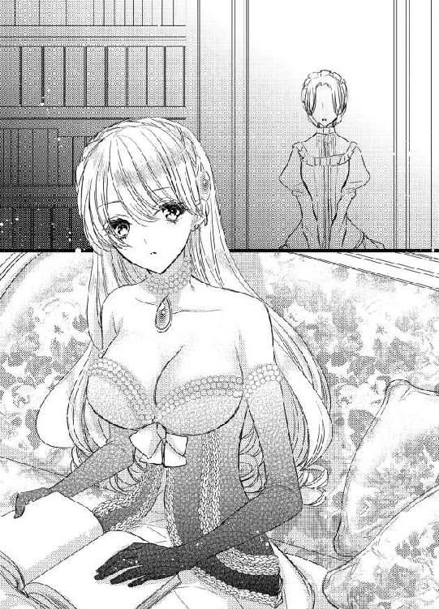
もしかしたら、交替じゃなくて、おなじメイドなのかもしれないけど、勢ぞろいしているときですら、見分けがつかなかったのに、一人だけだとよけいにわからない。初日の記憶が薄れてしまったので、なおさらだ。
「お部屋を探しましたよ」
一人だと、あの、きゃっきゃした感じがなくて、おとなしい。このほうが、エミリアとしてもやりやすい。
「ごめんなさい。図書室を作ってくれた、って聞いたから、飛んできちゃって」
「ガイアス様の思惑どおりですね」
メイドは、くすりと笑った。
「俺がいない間に退屈させないように、って、どんな本がいいのか、真剣に選んでらっしゃいましたよ」
「え...ガイアスが？」
エミリアは顔をしかめる。
「エミリア様が考えていらっしゃるよりも、ガイアス様はエミリア様のことを気に入っていらっしゃいますよ」
メイドに言われて、エミリアは、うーん、と首をかしげた。気に入ってる、というより、新しいおもちゃが手に入ったから、しばらく遊ぼうか、みたいな感じがするけど、いまの問題は、そこじゃない。
「図書室を作ろうと最初に言い出したのは、ガイアスなの？」
「ええ、そうですよ。ガイアス様以外に、だれがこのお城を改装できると思います？」
そういう意味じゃない。エミリアが不審げな表情をゆるめないからか、メイドがけげんそうにつづけた。
「エミリア様が本がお好きだとおっしゃったんですよね？」
「言ってないの」
エミリアは、じっとメイドを見た。
「もしかして、あなたたちのだれかにしゃべったのかな、って思ったんだけど」
メイドは、何かご用はありますか、と、日に三回ぐらい訪ねてきてくれる。食事も持ってきてくれる。そのときに、ありがとう、だけじゃ、なんだか悪い気がして、しばらく言葉をかわすことがあった。
好きな食べ物を口にしたら、つぎの日は、それを持ってきてくれたり。
そのときに、本が好きなのに、しばらく読んでない、と、ぽろりとこぼしたのかと思っていた。それをガイアスに教えると、じゃあ、自分がいない間の暇つぶしのために図書室を作ってやるか、となったのか、と。
でも、どうやら、ちがうらしい。
「ガイアスは、どうして、わたしが本を好きだって知ってたの？ わたしのこと、調べてる？」
本人は否定していたけど。あれは、エミリアの好きなものをわざわざ探るようなことはしない、という意味で。それ以外に何か知りたいことがあって、たまたま、調査結果に、無類の本好き、と書かれていたのかもしれない。
「どうして調べなきゃならないんですか」
メイドは、驚いたようにエミリアを見る。
「エミリア様、何か隠しておられます？」
「ないわよ、ないない」
エミリアは、ぶんぶん、と手を振った。
「だから、不思議なの。だって、調べても秘密なんて出てこないし。あ、もしかして...」
エミリアは目を見開く。どうして、これを思いつかなかったんだろう。
「わたしじゃなくて、お父様やお母様に関してなのかも！」
借金を少しでも取り返すために、両親の弱味を探してたらどうしよう！
「エミリア様」
メイドが、エミリアに近づいてくる。
「ガイアス様は、そんな卑怯なことをしませんよ」
「どこがよ！ 伯爵の称号を買って、私を好き勝手にしてるじゃない！」
「それが、エミリア様のお望みになったことじゃないですか？」
メイドは静かに告げた。まるで、エミリアに言い聞かせるように。
「伯爵の称号と自分自身を、売りに出されたんですよね。それも、かなりの高額で。ガイアス様は、その競りに勝たれて、きちんとお金を支払われました。わたくしも、こういう仕事をしている関係上、いろいろなかたのうわさを耳にしますが、競りに参加した中では、ガイアス様が一番まともですよ。ほかには、ご老齢にも関わらず、愛人を二十人以上囲ってらっしゃるかたとか、奥さんが毎年変わられるかたとか、娼館から出入り禁止になるほど乱暴な性交を好まれるかたとか、ここでエミリア様にお教えするのもはばかられるようなうわさがつきまとってらっしゃるかたとか」
エミリアの背中が、ぞわっ、とした。たしかに、その中だったら、ガイアスが一番まともだ。
結婚式で、指輪を投げられたけど。
まあまあ、と評価されたけど。
でも、図書室を作って、本を読ませてくれる。
それだけで、エミリアの心は浮き立つ。
「どんなかたに買われるのかわからない。それが、競売です。エミリア様に拒否権はないのですよ」
「...うん、わかってる」
エミリアは、うつむいた。
「ガイアスが、そんなに悪い人じゃないんだろうな、ってことも知ってる。でも、図書室を作ってくれたときに、なんで本が好きだって知ってるんだろう、って疑問に思っちゃったの。だれに聞いたんだろう、何を調べたんだろう、って。そうしたら、お父様のことが心配になっちゃって」
エミリアは、ふう、と息をつく。
「お父様は、人を信じやすいの。借金がなくなったことを喜ばしく思っても、それをわたしが肩代わりしたことは、いまこの瞬間も、ものすごく悔やんでるはずよ。自分がしっかりしてれば、って。そこに儲け話を持っていったら、また、ころり、とだまされるかもしれない。それが怖くて、勝手にガイアスを責めちゃった。ひどいこと言ったわよね、あなたのご主人様なのに」
ガイアスにずっと仕えてきたメイドたちには、ガイアスに対する思いがある。エミリアに悪口を言われて、いい気がするわけがない。
ガイアス様はそんな卑怯なことをしません。
そう言ったときのメイドの口調には、いらつきが含まれているように感じられた。でも、それは、しょうがない。
だって、たとえば、だまされる方が悪い、と父親のことを言われたら、いくら本当のことでも、エミリアは腹が立つ。エミリアだって、おなじことを思うけど。それは家族だからこそのいらだちなのだ。
それに、エミリアは、他人が知らない父親のいいところをわかっている。だまされて、家族をひどい目にあわせたというのに、どうしてもきらいになれないから、腹立ち紛れに悪口を言うのであって、赤の他人が口にするのとは、まったくちがう。
メイドにとってのガイアスも、おなじような存在のはず。
だから、いまのはエミリアが悪い。
「ごめんなさいね」
エミリアは、ぺこり、と頭を下げた。
「お父様が普通に暮らせるようになったのは、すべてガイアスのおかげなのに。わたしにも親切にしてくれているのに。こうやって、あなたたちをつけてくれて、わたしが過ごしやすいようにしてくれてるのに。やつあたりしちゃった」
「エミリア様は、いいかたですね」
メイドが、ふわり、と笑う。
「いいんですよ、やつあたりされても。エミリア様もまた、わたくしたちのご主人様なんですから」
「うーん、でも」
エミリアは首をかしげた。
「そういうの、自分で自分がいやになっちゃうから。それに、因果応報って言葉があるでしょ。そのうち、あなたが出世して、わたしよりえらくなるかもしれない。そのときに、やつあたり返しされたら、と思うと怖いしね」
エミリアは、茶目っ気たっぷりにつけくわえる。
「とんでもない意地悪をしそうじゃない？」
「ええ、しますね」
メイドは、あっさりと肯定した。
「されたことは忘れないタイプですし、復讐もしますよ」
「じょ...冗談よね？」
「さあ、どうでしょう」
メイドは、ふふ、と含み笑いをする。
...うん、わかった。この人には逆らうまい。ただ、四人のうちどのメイドか区別がつかないのは、問題だけど。
でも、だれにもひどいことをしなきゃいいだけのことだ。
「ところで、エミリア様。お食事はどうされますか」
「あ、そうか、忘れてた！」
そういえば、昼食も抜かしてた。どおりで、おなかが減っている。でも、いまはまだ、この冒険譚のつづきが気になる。
そう、エミリアが読み始めた冒険譚は、一冊で終わりじゃなかったのだ。全部で四巻。その二巻目を読み終えたところで、どんどんおもしろくなってきている。早く先を読みたくてしょうがない。
「今日はいいわ」
何かおなかに入れたいけど、でも、ごはんを食べてる時間も惜しい。部屋に果物が置いてあるから、もし、どうしても我慢できなくなったら、それでもつまもう。
「フィンガーサンドイッチなら、本を読みながらでも食べられますよ」
「え、いいの!?」
エミリアは、ぱっと顔を輝かせた。何かを食べながら本を読むのは、お行儀が悪い、としかられそうだけど。
エミリアにとっては、至福の時間だ。
「もちろんですよ、エミリア様。わたくしはメイドですので、なんでもお申しつけください。エミリア様は、何もご要望を出されませんので、わたくしたちは暇なのです」
「じゃあ、休んで」
エミリアは、にこっと笑った。
「ガイアスの世話が大変だから、四人もメイドがいるんでしょう？ でも、あと三日、ガイアスはいない。わたしは、本さえ読んでいれば幸せ。たまにおやつを持ってきてくれれば、餓死しなくてもすむ。だから、みんな、休んでちょうだい」
ガイアスが戻ってきたら、また忙しい日が始まるのだから。
「かしこまりました」
メイドは、ぺこり、と頭を下げる。
「ほかのものにも、そう言っておきます」
「よろしくね」
エミリアは本に目を戻そうとして、あ、と思いついた。
「ねえねえ、名前を教えてくれる？ 四人分。そうしたら、みんなのことをちゃんと覚えられると思うの」
「メイドです」
メイドは、穏やかな笑みを浮かべる。
「情報は、それだけで十分だとお考えください」
「教えてくれないのね」
エミリアは、がっかりする。いい考えだと思ったのに。メイドは微笑んだまま、否定も肯定もしない。
「それでは、フィンガーサンドイッチを持ってきます」
そう言うと、もう一度頭を下げて、図書室を辞した。エミリアは、その後ろ姿を見ながら、ふう、とため息をつく。
「信用されてないのかなあ」
いついなくなるとも知れない相手に、名前なんて教えてられない、とか？
たしかに、いつかいなくなりたい、とは思ってるけれど。それは、まだまだ先のことだろうし、その間は仲良くしたい。
なのに、メイドとしか呼べないなんて、なんだか寂しい。
「まあ、しょうがないか」
エミリアは、頭を切り替えた。
そのうち、信用してくれるようになれればいい。もっと親しくなったら、名前も教えてくれるだろう。ここに来て、たった三日。焦ってもしょうがない。
エミリアは、本のつづきを読むことにした。
コンパスも持たずジャングルにさまよいこんだ主人公がどうやってそこから抜け出すのか、知りたくてしょうがなかった。
４
「土産だ」
すとん、と目の前に箱が置かれて、エミリアは、ひゃあ！ と奇妙な叫びをあげた。
いったい、なにごと!?
でも、すぐに、その声の主に思い当たる。
「ガイアス！」
エミリアは本を置いて、声のしたほうを振り返った。三日前と変わらない、元気そうな姿が見える。
それに、ほっとして。そして、ほっとしたことに、ちょっとむかついて。エミリアは、顔をしかめた。
ガイアスが無事だからって、どうしたというの。
「ただいま」
「おか...えりなさい」
おかえり、なんて言わなくてもいいか、と思ったのに、勝手に口をついて出る。
「なんだ、変な顔して。まあ、もとから変な顔だけどな」
「わたしは美人よっ！」
勢いで反論してから、はっと我に返った。
自分で美人って言うとか、すっごい自信過剰じゃないの！
「んー、まあ、美人の部類には入るな」
なのに、ガイアスはからかわず、肯定してくれる。それが、どうしてだか、くすぐったくて、恥ずかしい。
そうでしょ、といばってやればいいのに、顔を赤くしてしまう。
...わたし、なんか、おかしくない？
「ところで、土産だって言っただろ。開けてみろ」
「あ、うん」
エミリアは、目の前の箱を開けてみた。中には、イチゴのショートケーキが四つ入っている。
「イチゴのケーキ！」
エミリアは、ぱっと顔をほころばせた。小さいころに読んだ童話に、イチゴのケーキがとてもおいしそうなものがあって。それ以来、エミリアの大好物なのだ。
「ありがとう！」
新鮮なイチゴが出る時期になって、そろそろお店に並ぶころだな、とちょうど考えていた。食べたいなあ、とも。
ここの食事は、とてもおいしい。コックの腕がいいのはわかる。たぶん、リクエストすれば、イチゴのショートケーキも作ってくれるのだろう。
だけど、そんな図々しいことは頼めなくて。今年は食べられないんだろうな、とあきらめていた。
なのに、いま、ここにある。
「なんで、わたしがイチゴのケーキが好きって、わかった...」
ちょっと待って。落ちついて。
エミリアは、自分に言い聞かせた。
本が好きとか、イチゴのケーキが好きとか、そんなの、わざわざ調べるわけがないわ。偶然よ。この季節に、イチゴのケーキがあちこちにあって、たまたま街で見かけたガイアスが買ってきてくれただけ。
おおげさに騒がないのよ、いいわね。
エミリアは自分に言い聞かせた。
だけど、すぐに答えは判明する。
「こないだ、寝言で言ってたぞ」
「寝言？」
エミリアは顔をしかめた。
なんで、ガイアスがわたしの寝言を知ってるの？
「セックスのあと、おまえが気絶するように眠って、俺がシャワー浴びて出てきたら、すっごい恨めしそうな声で、イチゴのショートケーキ...、ってつぶやいてたから、こりゃ、買ってこなきゃ殺されるな、って」
「あ、よかった...」
エミリアは、ほっと胸を撫で下ろした。そういう理由なら、納得できる。
「なんだよ、また、俺がおまえの好きなものを調べたんじゃないか、って、とんでもない自意識過剰なことを考えてたのか」
「ちがうわよっ！」
いや、ちがわないけど。好きなものを調べるんじゃなくて、両親をだましたり脅したりするための情報を手に入れようとしてるのかと疑った。
...なんてことを言えるわけがない。
「すーぐ怒る。糖分が足りてねえんじゃねえの？ ケーキでも食えば？」
「あ、うん、ありがとう」
ついさっき、メイドがコーヒーをポットで持ってきてくれた。まだ温かいから、それと一緒に食べよう。
「ガイアスは？ 食べる？」
箱の中には、四つケーキが入っていた。さすがに、エミリア一人じゃ食べきれない。
「俺はいい。甘いもん、苦手でな」
「えー、イチゴのケーキ、おいしいのに」
とはいえ、きらいなものを無理して食べても意味がない。ちょうどお昼どきだから、ふたつ食べて、あとはメイドにでもあげよう。残り物で悪いけど、腐らすよりはいい。
「そうだろうな。夢に見るぐらいだしな」
にやりと笑って、ガイアスは言う。以前は、その意地悪な笑顔に、いらっとしていたのに。三日会わなかったからか、なつかしくさえ思える。
そんな自分にとまどって。エミリアは、ガイアスから顔をそむけた。
「どうした？ ただ、からかっただけだろ。いつもなら、くってかかるくせに」
「ケーキ買ってきてくれたから、許そうと思うの。ガイアスの顔さえ見なければ、腹も立たないかな、って」
「ホント、おまえは負けずぎらいっつーか、気が強いっつーか。普通の女なら、俺にメロメロになるところだけどな」
「わたしは、普通の女じゃないわよ」
ああ、よかった。ごまかせた。
「なんたって、もと伯爵令嬢ですからね」
「なに言ってんだ。いまは伯爵夫人だろ。そうじゃなきゃ、嫁にもらった意味がねえじゃねえか」
「あ、そうか」
エミリアは、ぽん、と手をたたく。伯爵の称号をはく奪されたつもりでいたけれど、そうじゃなかった。ただ、ガイアスが伯爵家の一員になっただけ。
「わたし、伯爵夫人なんだ」
「あたりまえだっての」
ガイアスが、あきれたような表情を浮かべた。
「ったく、わけわかんねえこと言うやつだな」
「だれにだって、かんちがいはあるでしょ」
エミリアは、つん、と顔をそらす。
「かんちがいはかまわねえけど、自分のまちがいぐらい認めろ。その意地っ張りを直さねえなら、これ、やんねえぞ」
ガイアスは、スプリングコートの内側から、クラフトペーパーに包まれた四角いものを出した。
「何、それ」
どうせ、エミリアに謝らせたくて、なんでもないものを出してきたのだろう。イチゴのケーキがお土産なんだから、それ以上は買ってくるわけがない。
「なんだろうな～」
ガイアスが、びりびりと包み紙をやぶる。中身が見えた瞬間、エミリアは飛び上がった。
「ガイアス！」
エミリアは、ガイアスにしがみつこうとする。
もちろん、ガイアスが手に持っているものを奪うために、だ。だけど、ガイアスが、そう簡単に渡してくれるわけがない。
「俺の留守中、何か起こってないかたしかめるために電話したら、メイドが、とんでもない騒ぎが起きた、と困ったように言ってたから、わざわざ探してやったんだ。なのに、お礼を言うどころか、奪おうとするとは、ホント、いい度胸してんな」
ガイアスの言葉に、エミリアは、はっとなった。
そうだ。ガイアスは、この本を探してくれたのだ。
エミリアが最初に読んだ冒険譚は、実は四冊で終わりじゃなかった。読みながら、おかしいな、と思ってはいた。残りのページ数と話の内容が、どうもバランスが悪い。というか、このままでは何も解決しそうにない。案の定、四巻の終わりで、主人公が人食い族につかまって、これから食べられそうになるところで終わっていた。つづく、という文字を、あんなに絶望的な気持ちで見つめたのは、後にも先にも、あのときが初めて。
いつだって、つづく、という文字は、エミリアにわくわくした気持ちをくれた。
まだ読める。もっとこの物語にひたっていられる。
その幸福感しか知らなかった。
まさか、つづく、という字をひっかきたくなるなんて。
もしかして、どこかに最終巻がまぎれこんでないだろうか、と図書室中を探しまくった。背表紙を全部見ても、どこにもなくて、あきらめきれずに、一冊ずつ引っ張り出した。背表紙がまちがっていて、表紙にはちゃんと本の名前が書いてあるんじゃないか、と淡い期待を抱きながら。
その様子を見に来たメイドが、恐る恐る、エミリアに尋ねたものだ。
いったい、何があったんですか、と。
床に散乱する本を見ていたら、だれだって、そんな疑問を抱くだろう。
最終巻がないの。
エミリアは、半泣きで訴える。
主人公が食べられそうなのに、どうにかして救わなきゃいけないのに、つづきがないの。どうしよう、わたし、どうしたらいい？
どうにかします、とメイドは請け負ってくれた。だけど、どうしようもないことを、エミリアは知っていた。
一日たって、あきらめた。別の物語を読み始めた。
巻数が書いてないもの。そして、わくわくはらはらしないものを選んだのは、つぎもおなじ目にあったら立ち直れない、とわかっていたから。
だから、いま、エッセイを読んでいる。あと何日かしたら、普通の物語も読めるぐらいには回復するはずだった。
でも、いま、一番欲しかったものが、ガイアスの手の中にある。
あの中に、主人公がどうやって人食い族から逃げ出したのか、そして、どうやって物語が終わるのか、がある。
読みたい。
何をしてでも。
「意地を張って、ごめんなさい」
エミリアは、ガイアスから体を離すと、深々と頭を下げた。
「ケーキだけでもありがたいのに、本まで買ってきてくれて。なのに、わたしはお礼も言わずに、奪おうとしちゃった。ガイアスが怒るのも、意地悪するのも、当然。反省するから、その本を読ませてください」
「うわ...」
ガイアスが顔をしかめる。
「自分でやらせといてなんだが、似合わねえな、謝るの」
「ちょっとーっ！」
エミリアはわめいた。
「人が真面目に謝ったのに、その態度はないんじゃない!?」
「そうだな」
ガイアスはうなずく。
「俺はだれかさんとちがって、きちんと謝れる人間だ。俺が悪かった」
潔く頭を下げるガイアスを、ほんのちょっとだけ、かっこいいと思ってしまった。もしかしたら、手に持っている本のせいで、何割かましに見えたのかもしれない。
「ほい。これも土産だ」
本を渡してくれたガイアスに、エミリアは、ぎゅうと飛びついた。
「ありがとう、ガイアス、大好き！」
深い意味もなく、そう口にしてから、はっとする。
わたし、いま、なんて言った？
エミリアは、恐る恐る、ガイアスから体を離した。ガイアスがどんな表情をしているのか、知りたくない。
あきれてる？ とまどってる？ 迷惑がってる？
なんで、大好き、なんて言っちゃったんだろう。
大好きなんかじゃないのに。好きでもないのに。
きらい、なのに。
本当に？
心の中から、そんな声が聞こえてきた。
本当に、ガイアスのことがきらいなの？
エミリアは本を胸に抱えて、図書室を飛び出す。
「エミリア!?」
ガイアスの声が追いかけてくるのに、エミリアは振り向かずに叫んだ。
「ごめんね！ いま気づいたんだけど、わたし、三日、お風呂に入ってなかった！ 飛びついたときに思い出したの！ シャワー浴びてくる！」
お風呂に入ってないのは、本当だ。少しの時間も惜しくて、ざっとシャワーを浴びるだけ。そのぐらい、本に夢中になっていた。
でも、これはただの言い訳。
大好き。
そう言ってしまった真意を尋ねられたら困るから。
だから、逃げる。
ガイアスから、逃げる。
「大好きなんかじゃ...ないよね...？」
エミリアは、自分に問いかけた。
鼓動が、どくん、とひとつ跳ねて、でも、それはなんの答えにもならなかった。
シャワーを浴びる、と言ったのは、ただの口実だったけれど、頭をすっきりさせたくて。そして、本の世界に没頭したくて。
エミリアは、ドレスを脱いで、シャワールームに入った。お湯を出して、頭から浴びる。
「なんで、あんなこと言っちゃったんだろう...」
エミリアは、大きな大きなため息をついた。
たとえば、何かをしてくれた友達とか。母親と、楽しくおしゃべりしている最中とか。ねだった本を買ってくれた父親とか。
そういう相手なら、わかる。勢いで、大好き、と言ってしまうこともある。相手だって、笑いながら、大好き、と返してくれる。
それは自然な会話で、そのまま何もなかったかのように時間が流れていく。
いまのエミリアみたいに、思い出して後悔したりなんかしない。
エミリアは、自分の性格をわかっている。
ウソをつくのがきらい。お世辞も言わない。お愛想なんて、もってのほか。
だから、大好きな人にしか、大好きって言わない。
だとしたら。
そこまで考えた瞬間、胸を、わしっ、とつかまれた。
「きゃああああああ！」
あまりの驚きに、エミリアは大きな悲鳴をあげる。
「だれっ!?」
そう口にしてから、バカな問いかけだと気づいた。こんなことをするの、一人しかいない。
「おい、それを聞くってことは、まさか、俺のいない間に、別の男を招き入れてたんじゃねえだろうな」
ガイアスは、エミリアの耳に息を吹きかける。エミリアの体が、ぞくぞくっ、と震えた。
「そんなこと...するわけがっ...」
メイドたちにたしかめれば、すぐにわかることだ。
「わかんねえだろ。おまえの体はエロすぎて、三日も男に抱かれないと我慢できねえのかもしれねえし」
乳首を、きゅう、とつままれて、エミリアの体が跳ねる。
「やぁっ...」
「ほらな」
ガイアスは、勝ち誇ったように言った。
「たったこれだけで、足ががくがくしてんぞ」
「そんなこと...なっ...」
くにくに、と乳首を左右に回されて、そこが、ぴん、と屹立する。エミリアの口から、甘いあえぎがこぼれた。
「あ、そうだ。おまえ、風呂入ってねえんだろ。俺が洗ってやる」
「いいっ...！」
エミリアは、ぶんぶん、と首を横に振る。
「自分で、できるから！」
冗談じゃない。洗う、とか言っておきながら、とんでもないことをするにきまってる。
「まあ、遠慮すんなって」
ガイアスはちょうど肩先あたりにある簡易棚から、ボディソープをとった。手のひらに出して、丁寧に泡立てる。
「大丈夫だってば！ わたし、先に出てるね！」
エミリアはどうにかして逃げようとするのに、ガイアスがエミリアの前に立ちはだかって、とおしてくれない。
ガイアスは両手を泡だらけにすると、エミリアの耳たぶをつまんだ。たったそれだけの刺激に、エミリアの腰が落ちそうになる。
だって、泡がやわらかくて気持ちいいんだもの！
ガイアスは耳たぶを何度かなぞって、そのまま、手を下にずらした。首筋、肩と撫でて、乳房を両手でつかむ。
「ホント、でけえな」
ガイアスは、目を細めた。
「友達の嫁も、かなりでかそうだったが、あれはコルセットで寄せてあげて、だからな。おまえの場合、何もしなくても谷間があるし、乳首が、つん、と上に向いてて、形もいい。せっかくきれいなおっぱいなんだから、垂れないように、俺がマッサージしてやる」
「しなくて...いいっ...あっ...あぁん...」
ガイアスが、むにむに、と乳房を揉みしだく。ぶるんぶるん、と震わされて、乳房が上下に揺れた。ガイアスが泡を乗せた指を、乳首に運ぶ。
「あんっ...！」
つ、と触れただけなのに、エミリアの体が鋭く反応した。ガイアスは乳輪から乳首の根元、乳頭へと、ゆっくり指をなぞらせる。
「ここは、特にきれいにしとかないとな。俺がよく舐めてるから、雑菌が繁殖してるかも」
そんなわけがない。だけど、抵抗できない。
どうして、こんなに乳首が弱いのだろう。触れられると、快感がとまらなくなる。
「きれいにしなきゃいけないのは、ここだけじゃねえ」
ガイアスは片方の手を、エミリアの体にそって降ろした。どこを触られるのかわかっていても、エミリアにはどうすることもできない。
だって、触ってほしい。
いつから、こんなにいやらしくなってしまったんだろう。
エミリアは唇を噛む。
乳房を愛撫されるだけで、ほかのところに手がさまようのを期待するようになってしまっている。
ガイアスの手が、おなかからまっすぐ降りた。きゅっと閉じている足の間に、指を滑らせる。
「いやぁ...」
エミリアはガイアスの肩にしがみついた。そこをいじられたら、立っていられない。
「壁にもたれろ」
耳元でささやかれて、エミリアはそのとおりにした。少し冷たいタイルが、もしかしたら、熱を冷ましてくれるかもしれない。
ガイアスはエミリアのとがりを、指でそっとなぞる。久しぶりのその感触が、エミリアを狂わせる。
「んっ...だめぇ...そこっ...」
「もう濡れてるぞ」
ガイアスが、にやりと笑った。
「俺に触られるのを待ってたのか」
「ちがっ...」
エミリアは、ぶんぶん、と首を横に振る。
「奥はどうだ」
ガイアスの指が割れ目をなぞって、膣の入り口に到達した。つん、とつつかれて、そこが、ふわあ、と花開く。
ガイアスは指を一本入れた。くちゅ、と濡れた音が響く。シャワールームだから、いつもより大きく聞こえて、エミリアは真っ赤になった。
「こっちも、びちょびちょだな。あいかわらず、エロい女だ」
ガイアスはエミリアに顔を近づけると、唇を奪う。舌先で、ちろちろ、と唇をなぞられて、エミリアは、びくんびくん、と体を震わせた。
ガイアスがしてくれる、何もかもが気持ちいい。
ガイアスは、とがりから膣口まで、指を何度も往復させる。気持ちいい部分を刺激されて、エミリアの膣の奥がひくつき始めた。
「よし、きれいになったな」
ガイアスが、エミリアの乳首と割れ目から、手をのけてくれた。
ああ、よかった。意地悪は終わったんだ。
ほっとしていたら、ガイアスがシャワーに手を伸ばす。
「あとは洗い流さないと」
エミリアは目を見開いた。ガイアスが何をしようとしているかぐらい、いくらエミリアだって、わかる。
「やっ...自分でっ...」
シャワーの細い水圧は、指とも舌ともちがう感覚を与えることだろう。普通に浴びているときには、なんとも思わないけど。ガイアスが使うとなると、話は別。
エミリアが慌ててガイアスからシャワーを奪おうとするのに、ガイアスはエミリアの手を見事によけて、お湯をエミリアの乳首に向けた。
「いやぁん...」
シャワーを回しながら、乳首全体を刺激するようにお湯を当てられて、エミリアの手が、ぱたり、と落ちる。
こうなったら、もう、どうにもできない。体が熱くなって、ガイアスの思いどおりにさせられてしまう。
ガイアスは左右の乳首に交互にシャワーを当てて、限界までとがらせると、そのままシャワーを下にずらした。
ガイアスの手が壁に伸びて、シャワーの勢いを強くする。
それがそのまま、とがりに注がれた。細かい水圧が、むきだしになったとがりに当たった史瞬間。
「だめぇっ...！」
エミリアは体を前後に揺すりながら、絶頂を迎える。ずるずると壁に沿って腰を落とすと、ガイアスが足を開いて、今度は膣口にシャワーを当てた。
「あっ...やぁん...んっ...」
ひくん、ひくん、とそこが細かく震えているのが、自分でもわかる。ガイアスはお湯を止めずに、指も入れてきた。開かれた粘膜の部分にも、シャワーがかかる。
「ひゃうん...」
エミリアの腰が、前後に揺れた。そのぐらい、気持ちいい。
「そんな、いやらしく誘われたら、我慢なんかできねえよ」
ガイアスはシャワーを止めて、エミリアを立たせる。いったい何を、と疑問に思っていたら、ガイアスも立ち上がって、中腰で向かい合ったまま、エミリアの中に突き入れる。
「いやぁぁぁっ...！」
久しぶりのガイアスの大きさは、かなりの圧迫感をエミリアに与えた。初めての体勢で、当たるところもちがう。
ガイアスはエミリアの右足の太腿をつかんで、自分の腰に回させる。
「俺の首につかまれ」
ささやかれて、エミリアはそのとおりにした。いまのままだと、不安定すぎる。ガイアスにしがみついてないと、落ちそうだ。
体が密着して、ガイアスの体温を感じた。
あったかい。
なぜか、そんなことを思う。
ガイアスはしっかりエミリアの腰をつかむと、下から突き上げ始めた。じゅぶ、じゅぶ、といつもより激しい音がするのは、シャワーの水分も中にあるからかもしれない。
「あー、だめだ、これ。動きにくい」
ガイアスはエミリアの足を離すと、下に降ろした。いったん抜いて、エミリアの体を、くるり、と回す。壁と向かい合わされて、エミリアはガイアスを振り向いた。
「何を...」
「立ったまま、やりてえの。だから、しっかり、壁に寄りかかってろ」
ガイアスは再度、エミリアの中に入ってくる。たしかに、この体勢のほうが安定感はある。
「いいな、これ」
ガイアスは、ゆっくりと腰を上下させた。膣の中を掻きまわされて、エミリアの唇からあえぎがこぼれる。
「あっ...やっ...」
「ついでに、こっちもかわいがってやるか」
ガイアスは乳房に手を伸ばして、揉みしだき始めた。乳頭を指でこすられて、エミリアの膣が、きゅう、と締まる。
「だめっ...いやぁ...そこっ...」
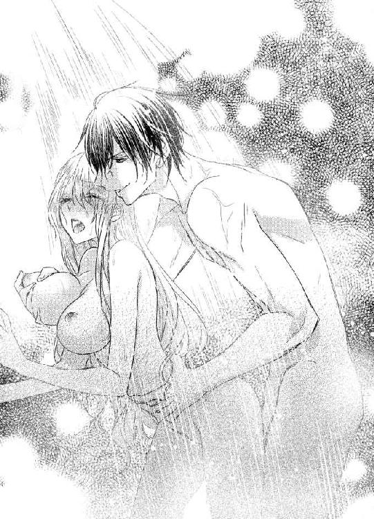
「気持ちいいんだろ」
ガイアスは、エミリアの耳たぶを甘噛みした。
「俺に貫かれて、乳首いじられて、頭が真っ白になるぐらい、気持ちいいんだよな」
たしかに、そのとおりなんだけど。
認めたくない。
うなずきたくない。
意地を張りつづけていたい。
エミリアは、ぎゅっとタイルに手を押しつけた。
せめて、自分の足で立っていたくて。
さっきみたいに、しゃがみこみたくなくて。
強く強く、手に力を込める。
何度もこすられて、貫かれて、上下に動かされて。
手が滑りそうになっても、意地でもとに戻す。
ガイアスが中に注ぎこむまで、ずっと、そうしていた。
ガイアスの温かいものを感じながら。
勝った、と思った。
何にかはわからないけど。
勝った、と。
「おはようございます」
メイドのあいさつに、エミリアはうすく目を開けた。昨日は、結局、シャワールームを出たあとも、三回された。おかげで、本も読めずに、引き込まれるように眠りに落ちたのだ。
「...おはよう」
メイドに、いかにもセックスしました、という姿を見られるのは恥ずかしい、という気持ちは、いまでもある。でも、どうしようもないから、平気なふりをすることにした。
ガイアスが、いままで、だれともセックスをしてないわけがない。だって、あんなに慣れているのだ。
ということは、メイドたちだって、こんな状況は見慣れている。
ちくん。
なぜか、胸が痛んだ。
どうして？ やっぱり、裸でシーツにくるまっているこの格好が、まだ恥ずかしいの？
「朝食...というよりは、おめざを持ってきました」
「おめざ？」
初めて聞く言葉だ。
「ええ。うちでは、朝に甘いものを食べることを、おめざ、と呼ぶんです。糖分が脳にすばやく吸収されて、頭が働くようになるからなんですって」
「めざめる、という意味なのね」
なんか、かわいい。
「昨日、ガイアス様が買ってきた、イチゴのショートケーキを持ってまいりました。エミリア様、お好きなのに、昨日、食べられなかったでしょう」
「あ、嬉しい！」
エミリアは、わーい、と飛び起きかけて、自重する。だって、裸を見られてしまう。
もちろん、初日にお風呂に入れてもらったから、さんざん見られてはいるんだけど、セックスの痕跡が残っている姿は、さすがにさらしたくない。
「ケーキには紅茶かと思いまして。ちょうど、ダージリンのいいのがありましたので、淹れてあります」
「ありがとう！」
今日は紅茶の気分だったから、嬉しい。
「それでは、ごゆっくりとどうぞ」
メイドが頭を下げて、出ていこうとする。それを、エミリアがとめた。
「ねえねえ、ガイアスって、どんな人？」
ずっと近くにいたメイドたちは、ガイアスのことをよく知っている。だから、聞いてみた。
でも、どうしてそんな質問をしたのかは、自分でもよくわからない。
ガイアスのことを知りたいの？ 好きでもないのに？
「どんな人、と申しますと？」
「なんで、伯爵になりたかったのかな、って」
だって、伯爵なんて、ただの名目だ。エミリアの父親のように、多額の借金を抱えて、その肩書を売らざるをえない貴族なんて、たくさんいる。いまどき、伯爵だからといって、特に何も優遇されたりなんかしない。
「あの子は、気が強くてですね」
メイドは、愛おしそうに目を細めた。
あの子。
その呼び方とあいまって、まるで、お母さんかお姉さんのように見える。メイドは、もしかしたら、その両方を兼ね備えるものなのかもしれない。
「小さいときは、お山の大将でした。自分が一番強くて、一番かしこくて、一番えらいんだ、と宣言していたんですよ」
「ガイアスらしい」
エミリアは、くすりと笑う。いまと、まったく変わらない。
「そうしたら、でも、おまえの家、貴族じゃねえじゃん、って。なんだかんだ言っても庶民なんだから、彼のほうがえらいんだ、と、貴族の腰ぎんちゃくにケンカを売られたんですよ」
「貴族なんて、たいしたことないのにね」
ただ、そこに生まれただけ。
強く、かしこく、えらくなるためにがんばっているほうが、よっぽどすごい。
「そうなんですよ。あ、エミリア様に含みがあるわけじゃないですよ」
メイドは慌てて否定した。エミリアは、いいの、いいの、と笑う。
「思い出して。うちの父親は、借金で首が回らなくなって、その称号を売りだしたのよ。そのぐらい、貴族ってダメな人間なの」
「ノーコメントとさせていただきます」
メイドは頭を下げると、つづけた。
「で、負けずぎらいのガイアス様は、じゃあ、なってやる、と宣言したわけですよ。子供ですからね、貴族のなりかたなんて知らないんです」
「笑われたの？」
「それはもう、爆笑されたようです。おまえみたいな庶民が貴族になんて一生なれねえよ、もしなれたら、土下座してやる、って。そりゃ、そうですよ。そのとき、うち...あ、ガイアス様のご家族ですね」
メイドは訂正する。ずっとめんどうを見ていると、自分も家族の一員のような気分になるのかもしれない。
「ガイアス様のおうちは、ちょっとだけお金持ちだったんです。お父様が始められた会社が、とてもうまくいってまして。だから、もっと金持ちになりゃ、貴族になれるだろ、と軽く考えていたようなんです」
いいなあ、その心意気。何も知らないのにケンカを買う度胸。
エミリアは楽しくなってきた。
なんだか、冒険譚を読んでいるときのような高揚を覚える。
「じゃあ、俺は二十五歳までに貴族に、それも伯爵になってやるから、土下座しろ、もしなれなかったら、財産すべて、おまえにやる、って」
「すごいすごい！」
エミリアは、ぱちぱち、と拍手をした。
「ガイアス、かっこいい！」
「わたくしたちは、真っ青になりましたよ。だって、伯爵になるにはお金が足りなさすぎましたもの」
たしかに。エミリアの売値からもわかるように、爵位を、それも伯爵の称号を買うのは膨大な資産を持っていないとむずかしい。
「でも、すごい！」
「本人は、伯爵にどうやったらなれるのか、父親から聞いて、真っ青になってましたけどね」
メイドは、ふふっ、と笑う。そのときのことを、思い出したのかもしれない。
あれ、でも、ガイアスがそんなに幼いころからずっと仕えているとしたら、このメイドさん、かなり年をとっている計算になるんだけど、どう考えても、ガイアスよりも少し年上ぐらいにしか見えない。
あとから話を聞いたのかな。うん、たぶん、そう。
「まずは金を稼ぐ！ と父親に資金を出してもらって、十八歳で起業しました。全世界をつなぐ運送業でしたかしら。わたくしも、よくはわかってないんですけど。当たったらでかい、ダメだったらどん底、という、博打のような会社の経営で、なぜか、とんとん拍子にうまくいって、気づいたら、とんでもない額の資産を手にしていたんです」
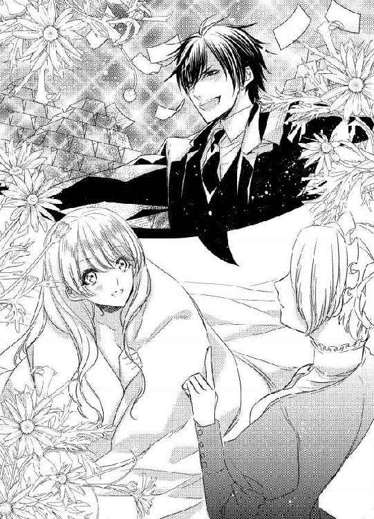
きっと、博打なんかじゃない。ガイアスには勝算があったのだ。
だって、負けずぎらいなんだもの。そのぐらいは、計算しているはず。
「それで、それで？」
「売りに出されるのをじっと待つガイアス様じゃありませんから、どこかに婿入りの話があれば、もちろん、売り込みに行きますよ。ただ、ガイアス様は、若いころから遊んできたせいか、女性を見る目が厳しくてですね。まず、不細工はダメなんです」
「ガイアスらしい！」
エミリアは、バンバン、とベッドをたたきながら、大笑いする。
「目的がまちがってる！ だって、伯爵の称号さえ手に入れれば、自分をバカにした人を土下座させられるのに！ 不細工だって、いいのに！ もしかしたら、顔がダメなだけで、すっごいいい子かもしれないのに！」
「わたくしたちも、注意はしましたよ、もちろん。人を顔だけで判断するな、って。そうしたら、伯爵でいるためには、一生、そいつと添い遂げなきゃならねえんだから、好きな顔ぐらい選ばせろ、と」
「結婚だけして、外で遊べばいいのに！」
だめだ、おかしすぎる！
「ほら、パーティーに出席するときは、夫婦そろってじゃないですか。そのときに、隣に不細工がいるのが耐えられない、と」
「美人ばっかり相手にしてきたんだろうから、しょうがないかもね」
だったら、エミリアに対する、まあまあ、という評価も、そんなに悪いものじゃないのかもしれない。
「ほかにも、スタイルがよくて、胸が大きいこと。自分の意見をきちんと持っていること。親孝行であること、などなど。そんな子が簡単に見つかるわけがないですし、いたとしても、そんな素敵な女性、すでに嫁ぎ先が決まってると思いません？」
たしかに、そのとおりだ。性格はきつい、という評判のエミリアですら、美人だから、かなりの人数から求婚されていた。そのときは、借金を抱えていなかったから、強気に出て、すべてを断ったものだ。
だって、まだまだ結婚するつもりはなかったし。
そのあと、エミリアの家が没落したら、蜘蛛の子を散らしたように、全員がいなくなった。つくづく、妥協して、だれかを選ばなくてよかったと思う。一緒に借金を返してくれるような根性のある男は一人もいない、ということだから。
とにかく、美人なだけでも、いろんな男性から求められる。
美人で、性格がよくて、スタイルがいい伯爵の娘なんて、とてもガイアスには手が届かない。
なのに、そんな相手を探しつづけた。
その強気さが、おかしくてしょうがない。
「ホント、ガイアスはぜいたくね」
笑いすぎて、涙が出てきた。二十五歳までに伯爵の称号を買うか、伯爵家に婿入りしないと、全財産を失うというのに、そんな高望みする人、見たことない。
「もう、わたくしたちはあきらめました。あの子が稼いだんだから、失うのも自由だ、って。でも、そこに奇跡が起きたんです」
「うちが売りに出た、と」
最後のチャンスだ。不細工だなんだと、言ってられなかったはず。
だから、結婚式の日、不本意そうに指輪を投げてよこしたのだ。
俺は、もっともっと上を目指してたんだぞ。
そう言いたかったのかもしれない。
「ギリギリでした。そのうえ、エミリア様が、ガイアス様の理想どおりの人だったんですから、運命としか思えないですよね」
けっして、理想どおりなんかじゃない。でも、それをはっきり言わないやさしさに、エミリアは心の中で感謝する。
「ガイアスはね、結婚式でわたしを見たとき、まあまあだな、って言ったのよ。美人だな、とか、理想的だな、じゃなくて、まあまあだな。わたし、自分のことを多少なりとも美人だと思って生きてきたから、驚いたわ。特に、ガイアスのことを、かっこいい、って思っちゃったあとだから、なおさら悔しくて。結婚式で、神様に誓ったの。ガイアスのことを、一生、大っきらいでいます、って」
メイドが息をのんだ。
「...本気ですか？」
「そのときは、ね」
エミリアは、いたずらっぽく笑う。
「だって、悔しかったんだもの！ でも、図書室を作ってくれたり、ケーキを買ってきてくれたり、わたしが読みたくてしょうがなかった本のつづきを探してくれたり」
それだけだろうか。たぶん、そうじゃない。
結婚式で、一目会った瞬間、かっこいい、と思った。
とても好みだと、感じた。
この人になら嫁いでいい、と、ちょっと嬉しかった。
あの気持ちが、消えていないのだ。だから、少しやさしくされただけで、ほだされてしまう。
ああ、もう、認めてしまおう。
大好き、もウソじゃない。
あのとき、本当に、大好きだと思った。
こんなことをしてくれるなんて、すごくすごくかっこいい、とも。
悔しいなあ。
エミリアはこっそり指を鳴らす。
ガイアスは、まあまあの女、としか認識してないのに。
それなのに、ガイアスのことを好きになっちゃうなんて。
「いまは、ガイアス様のこと、少しはお好きですか？」
「少しだけね。好きというか、きらいじゃない、って感じかな」
だから、このぐらいの意地を張ってもいいよね？
「そうですか！」
メイドは、ぱっと顔をほころばせた。
「ガイアス様は、いいかたですから！ これからもっと知るにつれて、ますます好きになりますよ」
「どうかなあ」
エミリアは首をかしげる。
そうじゃなければいい。だって、自分ばっかり好きになるなんて、そんなの悲しすぎる。
「使用人にも親切なので、みんな、辞めないんです。お金持ちの家って、使用人がころころ変わるって、よく言うじゃないですか？ でも、うちは、ずーっといるんです」
「あ、たしかに」
エミリアはうなずいた。雇い主がわがままばかり言っていると、我慢できずに辞めてしまう。そして、残念なことに、性格の破綻した金持ちというのは、かなりいるのだ。雇い主自身に問題がなくても、自分の能力に見合った給料を出さなければ、有能な使用人はとっとと逃げてしまう。
メイドが言うように、だれも辞めないのであれば、ガイアスは理不尽な用事を言いつけることもなく、使用人が満足するだけの給料を払っているのだろう。
「わたくしたちは、みんな、ガイアス様のことを尊敬しているんです。ですから、エミリア様もできれば、ガイアス様のいいところを見てあげてください。無理に、とは言わないですけど」
もう見つけてる。
だから、好きになったのだ。
だけど、言わない。ガイアスにばらされたら困る。
爵位を持ってるだけの、まあまあな女。
そんな相手から好意を寄せられたって困るだろう。
「それに、せっかく結婚したんですから、きらいになるよりは好きなほうがいいじゃないですか」
「...そうね」
エミリアはうなずいた。
そうか、結婚したんだ。
そう考えた瞬間、ほわん、と胸の中が温かくなった。ガイアスにとっては、伯爵になりたいがための結婚で、エミリアに恋焦がれてプロポーズしてきたわけでもなければ、これから先もずっと一緒にいたい、なんてカケラも思ってないだろうけど。
ガイアスの奥さん。
その響きは、なんだか、すごく心地いい。
「じゃあ、好きになる努力をしてみるから、ガイアスについて...」
もっと、いろいろ教えてくれない？
つづきは言えなかった。
「それではケーキをお楽しみください」
エミリアとほぼ同時に言葉を発したメイドが、ぺこりと礼をして、部屋を辞そうとしているからだ。
「え、ちょっと、どうしたの？」
いつも、もっとおしゃべりするのに。
「すみません、用事を思い出しました。それでは、ケーキをお楽しみください」
メイドはもう一度、頭を下げると、急いで部屋を出ていった。残されたエミリアは、ぽかん、とそれを見送る。
「ま、いいか...」
用があるのなら、しょうがない。本だけ読んでいればいいエミリアとちがって、仕事はたくさんあるはずだし。
でも、できれば、もう少しガイアスのことを聞きたかった。伯爵になってやる、と宣言するほどの無謀なことじゃなくても、ほかにも楽しい昔話がたくさんありそうだ。
「残念ね」
そう思うことが、すでに、ガイアスに魅かれている証拠だ。
それがとても悔しくて、でも、ちょっとだけ楽しい。
だって、メイドが言っていたように、これからしばらく一緒にいる相手を、きらいよりは好きになったほうがいいから。
「まあ、いいか。今度、聞けばいいし。それよりも、せっかく持ってきてくれたんだから、ケーキ食べようっと」
エミリアは目の前に置かれたワゴンから、ケーキのお皿を取ると、ヘッドボードに体をもたせかけた。フォークで先端を切って、ひとくち食べると、イチゴの酸味と生クリームのほどよい甘さが、口の中でハーモニーをかなでる。
「おいしい！」
エミリアは目を細めた。紅茶を飲むと、ますますおいしさが広がる。あっという間に食べ終えて、エミリアは、昨日、読めなかった本に手を伸ばす。
「おいしいケーキのあとに、おもしろい本。あー、すごく幸せ」
エミリアは微笑んだ。
あの最悪だった結婚式を思い出すと、とても意外だけれど。
エミリアは、心から幸せを感じていた。
５
気づいたら、紅茶が空だった。あまりにもおいしくて、飲み干してしまったのだ。
「おかわりもらおうっと」
本は、まだ半分。人食い族を口先三寸でだまして、うまく逃げのびてほっとしたのに、今度はピラニアやワニのいる川を、どうにかして渡らなければならない。いまは、そのための思案をしているところ。
このお話、本当におもしろい！
紅茶を飲みながら、つづきを読みたくて。エミリアは、ガウンをはおって、スリッパを履いた。やわらかい毛のついた生地でできているスリッパは履き心地がよくて、エミリアのお気に入りだ。軽くて、足音も響かない。毛皮のような感触なので、これを履いているだけで、どこかのお姫様になったような気分になる。
...ガウンしか着てない時点で失格だけど。
螺旋階段を降りて、キッチンへ向かおうとしたら、大きな声が響いた。
「ウソついてんじゃねえよ！」
エミリアはびっくりして、その場に立ち止まる。ガイアスの声だと気づくまで、少し時間がかかった。
そのぐらい、いつもの余裕がある態度とはちがったから。
電話でもしてるんだろうか。だったら、盗み聞きするのもいやだし、またあとから出直してこよう。
エミリアが部屋に戻ろうと、くるり、と方向を変えたら、意外なものが聞こえてきた。
「なんで、あたしがウソつかなきゃなんないのよ」
どうやら、ガイアスは電話をしているわけじゃなかったらしい。きちんと、話しかけた相手がいる。
でも、疑問がひとつ。
これ、だれ？
エミリアは眉間に皺を寄せた。
このお城に住みこんでいるのは、メイドが四人とコック長、庭師がそれぞれ一人ずつ。執事や、ほかのメイドもいるらしいけれど、あまりに大人数だとエミリアが気を遣うだろうから、休んでもらっている、とのことだった。
なのに、ほかの女の声。
あ、もしかして...。
エミリアは、こっそりと声のするほうに向かう。こういうとき、このスリッパだと足音がしなくていい。本当に有能だ。
「エミリアは、あんたのことを気に入ってんの」
「それは、おまえの幻想だ」
え、何、どういうこと!?
エミリアの頭の中が、真っ白になる。
なんで、ガイアスにそんなことをばらしてるの!? っていうか、エミリアのことを知ってるって、この人、いったいだれ!?
「だから、そろそろ、あたしたち、いなくなったほうがいいと思うの。だって、あたしたちとあんたの関係がばれたら、エミリア、怒ると思うよ」
あたしたちとあんたの関係...。あたしたち、と複数形で表現できるのは、あの四人しかいない。そう考えてみると、しゃべりかたはまったくちがうけど、声に聞きおぼえがある。
そもそも、おかしいと思ったのだ。顔がそっくりなメイドが四人いるなんて。だいたい、四人そろえるだけで大変だ。そのぐらい、ガイアスはあの顔が好みなのだろう。
エミリアとは、まったくちがうタイプ。
そう考えただけで、胸が、ずきん、と痛んだ。
メイドは、エミリアはガイアスの好みだと言った。笑顔で、そう告げた。
バカにしていたのだろうか。
エミリアは、ぎゅっと唇を噛む。
あんたなんか、ガイアス様にふさわしくないわよ。だって、ぜーんぜん好みにはずれてるからね。でも、あんたもまたご主人様になったから、お世辞でも言わなきゃしょうがないわ。
そんなふうに心の中では思っていたのだろうか。
仲良くなれたと喜んでいたのはエミリアだけで、メイドたちにとっては、エミリアはただの邪魔な存在でしかなかったの？
エミリアがお嫁さんとしてやってきて、自分たちは愛人に格下げになった。
それを恨んでる？
そう、もうわかっている。好みの女性を四人も集めて、ガイアスが手を出していないわけがない。
恋人だったのだ、四人とも。
いや、いまも恋人なのかもしれない。エミリアがいてもいなくても、関係ない。いつか、エミリアに飽きて、自分たちのところに戻ってくる。
そう確信しているのだろう。
エミリアだって、おなじことを思っていた。
どうせ、いつか、エミリアに飽きる日が来る、と。
最初は、それが待ち遠しかった。でも、いまは怖い。
ガイアスに見向きもされなくなる日が、怖くてしょうがない。
...ガイアスのことが好きだから。
メイドたちも、おなじ気持ちなのだろう。立場は、エミリアのほうが強い。エミリアと離婚してしまえば、ガイアスは爵位を剥奪されることになる。
ガイアスのために、いまは離れていよう。
エミリアが気づく前に。
自分たちとの関係を知る前に。
しばらく雲隠れしていよう。
その話し合いをしている最中なのだ。
もし、この場に立ち会わなかったら。いつの間にか、メイドたちがいなくなっていたら。
エミリアは、あの人たち、どうしたの？ とガイアスに質問していただろう。休ませてる、と答えられたら、それをそのまま信じたはず。
裏で笑われてるとも知らないまま。
カッと頭に血が昇った。
さっき、メイドがさっさと立ち去ったのは、エミリアがガイアスに好意を抱いたのを知って、修羅場になるのを避けるべく、このお城から出ていく準備をしようとしたのかもしれない。
きっと、そうだ。
そして、ガイアスに言い聞かせて、でも、四人を失いたくないガイアスは信じたくなくて。
だから、最初の、ウソをつくな！ という悲痛な叫びになったのだ。
冗談じゃないわ。
エミリアの血が、ふつふつと煮えたぎる。
本当に本当に本当に、冗談じゃないわ。
図書室とケーキと本で、何もかもごまかせると思うんじゃないわよ！
「ガイアス！」
エミリアは、声のするところへ飛び込んだ。
すべてを聞いた、と告げたくて。
バカにするのもいいかげんにして！ と怒鳴りたくて。
何よりも、メイドたちを許せなくて。
だって、まるで友達みたいだ、と思ったのだ。
もちろん、立場がちがうから、本当の意味での友達にはなれなくても。雇い主と使用人、じゃなくて、もっとちがう何かになれたと思っていた。
でも、それは、エミリアのかんちがいで。
そして、そのこともきっと、バカにされている。
さっきまで、あんなに幸せだったのに。
いまは、ただただ悔しくて、そして、最上級に怒っている。
「エミリア！」
ガイアスだけじゃなくて、何人もの声が重なった。
...あれ？ 今日、メイド一人だったよね？ なんで、こんなに前後左右から聞こえるの？
エミリアは、きょろきょろと周囲を見回す。
どうやら、エミリアが入ったのは、貯蔵庫だったらしい。食品棚が置いてあって、パスタや缶詰などが並べられている。
だけど、そんなことを考えられたのは一瞬。そのあとは、驚きに目を見開いてしまう。
だって、そこにいたのは、高級なドレスを着た四人の女性。メイドたちなんて、どこにもいない。そして、ガイアスは、その四人に囲まれて、ぽかん、と口を開けている。
「あれ、メイドさん...」
エミリアは首をかしげた。さっき聞いたのは、たしかにメイドの声だったのに、いったい、どこにいったんだろう。人数だけならあっているけど、ここにいる四人は、あのメイドに似てもいない。
全員がちがった色のドレスを着て、髪型もバラバラ。でも、どことなく雰囲気は似ている。
「いや...ちがう、これは...」
ガイアスがしどろもどろになっている。
こんなガイアス、初めて見た。
いつだって自信満々で、意地悪ばかりしていたくせに。
エミリア以外の前だと、こんなになるんだ。
そして、わかる。
この四人が恋人なのだ、と。
エミリアにまったく似ていないこの人たちを、ずっと愛してきたのだ、と。
理解した瞬間、エミリアは貯蔵庫を飛び出した。
これ以上、ガイアスの恋人たちと一緒にいるのが耐えられなくて。
好きなのは自分だけだった、という事実を突きつけられたくなくて。
エミリアは走った。
お城の外に向かって。
ただ、まっすぐと。
あとちょっとで城門に着く。それを出てしまえば...。
そこまで考えて、はっと気づいた。
「そうか、一本道だ」
エミリアは絶望的な気分で、つぶやく。
城門の外には、車が二台、どうにかすれちがえそうな狭い道路しかない。たまたま、車が通りかかれば、街まで乗せてもらうこともできるだろうけど、こんな山奥までわざわざやってくる人なんているわけがない。それが証拠に、ここに連れてこられたとき、一台もほかの車を見かけなかった。
「ううん、あきらめちゃだめ」
エミリアは、ぐっとこぶしを握った。
エミリアの運がものすごくよければ、道に迷った車が、ここはどこなのか尋ねようと、城門の前に止まっているかもしれない。エミリアが城門から出て、街まで案内してあげる、と言えば、喜んで車に乗せてくれるだろう。
「...だめね、わたし、おかしくなってるみたい」
そんなことがあるわけないのに。ずっと、冒険譚を読んでいたからか、そんな想像をしてしまった。
他人の車に拾ってもらうのは、ひとまず、あきらめよう。残る手段は、徒歩。
「どうしよう。歩いて街まで行けないかしら」
エミリアは自分の足を見下ろした。ふかふかのスリッパは、履き心地はいいけれど。長い距離を歩くのに向いてそうには見えない。
そして、それ以上の問題は。
「...なんで、ガウンはおっただけで出てきちゃったのよ」
それも、この下は裸だ。紅茶を取りに行くだけだからいいか、と油断していた。まさか、お城から逃げることになるなんて。
絹で作られたガウンは、体にぴったりまとわりついて、エミリアの体の線を強調する。もし、車が通りかかったとして、それが野蛮な男だったりしたら、何をされるかなんてわかりきっている。
だからといって、男が悪いわけじゃない。こんな格好で歩いているエミリアに非がある。
「こっそりお城に戻って、ドレスに着替えてこようかしら」
ガイアスがすぐに追ってくると思って、必死に逃げてきたけれど。足音なんて、まったく聞こえてこないし、だれかが捜している気配もない。自分でやっといてなんだけど、まさか、この格好で外に飛び出そうとするとは思わないだろうから、庭を捜しているのかもしれない。
もしくは、どうでもいいや、爵位のために結婚したんだし、離婚さえしなきゃ、どこにいてもいいか、と、いまごろは五人で優雅にお茶でも飲んでいる可能性もある。
その光景を想像したら、腹が立つよりも悲しくなってきた。
爵位のため。
それは、最初からわかっていて。納得して、自分を売った。どんな相手でもいいから、借金を消してほしい、と高利貸しのマレットに頼んだのだ。
「あ、そうか、マレット！」
お金のことなら力になるよ。もちろん、利子はたっぷりもらうがな。
最後に会ったとき、そんなことを言っていた。電話番号も教えてもらった。いらないわよ、と言えるような状況じゃなかったから、どこかにしまったはず。
あのメモ用紙は、いったい、どこにあるんだろう。
それを探して、マレットに連絡をとって、ここを出してもらおう。そのための資金は、すべてガイアスに請求してもらう。ガイアスは、喜んで払うことだろう。
エミリアがいなくなれば、愛人四人と楽しく過ごせるんだから。
「勝手にすればいいわ」
エミリアは勝ち気につぶやくものの、その言葉に反して、胸が、ずきずき、と痛む。
ガイアスには、いつも意地悪ばかりされていた。
だから、ガイアスなんて、大っきらい。
自分に言い聞かせるように言いながらも、意地悪しようとたくらんでいるときの目を細めたガイアスの表情を、とてもとても魅力的だと思っていた。
「...もう、やだ」
エミリアだけが、ガイアスを好き。
その事実は、エミリアを打ちひしがせる。
父親が財産をすべてなくして、借金までつくって、エミリア自身を売り物にするしかなくなったときに。
幸せになんてなれない、と覚悟した。
だったら、幸せにならなくてもいい、と決意した。
だって、ガイアスが結婚相手だなんて知らなかったから。
もし、ガイアスがエミリアを好きになってくれたら、幸せになれただろうか。
「...なれたわ」
エミリアはため息とともに、そうこぼして、泣きそうになる。
幸せになりたかった。
ガイアスとともに過ごす幸せが、欲しかった。
だけど、ガイアスが好きなのはエミリアじゃない。エミリアとは似ても似つかない、四人の女性たち。
だったら、ここにはいられない。
あの四人といるガイアスを見るたびに、エミリアの胸が張り裂けそうになるから。
エミリアは、ぎゅっとガウンごと、体を抱きしめた。
もう春なのに。
温かいはずなのに。
体が震えてしょうがない。
悔しいから？ 怒ってるから？
ううん、ちがう。
悲しくて、苦しくて、傷ついているからだ。
エミリアはこぼれそうな涙を必死でこらえて、城門から一歩下がった。いますぐ逃げるのは無理だ。お城に戻って、まずはマレットに連絡をとろう。
くるり、と城門に背を向けたら、そこには、ガイアスと愛人四人が立っていた。
「きゃああああああああああ！」
エミリアは、思い切り叫ぶ。
「なんでっ...ここに！」
足音はしなかった。だから、いつ来たかも知らない。
「なんでって、逃げようと思ったら城門に行くしかないでしょ。だから、追いかけてきたのよ。っていうか、さっきから、ずーっといたんだけど、エミリア、自分の殻に閉じこもって、ぶつぶつ言ってるから、おもしろくて様子を見てたの」
えええええええええ！
エミリアは真っ赤になった。
まさか、見られていたなんて！
「勝手に見ないでくださいっ！」
...あれ、なんで、敬語使ってるの？
エミリアは、疑問に思う。エミリアよりも年上だとしても、相手は愛人で、ガイアスをエミリアから奪って...。
ちがう、エミリアが、妻の座を奪ったんだ。
ずーん、と落ち込みそうになる気持ちを、エミリアは、どうにか奮い立たせる。ここで、ショックを受けてるところなんて見せたら、あとから、みんなで笑いものにするにちがいない。
背筋を伸ばして、毅然としていよう。大丈夫、パーティーでは、いつだって、そんなふうにふるまっていたんだから。
負けない。だから、敬語なんて使わない。
「あなたたちの言いたいことは、わかってるわ」
エミリアは、つん、と顔をそらせた。
自分たちの関係がばれたからには、愛人として自由に出入りさせてもらう。
そんな感じの要求をつきつけてくるだろう。
勝手にすればいい。だって、わたしはもうすぐ、いなくなるんだし。
「だから、不毛な話し合いはやめましょう。わたしは、あなたたちのことについて責める気は、まったくないから」
責める資格もない。だって、エミリアと結婚する、はるか昔からのことだ。
「あ、そう。それは、よかった」
一番年上だろう女性が、ほっとしたように息をはいた。
「エミリアって、あんまり細かいことを気にしないのね。そういう性格、好きよ」
なんなの、この人。
エミリアは顔をしかめる。
なんで、呼び捨てにされなきゃならないの。愛人のくせして、すごくなれなれしいんだけど。
「あ、そうそう、名乗ってなかったわね。あたしはコレット。よろしくね」
コレットは、にこっと笑った。
え、どうして、そんな親しげにあいさつするの？ 全然理解できない。
本妻の座を奪われて、エミリアのことを恨んでいるのよね？
それとも、本妻にはなれないから、その点に関してはどうでもいい、ってこと？
「私はアンジェリカ」
「わたし、ミレーヌ」
「わたしはマルチナよ」
つぎつぎと笑顔を向けられて、エミリアの頭が混乱する。
この楽しそうな雰囲気は、なんなんだろう。エミリアなんか相手にもならないから、仲がいいふりでもしとこう、ということなんだろうか。
だめだ、まったくわからない。
「とまどう気持ちも、よくわかるわ」
コレットが、うんうん、とうなずいた。
「そうよね、とまどうわよ」
「わたしだったら、怒るわ」
「わたしは、泣いちゃうかも」
ねー、と四人は顔を見あわせる。
このしゃべりかたを、覚えている。
そうか、やっぱり、この四人はあのメイドたちだ。
どうしてドレスを着ているのか、それはわからないけど。
「でもね、誤解しないでほしいんだけど、エミリアをだまそうとしたわけじゃなくて、ガイアスが心配だっただけ。変な女にひっかからないように、あたしたちみんなで、見張ってたの」
「そうそう、目を見開いてね」
「でも、エミリアはいい子だから」
「お姉ちゃんたちは安心かな、って」
あ、このしゃべりかた、最初に会ったときとおんなじだ。なんか、なつかしい。あれから、一週間ぐらいしかたっていないのに。
そんなことを考えていたからか、気づくのが遅れた。
いま、なんか、とんでもないこと言わなかった!?
「おねえ...ちゃん？」
お姉ちゃんって、血のつながった姉ってこと？ それとも、姉のように接してきた愛人という意味？
「そうよ。ガイアスが末っ子。だから、かわいくて、過保護なのは認める」
「え？ え？ え？」
エミリアは、ぐるり、と四人を見渡した。
ガイアスが末っ子ということは、つまり、全員、血がつながっているということで。
愛人じゃない。
そう理解した瞬間、いろんな感情よりも先に、涙が出そうなほどの安堵を覚えた。
ガイアスは、この四人を愛してはいるけれど、それは家族としてで、別の意味じゃない。
だからといって、エミリアを好きになってくれるかどうかはわからない。でも、競争相手が減ることは素直に嬉しい。
こんなときにすら、最初にそう考えるなんて。
それほど、ガイアスを好きになってしまっているのだ。
でも、いまは、ひとまず、それは置いておこう。
エミリアは四人の顔を、じっと見た。たしかに、メイドのときとはまったくちがう、ほぼ素顔に近いメイクだと、ガイアスに似ている。
あれ、でも、たしか最初...。
「姉妹じゃないって、ウソつきましたね」
言葉が丁寧に戻ってしまったのは、しょうがない。
だって、ガイアスのお姉さんたちなんだもの。
でも、それはそれとして、ウソは暴いておかないと。
初対面のとき、姉妹なのか、と聞いたときに、ものすごい勢いで否定された。あれを信じてしまったから、なんで、他人なのにこんなに似てるんだろう、と不思議に思うだけで、本当は姉妹なのかもしれない、なんて、疑ってもみなかった。
「え、だって、姉妹よ、なんて言ったら、ガイアスと似てるな、と気づかれたときに、すべてばれちゃうでしょ。あたしたちは、伯爵の小娘なんてカケラも信用してなかったから、正体を暴かれるわけにはいかなかったのよ」
エミリアは、コレットをじっと見た、アンジェリカ、ミレーヌ、マルチナ、と視線を移して、ふう、と息を吐く。
「大丈夫です。そんなに似てませんから」
面影はあるけれど、ガイアスほど顔が整ってはいない。というか、ガイアスが完璧すぎるのだ。コレットたちだって、美人とまでは呼べないにしても、十分かわいらしい。
「ちょっと、失礼じゃない、この子」
「生意気よね、ホントに」
「そういうときは、ウソでも、そっくりですね、って言っとけばいいのに」
「ま、でも、そういうところ気に入ったんだけどね」
うわあ、四人姉妹って、こんなにうるさいものなんだ。ちょっと、ガイアスに同情してしまう。ガイアスは、と見ると、まるで、ここにはいません、というように、そっぽを向いていた。
まあ、いい。ガイアスとは、あとからじっくり話そう。
「ガイアスは、あんたに一目惚れだから、点が甘くなるのはしょうがないけど...」
「姉さん！」
ガイアスが叫んだ。
「頼むから、黙ってくれ！」
「あ、そうか。これは、自分で言いたいのね。ま、いいじゃないの。あのね、ガイアスは、あんたに一目惚れなの。こんなややこしいことをした出発点は、そこよ」
「...え？」
コレットは、いったい、何を言ってるんだろう。一目惚れした相手に、結婚指輪を投げたりする？ まあまあだな、とか、毒を吐くの？
ちがうでしょ、絶対。
「けど、甘やかされた伯爵家の小娘なんて、金遣いが荒くて、わがままで、ガイアスを振り回すに決まってるわ。せっかく稼いだ財産を、湯水のように使われたら困るじゃない。だから、あたしたちが、あんたのことを見極めようとしたの。メイドにどんな態度をとるのかで、人間性はわかるから」
なるほど、一応、理には適っている。
やりかたは、どうかと思うけど。
「そしたら、あんた、いい子じゃない？」
「ね、私たちにも普通にやさしくて」
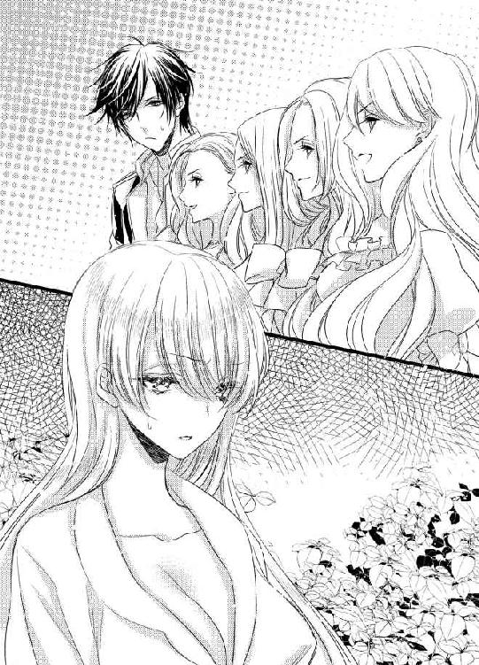
「よけいなこととか頼まないし」
「ずっと遠慮してるし」
ねー、と顔を見合わせているところは、なるほど、姉妹だ。よく似ている。
「だから、もう、よけいな口出しはすまい、って。でも、ガイアスの片思いだとかわいそうだから、ガイアスのいいところを売り込んで、好きになってもらおうとはしてたの。でも、そんな必要はないのよね」
別にきらいじゃありません。
あれは意地を張っただけで、本当は好きなのだと見抜かれてしまったのだろう。
さすが、姉という存在は鋭い。
「というわけで、あたしたちの役目はすんだから、帰ろうとしていたところ」
「その前に、ガイアスに伝えなきゃって、わざわざ貯蔵庫に連れてきたのに」
「いいタイミングで、エミリアちゃんが現れたりするから」
「こんな修羅場になっちゃったのよ。つまりは」
四人が一斉にエミリアを指さす。
「エミリアが悪い！」
いや、悪くないでしょーっ！ わたしは紅茶が飲みたかっただけなのよ！
「まあ、タイミングの問題だから、しょうがないわよね。内緒話を聞かれたことを、あたしたちは広い心で許してあげるわ」
え、なに、この恩着せがましい態度。でも、なぜか憎めない。それどころか、笑ってしまいそうになる。
「だから、私たちのことも許してね」
「てね」
「ね」
四人は足を後ろに曲げるレディのおじぎをした。
「さて、言いたいことも言ったし、ちょうど迎えの車も来たし、あたしたちは自分たちの家に帰るわね」
「ガイアスをよろしくね、エミリア」
「エミリアちゃん、一週間、楽しかったわよ」
「また来るからね！」
そこへタイミングよく車が四台やってきた。四人が順番に一台ずつ乗り込んで、そのまま、城門を出ていく。
いつの間に城門が開いていたのかもわからなかった。残されたエミリアは、呆然と車を見送る。
「...最悪だ」
四人がいなくなった静かな空間で、先に口を開いたのはガイアスだった。
「ホント、最悪。あいつら、最悪。まかせたりするんじゃなかった」
「うーん、でも、お姉さんたちは心配だったのよ」
いざ、ガイアスとしゃべるとなったら、うらみごとを言ってしまうかもしれない、と思っていた。だけど、自然に言葉が出て、普通に話している。
ううん、ちがう。
ガイアスと話せるのが、とても楽しい。
好きって、すごい感情だなあ。
エミリアは、心の中でそっと思う。
こんなふうに、すべてを許してしまえるなんて。
いろんなことがあっても、ガイアスがここにいてくれるのが嬉しいなんて。
「なんでだ」
ガイアスが、ゆらり、と立ち上がった。そのとき初めて、ガイアスが地面にしゃがみこんでいたことに気づく。
驚きすぎて、そして、怒りすぎて、立っていられなかったのかもしれない。
「破産した伯爵家の小娘がお嫁さんになる、って聞いたら、お姉さんたちも、心中穏やかじゃいられなかったんでしょ」
「そうじゃない」
ガイアスは、エミリアをにらみつけた。
ええ、わたし!?
エミリアはびっくりする。
だって、わたし、何もしてないよね!?
「なんで、怒らない」
「怒る？ 何を？」
ガイアスの姉たちにだまされてはいたけれど、それはガイアスを心配しているからで、別に怒ることなんてない。
「おまえを信用してなかったんだぞ！」
「それが普通だと思う」
エミリアは、冷静に答えた。
「だって、逆の立場だったら、ガイアスはどうする？ お姉さんの一人が、伯爵家に嫁入りすることになったら。で、相手の伯爵が破産してて、その借金を肩代わりするのが嫁入りの条件だったら。心配しない？」
「...そりゃ、するけどさ」
ガイアスの声が小さくなる。
「けど、それとこれとは話がちがうだろっ！」
「ちがわないわよ」
エミリアは肩をすくめた。
「お姉さんたちは、わたしの性格を知りたかった。一週間、一緒に過ごしてみて、認めてくれた。わたしは、そっちのほうが嬉しいけどな」
あ、そうか。認めてくれたんだ。
エミリアはほっとする。
あんな小姑四人にきらわれたら、これから先が思いやられる。よかった、気に入ってもらえて。
「じゃあ、俺に怒れよ！」
ガイアスはわめいた。
「俺も、だましに加担してたんだぞ！ なのに、なんで、平然としゃべってるんだ！ 怒って、泣いて、部屋に引きこもるぐらいしてもいいだろ！」
「え、そうしてほしい？」
ガイアスが望むなら、やってあげなくもないけど。その前に、図書室から本を何冊か持ってこないと。ただこもるのは、暇すぎる。
「おまえ、なんなんだよっ！」
ガイアスは頭を抱える。
「姉さんたちは、おまえが俺のことを好きだって断言してたけど。俺は、絶対にウソだってわかってた」
ああ、だから、貯蔵庫で、ウソつくな、と怒鳴ってたのか。
へえ、意外。
エミリアは、ガイアスをじっと見つめる。
もっと、自分に自信があると思ってた。すべての女は俺に惚れるんだぜ、みたいな。
なんか、かわいい。
「好きよ」
だから、真実を告げる。焦らしても、意地悪しても、よかったけど。
ガイアスが一目惚れをしてくれた。
その事実を教えてもらっておいて、自分だけ隠すのは潔くない。
「...へ？」
ガイアスが、すごくびっくりした顔で、エミリアを見た。エミリアは、ぷっと吹き出す。
「鳩が豆鉄砲くらう、って、文章で読んだことは何度もあるけど、なるほど、こういう表情なんだ」
そんなことを言いたくなるぐらい、いつものガイアスとはちがっていた。
「いま、なんて言った？」
何かを恐れているような表情。聞きまちがいなんじゃないか。かんちがいなんじゃないか。
それだけで、わかる。
コレットが言ったことは、ウソじゃない。
「ガイアスが好きよ」
「はあ？」
ガイアスは顔をしかめた。
「なんでだよっ！」
「ええええ！ なに、その反応！ そこは、ありがとう、俺もだよ、ってなるところじゃないの!?」
どうして怒るのか、まったくわからない。
だったら、わたしにだって言いたいことはあるわ！
「だいたい、わたしのことが好きなら、なんで、あんなにいやそうに指輪を渡したのよ！ まあまあだな、なんて、言ったのよ！ あのとき、傷ついたんだからね！」
こっちは、かっこいいと思ってたのに！
「...まぶしかったんだよ」
ガイアスは、はあ、と特大のため息をつく。
「写真だけで一目惚れしたのはいいが、もしかしたら、奇跡的に美人に見えた瞬間を切り取ったかもしれねえだろ。実際に結婚式で会ったら、がっかりするような不細工かもな、という覚悟は決めてた。けどさ、実物はもっと美人とか、卑怯じゃねえか！ そりゃ、俺も、直視なんかできねえ、っての。美人すぎてうろたえてます、なんて、悔しくて言いたくないから、まあまあだな、って、せいいっぱい強がるっての！ もともと、こっちが惚れてんだ！ ちょっとぐらい強気に出たっていいだろ！」
どうしよう。すごく嬉しい。
エミリアは、ガイアスに抱きつきたくなるのを必死でこらえた。
だって、抱きついたりしたら、そのあとすることはきまってる。
でも、もうちょっと知りたいから。
エミリアだって、いろいろ言いたいから。
まだ、ガイアスに触れるのは我慢する。
「わたしは、初めてガイアスを見たとき、すっごいかっこいい、って思った。お金のために自分を売ったんだから、どんな相手でもしょうがない、ってあきらめてたけど、ガイアスならいい、って。でも、指輪は投げられるし、まあまあだな、って暴言吐かれるし、ああ、わたしだけなんだ、って思ったら、すごく悲しくなったんだからね！」
「こんな美人が、俺に一目惚れとか、あるわけねえだろ！ あれだろ、体だろ。セックスがよかったから、まあ一緒にいてやってもいいか、って思ったんだろ！」
「ガイアスだって、おっぱいが大きけりゃだれでもいいんでしょ！ お姉さんのだれかに聞いたわよ！ わたしのおっぱいがちっちゃかったら、一目惚れしてても手放したくせに！」
「俺が、写真でおっぱいをたしかめなかったとでも思うのか!?」
「どの写真か知らないけど、全部、コルセットであげてあるのよ！」
「けど、こんなにでけえじゃねえか！」
ガイアスが、エミリアの胸をつかんだ。
「やっ...」
思わず、甘い声が出て、エミリアは慌てて、ガイアスの手を振り払う。
「触っちゃダメ！ 触るの禁止！」
エミリアは、ガイアスから三歩ほど離れた。なのに、ガイアスは追いかけてくる。
「触ったら、しばらく絶交するからね！ 本気だから！」
エミリアは、ガイアスから逃げた。ガイアスは、エミリアとの間をつめる。
「おっぱい触らせろ」
「いやよっ！」
エミリアは、両手で胸を覆った。これで、触れまい。
「そっちガードしたら、こっちが空くってわかってねえのな」
ガイアスはガウンの下をめくる。下着をつけていないので、下半身が丸見えだ。
「きゃあ！」
エミリアはしゃがみこむ。
「ちょっと！ ダメだって言ってるでしょ！ 話したいことも、聞きたいことも、いっぱいあるんだから！」
「なんだ」
ガイアスはエミリアの手をつかむと、立たせた。
「なんでも答えてやる。聞け」
そう言いながら、エミリアの両手の隙間から乳房に触れようとする。
「だめだってば！」
エミリアは、ぱしん、とガイアスの手を払った。胸から一瞬、離した隙に、ガイアスがもう一方の手を伸ばして、エミリアの乳首を正確に探し当てて、つまむ。
「だめぇ...」
エミリアは体をのけぞらせた。ガウンごしに突き出た乳首を、ガイアスの指が撫で回す。
「あっ...んっ...やぁっ...」
「その、あえぎ」
ガイアスは興奮しているのか、声がかすれている。
「すげーかわいいと思ってた。初めてなのに、ひどく感じて、俺にしがみついて、何回もイッて。絶対に離したくない、って。体だけでもいいから、俺のものにする、って誓った。俺以外じゃ感じない体にしてやる。俺だけに花開いて、俺のために腰をくねらす、そんな女にしてやるからな」
「体だけじゃ...ないのっ...」
もう、やだぁ...。乳首、こりこりしないでぇ...。
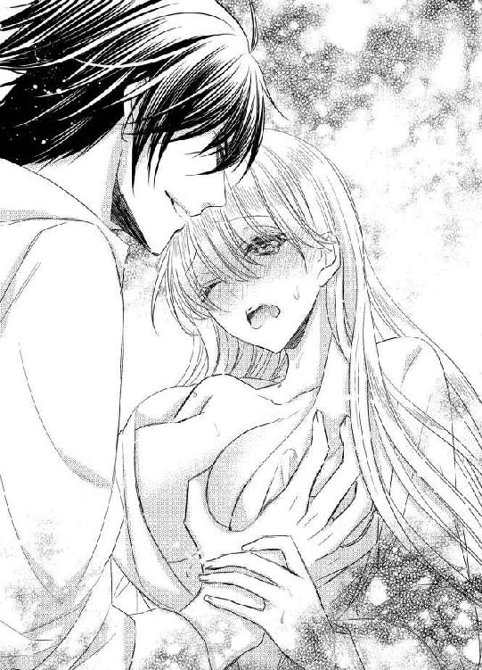
考えられなくなっちゃう。
言いたいことを、忘れちゃう。
エミリアは最後の理性を振りしぼって、ガイアスの手をつかんだ。
「聞いてっ...」
エミリアの迫力に押されたのか、ガイアスは指をとめる。
「わたしは、ガイアスのことが好きなの。ガイアスに恋をしてるの。わたしも、一目惚れだった。ねえ、本が好きってこと、最初から知ってたの？」
「知ってた」
ガイアスは天を仰いだ。
「あのとき、調べたの、って聞かれて、すんげーパニクった。だから、あたふたしてただろ」
「あたふたしてたっけ？」
どっちかというと、バカにされた覚えがある。
「わざわざ図書室作るぐらい惚れてるとか、知られたくなかった」
「ケーキは？」
「ケーキは、ホントに寝言。けど、それを聞いたから、街で一番の店まで行ったんだ」
「ありがとう」
エミリアは微笑んだ。
「すごく嬉しい」
そうやって、エミリアが喜ぶことをしてくれた。
そのことに、とても感動する。
「本は、大変だったでしょ？」
「大変どころの話じゃなかったぞ。コネとツテを、すべて使った。でも、おまえが、読めなくて泣いてるところを想像したら、どうしても手に入れてやりたくてな」
「大好き」
エミリアは、じっとガイアスを見つめた。
「あのとき、ぽろり、とこの言葉がこぼれて。自分でも、すごく動揺したの。だって、あの結婚式のとき、あまりにも腹が立って、あまりにも悲しかったから、一生、きらいでいる、って誓ったのよ」
エミリアは、いたずらっぽく笑う。ガイアスは、うんうん、とうなずいた。
「俺の態度があんまりにもひどかったからな。まあ、それもしょうがねえよ」
いまはエミリアに好かれているとわかったからこその、余裕もあるのかもしれない。ガイアスは、特にショックを受けたようにも見えない。
それが、ちょっと悔しい。
「あ、ちがった」
だから、エミリアは訂正する。
「一生、大っきらいでいる、だったわ」
「いちいち言い直すな」
ガイアスは顔をしかめる。
「こっちもへこむっての」
ああ、よかった。へこんでくれた。
だって、それは、わたしのことを好きだってことでしょ？
こうやって話すと、わかることが増える。
だから、もうちょっと、話していたい。
「結婚式でへこむよりはマシでしょ」
「悪かった」
ガイアスが頭を下げた。
「あのときの俺は、最低だった。おまえが美人すぎて、好みすぎて、どうしていいかわからないからってひどいこと言って、二人きりになった瞬間、むしゃぶりつきそうだったから、友達と飲みに逃げた。まあ、結局、むしゃぶりついたけどな」
「いまも？」
エミリアは首をかしげる。
「わたしに、むしゃぶりつきたい？」
「どんだけ我慢してると思ってんだ。反省してるからこそ、手出してねえだろ」
「許してあげる」
エミリアは、にっこりと笑った。
「だから、むしゃぶりついて」
エミリアは、ガウンの紐を外すと、上半身を露わにする。
「わたしのおっぱい、触りたい？」
「触りたいっていうか、吸いつきてえ」
「好きにしていいわよ」
エミリアは、つん、と胸をそらした。
「ガイアスなら、何してもいい。ガイアスのことが好きだから」
ガイアスはエミリアをじっと見つめると、ありがとう、と告げる。そのあとすぐに、乳首に吸いついた。
エミリアは、ガイアスの頭を抱きしめて。
気持ちいい、とささやく。
ガイアスがしてくれること、全部、気持ちいい、と。
「あっ...やぁ...」
ガイアスが中に入ってきて、エミリアは体をのけぞらせた。ガウン一枚を芝生に敷いた上で、ガイアスと抱き合っているから、背中をやわらかい芝がくすぐる。
ガイアスは、エミリアの髪をそっと撫でた。
「背中、痛くないか」
セックスの最中に、そんなふうに気を遣われるのは初めてで。エミリアは、なんだか恥ずかしくなる。
「...大丈夫」
小さくつぶやいたら、ガイアスがエミリアの額にキスをした。その温かさに、思わず、涙がこぼれる。
「どうした！ 俺が何か...」
「ちがうわよ」
エミリアは涙をぬぐうと、笑顔を浮かべた。
「ガイアスも、やさしくできるんだな、って思ったの」
「おい」
ガイアスが、顔をしかめる。
「まるで、俺が極悪人みたいなこと言うな」
「だって、意地悪ばっかりされてたから」
エミリアがいたずらっぽく言うと、ガイアスは首をかしげた。
「意地悪なんか、した覚えねえけどな」
「うそばっかり」
エミリアは肩をすくめる。
「いやらしいベビードールばかり着せてたくせに」
「アホか。あれは意地悪じゃない。趣味だ」
にやりと笑うガイアスを、エミリアは、ドン、と強めにたたいた。
「もっと悪いじゃない！」
「なんでだ」
「だって、趣味なら、これからも変わらない、ってことでしょ」
想いが通じ合って、意地悪をされることもなくなる、とほっとしてたのに。
「いや、それはねえな」
ガイアスの言葉に、ほっとしたのもつかの間。
「もっとエスカレートすることはあっても、現状のままってことはない」
堂々と言ってのけるガイアスを、エミリアはあぜんと見つめる。
「だって、おまえ、Ｍっ気あるだろ」
最初、何を言われているのかわからなかった。意味を理解した瞬間、エミリアは叫ぶ。
「バッカじゃないの！」
Ｍって、マゾってことよね!? そんなわけないじゃない！ だれに聞いたって、わたしのことを、気が強い、って表現するのに！ どっちかというとＳよ！ そうに決まってるわ！
「あ、気づいてねえのか」
ガイアスは、ふーん、とうなずいた。
「なるほどな。これから調教するのもおもしろそうだ」
「抜きなさい！」
エミリアは、ガイアスの体を両手で押し返す。
「今日は、もう、しない！ わたしは怒ってるんだからね！」
「ま、いいけど、抜いてやっても」
ガイアスは、あっさりと承諾した。もっとごねられると思っていたエミリアは、拍子抜けする。
まあ、やめてくれるなら、それでいいんだけど。
「そのかわり、俺が抜くとこ、ちゃんと見とけよ。目をそらしたら、逆に押し込んでやるからな」
何それ！ そういうのが意地悪だって言ってるの！
でも、口には出さない。いやがってるところなんて見せたら、ガイアスを喜ばせるだけだ。
「いいわよ」
エミリアは、ふん、と鼻を鳴らした。
この勝負、絶対に負けない。
「よし、じゃあ、見えやすいように、腰あげるぞ」
どういうこと、と問いかける前に、両足を大きく広げられて、ぐいっ、と背中が浮くほど持ちあげられる。視線を向けるだけで、つながっている部分が、いやでも目に入ってきた。
この男は！
エミリアは、ぎゅっと唇を噛む。
本当に本当に本当に意地悪なんだから！
いくら好きな相手でも、許せないことだってある。負けたくないときもある。いまがそうだ。
いいわよ。
エミリアは、ぐっとこぶしを握りしめた。
じっと見ててやるから。だから、ちゃんと抜きなさいよ！
「ゆっくりいくぞ」
ガイアスはエミリアの目を見つめている。そらした瞬間を見逃さないように、だろう。
でも、おあいにくさま。そんなこと起こらないから。
すべて胸のうちなのは、言葉尻をとらえられて、変なふうに解釈されるのを避けるため。悔しいことに、ガイアスはとても頭が切れる。エミリアに意地悪するためなら、なおさらだ。
だから、黙っておく。そのほうが安全だ。
ガイアスは、ぐるり、と腰を回した。そうすると、膣壁をガイアス自身が刺激する。
「やっ...！」
エミリアの唇から、甘い声がこぼれた。慌てて、ごまかそうとわめく。
「ちょっと！ なんで、変なふうに動くのよ！ さっさと抜きなさいよ！」
「入れっぱなしだったから、おまえん中、ちょっと渇いてんだよな。そういうときは、まっすぐ抜くより、回しながらのほうが楽なわけ。ネジとおんなじだ」
「え...そうなの...？」
エミリアは眉をひそめた。こういうのは、経験がないぶん、本当かウソかの判断ができない。
「そうなんだよ。おまえは平気でも、俺は痛い」
そう言われたら、無理はさせられない。
「...わかったわ」
エミリアが承諾すると、ガイアスが腰を、また、ぐるり、と回した。エミリアの感じる部分を、ガイアスのもっとも太い箇所が刺激する。
「あっ...あぁっ...」
エミリアは体をのけぞらせそうになるのを、慌ててこらえた。目をそらしたら、入れられてしまう。
ガイアスは膣壁をくまなく愛撫しながら、少しずつ腰を引き始めた。埋まっていた根元の部分が見えてきて、エミリアは息をのむ。
いままでも、何度も目にしていたけれど。こうやって、自分の中に入っている様子を見るのは初めてだ。
ぱっくりと開いたエミリアの入り口に突き刺さっているガイアス。
それは、想像以上にいやらしくて。
太陽がさんさんと照っている中で、すべてをさらけ出している。
そのことを、唐突に思い出した。そして、すごくすごく恥ずかしくなる。
いつも、あんなふうになってるんだ。それを、ガイアスに見られてるんだ。
そう考えただけで、顔が真っ赤になるぐらいの羞恥を覚えるのに。体の奥が、きゅん、となって、全身に淡い快感が駆けめぐった。
だめよ、エミリア、しっかりしなさい！
エミリアは、自分を叱咤する。
こんなことされて、気持ちいいわけないんだから！ 恥ずかしさと快感を、ちょっと混同しているだけなのよ！
ガイアスはエミリアから目をそらさずに、本当に少しずつ、自身を抜いていく。入り口の襞までもこすられるようになって、エミリアの腰が自然に左右に揺れた。
やだっ...わたし、こんなことを...。
思わず、ぎゅっと目をつぶってしまった。それを見逃さず、ガイアスが一気に奥まで突き入れる。
「いやぁぁっ...！」
全体をくまなく愛撫されていた膣壁は、それだけの刺激で十分だった。エミリアは叫びながら、絶頂に昇りつめる。
びくん、びくん、と体を震わせると、ガイアスがエミリアの乳房をぎゅっとつかんだ。
「ほら、だから、Ｍだっての。いやらしいことをさせられたり、命令されたり、卑猥なことを言われたりすると、おまえは感じるんだ」
「ちがうっ...！」
エミリアは首を左右に振る。
そんなわけがない。だって、わたしは勝ち気で強気な女なんだもの。
「エミリアの乳首、かっちかちにとがってんぞ。触ってもねえのに、エロい女だな」
ガイアスの、その言葉なんかに反応しない。体の中が、ぞくぞく、となったりなんかしない。
絶対に、してやらない。
「つまんでやろうか」
ガイアスの顔が近づいてきて、エミリアの耳元でそうささやいた。ふっ、と息を吹きかけられると、エミリアの唇からあえぎがこぼれる。
「んっ...やっ...」
「くりくり、って、乳首いじってやろうか。きゅっ、って引っ張って、左右に揺すってやろうか。とがりきったところを、指で上下に弾きつづけてやろうか」
されているところを想像したら、エミリアの全身が熱くなった。
...してほしい。
でも、認めたくない。
「あ、いま、中が、すげー勢いで俺を締めつけた。されたときのこと、考えただろ」
エミリアは首を振る。もう、それしかできない。
だって、口を開いたら甘い声が漏れる。
「して、って言え」
ガイアスが、エミリアの耳たぶを噛んだ。それだけでも、気持ちよくてたまらない。
「いつもみたいに、かわいい声で、俺にねだれ」
「わたしは...マゾじゃないわっ...」
エミリアは、キッとガイアスをにらむ。ガイアスが目を見開くと、それから、声をたてて笑った。
「そんなことを気にしてたのか。ったく、気位の高い女だな。わかった、おまえはマゾじゃない」
ガイアスの訂正に、ほっとする。
「ただの淫乱だ」
「ちがっ...！」
そんなの、マゾよりも、もっとひどい。
ガイアスを殴ろうとしたら、それより先にささやかれた。
「俺だけの、かわいくて淫乱な花嫁だ」
その響きが、あまりにも甘くて、やさしかったので。
...それならいいかも。
エミリアは思う。
ガイアスだけに花開くのなら、かまわない。
ガイアスのためにいやらしくなるのなら、それは嬉しい。
だけど、すべてガイアスの思いどおりになるのは悔しいから。
「...知らない」
エミリアは、ふい、と顔をそむけた。ガイアスがエミリアのあごに手をやって、正面を向かせると、激しい口づけをする。
舌を絡められて、口腔内を犯されて、エミリアはそれを全部受け入れた。ガイアスの背中に手を回して、ぎゅっとしがみつく。
「言え」
ガイアスは唇を離すと、じっとエミリアを見つめた。
「俺が欲しいって、その唇で伝えろ」
ガイアスも不安だったりするのだろうか。だから、エミリアから言葉を引き出したいのかもしれない。
だったら、これ以上、意地を張らなくてもいい。
「ガイアスが...欲しいっ...」
ガイアスの茶色い瞳をまっすぐ見つめ返して、エミリアは告げた。ガイアスの指が、乳首を強くつまく。
「あぁん...そこっ...いいっ...」
ふるふると指で揺らされて、乳首がどんどんとがっていく。乳房を揉まれると、もっと快感が強くなる。
「おまえは、全身が性感帯だな」
ガイアスはにやりと笑いながら、とまっていた腰を、再度、動かし始めた。奥を小刻みに突かれて、ぬちゅ、ぬちゅ、と濡れた音がどんどん大きくなっていく。
「やっ...ガイアスッ...すご...感じるのっ...」
「だろうな」
ガイアスは満足そうだ。
「俺のを離すまいと、絡みついてきやがる」
「ガイアスは...？」
エミリアは尋ねた。
「気持ちいいに決まってんだろ」
ガイアスはエミリアの頬を撫でると、またキスをくれる。さっきとはちがう、なだめるようなやさしいキス。
それだけで、安心できる。
「おまえに会ったときから、おまえの全部に夢中なんだ」
「ガイアス...大好きっ...」
エミリアは、ガイアスにあわせるように、自分も動きだした。こうすると、もっともっと、気持ちよくなれる。
「俺もだ、エミリア・アッカーソン」
名前を呼ばれて、エミリアは首を左右に振った。
「エミリア・アッカーソン・マードックよ」
結婚したら、苗字はふたつになる。そうしなくても、別にいいんだけど。これからもずっとそばにいたいから、マードックも背負っていく。
その決意がわかったのか、ガイアスはいままで見たことのない極上の笑みを浮かべた。
「愛してる」
はじめてささやかれたその言葉は、エミリアにとてつもない幸せをもたらした。
まだ、ちょっと早いかも。
そう思いながらも、エミリアもおなじ返事をする。
「わたしも、愛してる」
そして、わかった。
早くなんかない、と。
ガイアスを愛しているのだ、と。
「愛してる、愛してる、愛してる！」
繰り返したら、胸がいっぱいになった。ガイアスのものが、エミリアの中で、ひときわ大きさを増す。
ガイアスもおなじように感動してくれていることが、それでわかった。
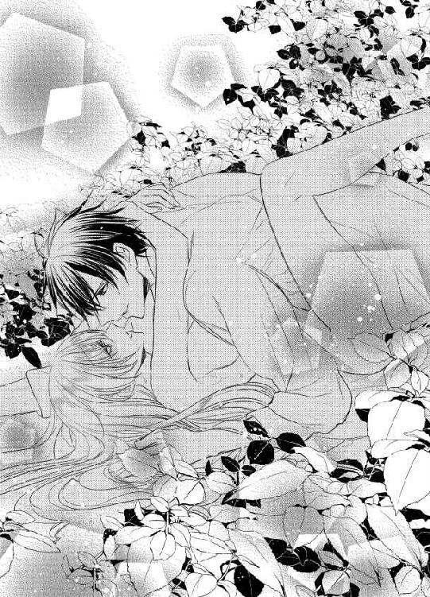
エミリアは少し体を起こすと、ガイアスの唇にむさぼりついた。
全身をくまなく、触れ合わせていたくて。
ガイアスは乳房を揉みしだきながら、激しくエミリアをうがち始めた。
いつもよりは短い、だけど、とても濃い数分が過ぎて。
「全部、中に出すぞ」
キスの合い間のささやきとともに、すごい勢いで注ぎ込まれる。その爆発を感じた瞬間、エミリアは、もう一度、イッた。
荒く息をしながら、倒れ込んできたガイアスを抱きとめて。
幸せだと、思った。
わたしはいま、世界で一番幸せだ、と。
「で、もし、無事にここを出られたとして、どうするつもりだったんだ」
ガイアスに聞かれて、エミリアは首をかしげる。
「どうするつもり、って、逃げるつもりだったわよ」
まだ、幸せの余韻にひたっていたくて。そして、たぶん、ガイアスもおんなじ気持ちでいるらしくて。
芝生の上に敷いたガウンに、二人でぴったりと寄り添って寝そべったままでいる。
こんな状態でおしゃべりをするのは、すごく楽しい。
「どうやってだ？」
「まずは、ドレスに着替える」
エミリアは、くすりと笑った。
「いや、ガウンのままで、ちらっ、と足でも見せたほうがいいだろ。男ならだれでも、喜んで街まで乗せてくれるぞ」
「運転してる最中、ずっと胸をちらちら見て？」
「そうそう。おまえがかがんだりするたびに、ほんのちょっとピンクの部分が見えるから、わざと乱暴に運転してさ。んで、なんも入ってないのに、助手席にあるダッシュボードに手を伸ばして、おっぱいを肘でつつくんだ。おまえがどんな反応をするか見たくて」
ガイアスが身を乗り出してくる。目をきらきらさせて、なんだか、すごく楽しそうだ。
「いやがるわよ」
エミリアは顔をしかめた。ガイアス以外に触れられるなんて、冗談じゃない。
「そこは、淫乱なエミリアだ。いやだ、いやだ、と心では思いつつ、肘でつつかれるたびに乳首がちょっとずつ硬くなって、つん、とガウンを押し上げていく。それを見た男は興奮して、もう遠慮せずにガウンの上から乳首をつまむんだ。あれ、なんか、ゴミでもついてるんじゃないか、とか、親切ぶって」
「ガイアスって、バカなの？」
エミリアは眉をひそめる。
「わたしが、ほかの男にそんなことされてるのを想像して、そんなになるなんて」
そう、ガイアスのものは少し勃ちあがっていた。さっき出したばかりだというのに、元気なことだ。
「想像だからいいんじゃねえか。実際にそんなことだれかにやらせたら、殺すからな」
最後の低い声は、ガイアスの本気を表していて。
ああ、わたし、愛されてる。
そのことを実感する。
「させない」
だから、エミリアはきっぱりと言い切った。
「ガイアス以外に、触れさせたりしない」
「わかってる」
ガイアスはエミリアの髪を撫でる。そうされると、すごく安心する。
「で、街まで連れてってもらってったら、そのあと、どうするんだ」
「もう逃げないわよ」
エミリアは苦笑した。
「だから、心配しないで」
「いや、おまえのその気の強さなら、ケンカしたときに、歩いてでも街まで行きそうな気がする」
どきっ、とした。たしかに、それは否定できない。ひどいケンカをして、頭に血が昇ったら、そのぐらいのことはしかねない。
すごいなあ。ガイアス、わたしのこと、よくわかってる。
「マレットさんって知ってる？」
「知ってるもなにも、あの人が仲介してくれなきゃ、エミリアには会えなかったんだぞ。忘れるわけがねえだろ」
あ、そうか。ガイアスは、直接会って、お金を払っているのだ。
「そのマレットさんが、困ったら電話しておいで、って言ってくれたから、助けてもらおうと思ってた」
「あ、その電話番号、とっくに燃やしたから」
「え!?」
エミリアは目を見開く。
「なんで、わたしがメモを持ってること知ってるの!?」
「俺じゃねえよ。俺には、最強で最悪の味方がいるだろ」
「あー」
なるほど。四人姉妹のしわざか。最初の日、エミリアがうっかり寝てしまった間に、荷物など全部調べたのだろう。裸にしたのも、お風呂に入れるためじゃなくて、何か隠してないか探ったのかもしれない。
でも、あの四人には勝てそうもないから、あきらめよう。
「マレット以外に、頼るやつはいねえのか」
「いないわ」
お屋敷は、いつ売れるかわからない。それに、もし、まだ売れ残っていて、父親がそこに住んでいたとしても、頼りにはならない。お金もないし、助ける手段もない。
赤の他人であるマレットのほうが、まだ助けてくれそう、と思えるなんて、ちょっとだけ悲しい。
「わかった。じゃあ、家出したときはマレットに頼れ。電話番号は渡しておく」
「え、なんで？」
エミリアは、びっくりした。マレットに連絡を取らせないようにしてやる、とでも言うのかと思っていたのに。
「あのな、俺の知らないだれかのところに行かれるのが、一番やっかいなんだ。マレットは信用できる」
「わからないわよ」
エミリアは唇をとがらせる。
「ガイアスに内緒で、わたしをだれかに売ろうとするかも」
「おまえは高利貸しのことをわかってない」
ガイアスは、ふっ、と笑った。
「だれが一番金を出すか、それだけがやつらの関心事なんだ。商品には手をつけないし、二重売りをして信用を落とすこともしない。エミリアを俺のもとに無事に戻すたびに金を払う、と契約すれば、傷ひとつつけずに、おまえは俺のところに帰ってくる。だから、怒りに我を忘れて、俺とおんなじ場所にいることすらいやになったら、マレットを頼れ。いいな」
ああ、愛されてる。
本当に本当に本当に、愛されている。
「うん、わかった」
だから、エミリアは素直にうなずく。
それで、ガイアスが安心できるのなら、マレットを頼ろう。で、頭が冷えたら、ガイアスのところに帰してもらおう。
何度も家出をするかもしれない。そのぐらい、激しいケンカをするかもしれない。
でも、戻ってくる。
だって、ガイアスのそばが、自分の居場所なんだから。
「ガイアスは家出しないで。わたしは追えないから」
ここがどこかも知らない。車の運転なんて、もちろんできない。
ガイアスが出て行ったら、どうしていいかわからない。
「俺が出てくわけねえだろ。ここは、俺の城だ」
それはつまり、いつだって居場所をはっきりさせておいてくれる、ということ。
うん、それなら安心。
「それでいいな」
「うん、それでいい」
エミリアはガイアスの胸に頭を乗せて、ちゅっ、とそこにキスをした。ガイアスの心臓の音が、とくん、とくん、とやさしい音を刻んでいる。
「で、だ」
ガイアスが、エミリアを抱き寄せた。
「おまえは、乳首をつままれて、いつものようにかわいい声で、あんあん鳴くんだよ」
「...なんのこと？」
エミリアは眉間に皺を寄せる。
どこがどうなってそんなことになったのか、まったく理解できないんだけど。
「さっきのつづきだっての。ガウンを押し上げる乳首に目をつけられて、それをゴミがついてる、ってつままれるんだよ」
「え、まだ、その話するの!?」
エミリアは驚いて、ガイアスを見上げた。
「だって、もうガウンで飛びだしたりしないわよ？」
「いいから、いいから」
ガイアスはにやにやしている。どうやら、ただ単に楽しんでいるらしい。
...あきれた。
エミリアはため息をついた。
ガイアスって、変態なのね。
「山道はガタガタ揺れるから、乳首をつまむ指も上下左右に大きく振れて。で、男は太腿にわざと滑らせる」
「ふーん」
そんなめんどくさいことしなくても、犯したければ、さっさとやればいいのに。まどろっこしいわね。
「はだけたガウンの内側に手を入れて、そのまま上のほうにずらして、下着ごしに触ろうとしたら、なんと！ この女、下着つけてねえ」
くっついているから、ガイアスのものが勢いを取り戻してきたのがわかってしまう。
こういう想像をして楽しむのが好きなのか。それとも、エッチなこと全般が大好きなのか、よくわからないけど。
実行に移さなければ害はないから、好きにさせてあげよう。
「それも、乳首いじっただけなのに、もうびしょびしょ」
「そんなすぐに濡れないわよっ！」
エミリアは、抗議の声をあげた。さっきは、淫乱、ということにしてあげたけど、実際はそうじゃない。
絶対にちがう。
「よし、わかった。実験しよう」
「...え？」
エミリアは、けげんに思う。
いったい、何を実験するの？
「うちには、山道を走るのに適したトラックがある。あれだと座席が広めだから、いろいろできるしな。エミリア、ガウン着ろ」
ガイアスはエミリアを離すと、いそいそと立ち上がった。脱いだ洋服を、さっさと身につけていく。
実験って、もしかして...。
「いやに決まってるでしょーっ！」
なんで、そんなことしなくちゃならないのっ！
「俺、言ったよな」
ガイアスはエミリアをじっと見た。
「これからはエスカレートするぞ、って。いろんなシチュエーションを楽しもうぜ。俺が、好色なトラック運転手、おまえがどうしても街まで行きたい淫乱花嫁。うわ、すげー興奮してきた。俺は俺であり、なおかつ、トラック運転手っていう役割も演じるわけだから、おまえが感じてるところを、しめしめ、と思ったり、こらあ！ 俺以外になんてことを！ って嫉妬したり、で楽しいぞ」
「いやって言ってるでしょ！ しないわよ！」
「エミリア」
ガイアスがエミリアの手を取って、立ち上がらせた。そのまま、そっと抱きしめる。
「愛してる。だから、俺の夢を、たった一度でいい、叶えてくれ」
ずるい。
エミリアは思う。
こんな頼み方をするなんて。そして、抱きしめられると、こんなに温かくて安心するなんて。
そんなの、ずるい。
「...一度だけだからね」
ほら、こうやって、譲歩してしまうじゃないの。
「一度だけだ」
ガイアスは、エミリアの顔中にキスを散らした。こんなに喜んでくれるならいいか、と、ため息まじりに思う。
これが、惚れた弱味というやつなのだろう。
エミリアはガウンを取ると、はおった。紐で、ぎゅっとしばりつける。
「あ、もっと乱れた感じで。ほら、走って逃げたんだから、そんなにきれいには着てられないだろ。ちょっとかがんだだけで、乳首が見えるぐらいに着崩せ」
「...本当に、これが最初で最後なのね？」
エミリアは不信感いっぱいで聞いてみた。こんなにうきうきと、細かく設定するってことは、やりたくてしょうがないわけで。気に入ったら、またちがうシチュエーションでやりそうじゃない？
「神にかけて誓う」
ガイアスが十字を切った。
なら、いいか。
エミリアは安堵する。その後、俺は神なんて信じてないから、という口実で、もっととんでもないことをいろいろさせられるなんて、エミリアは知らない。
エミリアは、ガウンを着崩した。ガイアスがエミリアの手をつかんで、トラックがあるだろう方向へ歩き出す。
「エミリア」
「ん？」
「愛してる」
「わたしも愛してる」
そう告げたら、心の中が温かくなった。
とんでもないことを要求する変態だけど。
わたしは、ガイアスのことを愛している。
どうして、わたしがこんな目に！ と憤っていたときもあった。
でも、いま、こうやって幸せになれた。
だから、もう悔やまない。
父親が破産したことも。借金を背負ったことも。
すべて、この道に通じていたと心から思えるから。
いまはただ、隣にいる人の手をしっかり握って。
二人で歩いていこう。
未来へ。
新しい家族になるために。
あとがき
蜜猫文庫さんでは、はじめまして。森本あきです。
今回は、とにかくエロく！ をコンセプトに、がんばってみました！ いつも、ちがうジャンルばっかり書いてるので、女の子を書くのが新鮮すぎて、すごーく楽しかったです。ベビードールフェチなみなさまには、喜んでいただけるのではないかと（笑）。そんなフェチなかたがいらっしゃることを願ってます。
さて、あとがきのページをたくさんいただいたので、カバーコメントにも書きましたが、『ビッグバンセオリー』の話でも！ あ、ここから先は、アメリカドラマに興味のないかたは、ささーっと飛ばしてくださいませませ。
私は、アメリカの視聴率を毎週チェックして、おもしろそうなドラマの目星をつけて、ＤＶＤを借りるときの参考にしています（もちろん、視聴率がいいからおもしろい、というわけでもないんですけどね...）。で、あるとき突然、彗星のように現れて、トップを争うようになったのが、『ビッグバンセオリー』でした。調べてみると、三十分のシットコム。それも、宇宙物理学のオタクたち四人と、普通の女の子のお話。
おもしろそうすぎる！
日本でも、海外ドラマチャンネルでやっているみたいなのですが、問題がひとつ。私、テレビでドラマを追っかけられないのです。まず、テレビを見る習慣がない。そして、仕事の関係上、起きている時間が不規則。あと、毎週何時とかって、絶対に覚えられない。ケーブルテレビの録画の仕方が特殊すぎて、私には無理。
もともと、海外ドラマはＤＶＤで好きなときに見るようにしているので、まあ、いいか、と思ってたんです。こんなに人気あるんだし、そのうちＤＶＤになるだろう、と。
まさか、七年も放置されるとは思わなかった！
去年、ロンドンのホテルで、うわ、なんだ、これ、わけわかんないけどおもしろい！ と思って見ていたのが、あとから調べたら『ビッグバンセオリー』でした。途中からだから、人物の関係性もわかんないし、そもそも、専門用語多すぎて聞きとれないし、だけど、とにかく、勢いと迫力で笑わされてしまう、すごいドラマ。それからずーっと、私は願ってました。
早く見たい！ すっごい見たい！
いやー、願いって、叶うもんですね。
ようやく、ＤＶＤになってくれました。シーズン３まで、一気に見て、早くもつぎのＤＶＤを待ちわびています。もうね、とにかく、ペニーがかわいい！ アホっ子ラブ！ シェルドンがおかしすぎる！ あんなの身近にいたら、絶対に関わりたくないですけど、ドラマの中にはいてくれないと困る。ペニーとくっついたり離れたりしてる（アメリカで放送中のシーズンでは、くっついてるらしい）レナードは、途中からすごく普通の人になっている気がします。『フレンズ』のロスとレイチェルみたい、とアメリカでは言われてる、ペニーとレナード。うん、たしかに、そうかも！ だったら、最後は、二人が結婚してハッピーエンドかな～。
『フレンズ』は、とにかく大好きで、いまだに私の一番好きなアメリカドラマです。だけど、もう、あんなドラマ作れないんだろうな、三十分のシットコムって、はやりからはずれちゃってるし、としょんぼりしていたところに出てきた、『ビッグバンセオリー』。人気すぎて、シーズン１０まで更新ずみ！ ひょっとすると、『フレンズ』を超えるのか!?
出演者みんなが仲良くて、全員横並びのギャラを要求している、というのも、『フレンズ』とそっくり。『フレンズ』は、レイチェルありきだったのに、ジェニファー・アニストンが、みんな一緒じゃなきゃやだ、と六人おなじ金額の更新しかしかなかったんですよ。『ビッグバンセオリー』は、シェルドンショーと呼ばれているぐらいなのに、ジム・パーソンズが、みんな一緒に更新だ！ ってやってるみたいです。そういうところも画面から伝わってくるから、全員が愛しく思えます。仲良しっていいよね！
いやー、語りすぎた（笑）。海外ドラマ見るしか楽しみがないのね、と、生温かい目で見守っていただけると、ありがたいです。
さてさて、恒例、感謝のお時間です。
挿絵は、別ジャンルでは何度かお世話になってます、旭炬先生！ またご一緒したい、と思っていたので、嬉しいです。素敵な二人を、ありがとうございました！ つぎもあれば、いいなあ。
担当さんには、大変お世話になりました。ＴＬジャンルをよくわかっていない私に、たくさんのアドバイスをありがとうございます！ また、ぜひよろしくお願いします。
それでは、またどこかでお会いできるといいですね。
森本あき
Story
森本あき
もりもと あき
『ビッグバンセオリー』に、はまってます。
『フレンズ』に次ぐ、
シットコムの名作が出てきてくれたことが嬉しい！ なに言ってるか、
よくわかんないけど（笑）、みんなの会話が楽しいです。
ペニーとレナード、幸せになあれ！
Illustration
旭炬
あさひこ
８月１日生まれ。Ａ型。
長髪美人とまつげが好きです。
蜜猫文庫をお買い上げいただきありがとうございます。
この作品を読んでのご意見・ご感想をお聞かせください。
あて先は下記の通りです。
〒102-0072 東京都千代田区飯田橋 2-7-3
㈱竹書房 蜜猫文庫編集部
森本あき先生／旭炬先生
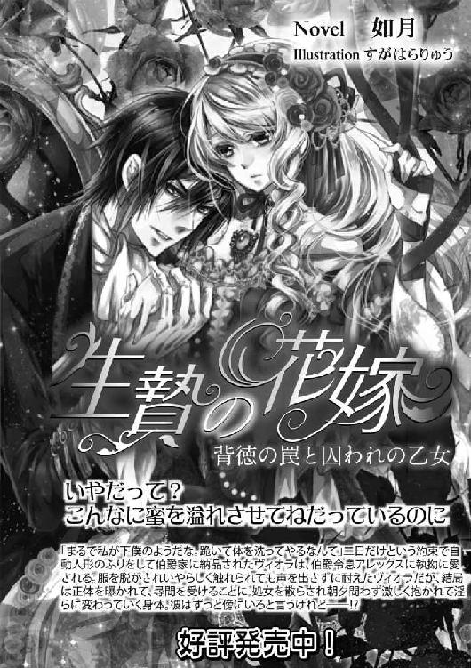
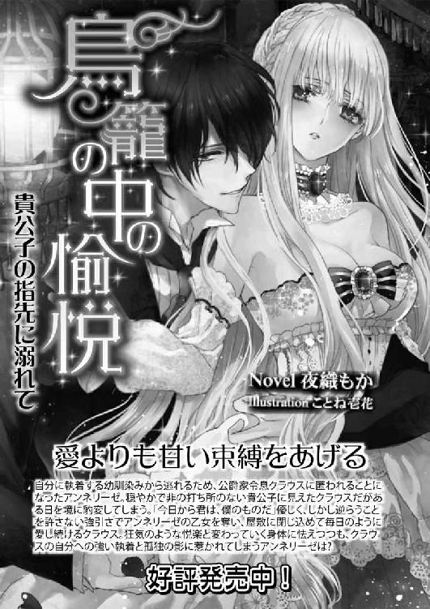
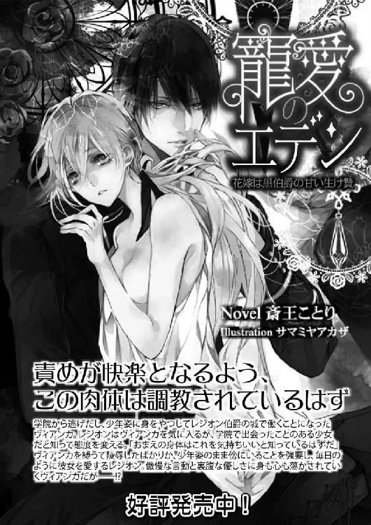
新妻はみだらに濡れる［電子書籍版］
発行日 ２０１５年２月１日 発行
著 者 森本あき
デザイン antenna
発行者 後藤明信
発行所 株式会社竹書房
〒１０２－００７２
東京都千代田区飯田橋２－７－３
ＴＥＬ ０３－３２６４－１５７６
データ加工 有限会社ワイズネット
©MORIMOTO Aki 2015
本書の一部あるいは全部を著作権者および株式会社竹書房に無断で複写・複製すること、および放送・上演・公衆送信（ホームページ上への掲載を含む）などは、法律で認められた場合を除き著作権の侵害となります。